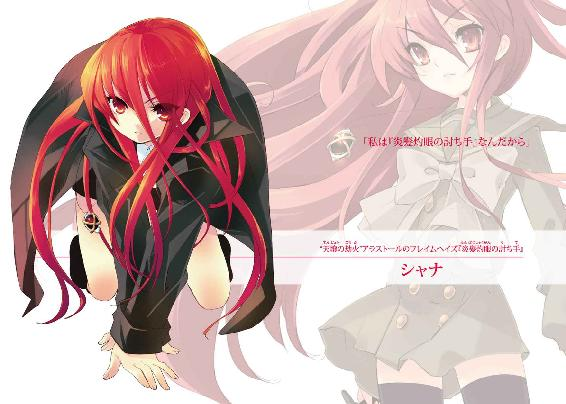
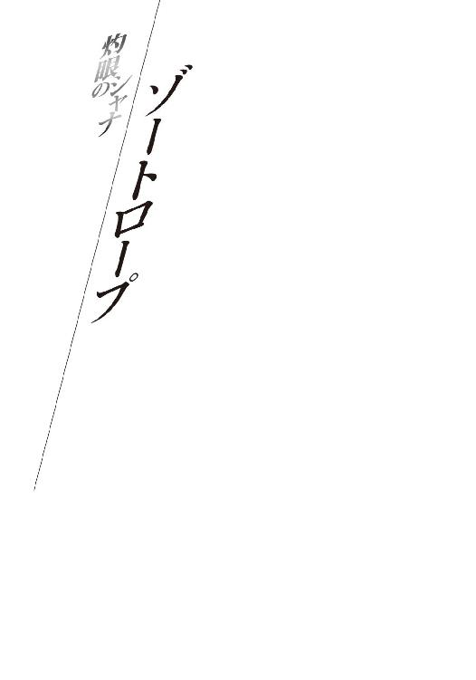

| 灼眼のシャナS 02 | |
| 高橋弥七郎 | |
| KADOKAWA / アスキー・メディアワークス (2013) | |

本書（電子版）に掲載されているコンテンツ（ソフトウェア／プログラム／データ／情報を含む）の著作権およびその他の権利は、すべて株式会社アスキー・メディアワークスおよび正当な権利を有する第三者に帰属しています。
法律の定めがある場合または権利者の明示的な承諾がある場合を除き、これらのコンテンツを複製・転載、改変・編集、翻案・翻訳、放送・出版、公衆送信（送信可能化を含む）・再配信、販売・頒布、貸与等に使用することはできません。

１ 不審の萌発
フレイムヘイズ『万条の仕手』ヴィルヘルミナ・カルメルと、同じく『炎髪灼眼の討ち手』シャナが、平井家の表札を掲げるマンションの一室で同居を始めてから、一月余が経つ。
世界のバランスを守る異能者として、世の陰に跋扈する〝紅世の徒〟討滅の使命を持つ彼女らが、諸事情あるとはいえ、また仮初の宿とはいえ、定住と言って良いほどに長逗留しているのは、全く久方ぶりのことだった。
この、移動城砦『天道宮』で別れて以来数年ぶり、という共同生活にも、慣れてくると一定のサイクルが生まれる。二人して、異能の身にあかせて自堕落な生活を送ることを良しとしない、勤勉かつ実直な性格である。日々のサイクルは、細かな時間割表のように厳密なものとなっていた。
ヴィルヘルミナが、そこに微妙なズレの在ることを感じたのは、残暑の宵闇の中。
「照明点灯」
彼女の頭上、ヘッドドレス型の神器『ペルソナ』に意思を表出させる〝紅世の王〟、彼女に異能の力を与える〝夢幻の冠帯〟ティアマトーから促された瞬間だった。
「......もう、こんな時間でありますか」
不分明な違和感に数秒遅れて、手許の暗さに気付く。書類整理へと没頭する間に、日暮れを迎えていたらしい。机の端にあるリモコンで、部屋の明かりを点けた。
蛍光灯の白けた光の下、
机の他には、書類の詰まった箱と居並ぶ整理棚、小さな箪笥と簡素なベッドのみ、という機能第一の主張も露わな、彼女の私室兼執務室が照らし出される。
齎された明るさで、今度は外の暗さに目が行った。ようやく違和感の正体を悟り、彼女らの間で特定の人物を指す場合の慣例である、主語を省いた言葉を交わす。
「遅い、でありますな」
「要用発生」
他でもない、特定の人物ことシャナは、フレイムヘイズでありながら継続的に高等学校へと通っていた。街に巣食っていた〝紅世の王〟一味への囮となるモノを見張るため取られた暫定措置が、いつしか定住における習慣、生活の一部となっていたものである。
再会した直後、ヴィルヘルミナは、この多く時間を制約される立場は不要、即刻あらゆる状況に対応できる自由な態勢へと改めるべき、と提案もしたが、またすぐ起きた諸々の騒動、および幾つかの助言と取り成しの結果──一日の出来事を笑顔で語るシャナの姿を何度となく見たことも手伝って──なし崩し的に容認させられている。
彼女らの生活サイクルの中で、ほとんど唯一、時限の前後する余地を互いに許している部分は、まさにその学校からの下校時刻にあった。
「しかし、突発的な雑事が、ここ一週間ほど続くというのも奇妙であります」
シャナと同居を始めて以降、遅くの帰宅は幾度かあった。あったが、連続することはなかった。それが今度は相次いで一週間......確かに、生活サイクルの変調と言えた。
「学校行事」
最近知った言葉で、ティアマトーが尋ねる。
ヴィルヘルミナは頷いて、傍らに張られた藁半紙のプリントに目をやった。
学校で配られた一ヶ月分の予定表によると、大きな行事であるらしき『清秋祭』は半月先、来月の項にある。準備としても早すぎるように思われた。
「違う、ようでありますな」
はて、と腕を組んで考え込むが、それで解答を得られるような類の疑問でもない。
そんな悩ましい空気を、
「ただいま」
折り良く、シャナ当人の声が破った。
少女が扉を閉め、鍵とチェーンをかけ、靴を脱いで揃える、その間にヴィルヘルミナは、いつものように玄関へと出迎え、声をかける。
「おかえりなさいませ」
「帰宅待望」
続けてティアマトーが、ストレートに彼女らの状況を言い表した。
生まれ育った『天道宮』でも、最後の最後まで話す機会を持たなかった無口な〝紅世の王〟の言うところを、それでもシャナは即座に理解する。
「待ってたの？」
「なにか急用でもあったのか」
その胸に下がった、黒い宝石に交差する金の輪を意匠したペンダント、神器〝コキュートス〟から、彼女に異能の力を与える〝紅世の王〟、〝天壌の劫火〟アラストールが尋ねた。
ヴィルヘルミナは首を振る。
「いえ、こちらには特に」
「？」
妙な言い回しに、シャナは首を傾げ、アラストールが尋ね直す。
「どういう意味だ？」
ヴィルヘルミナは少しだけ、質問を自分の中で整理して、口に出す。
「このところ、帰りが遅いようでありますが」
「所用詮議」
なにをしていたのか、と珍しくティアマトーも後を追うように訊いた。
二人としては特段、問い詰めたわけでもない。そんな強要などせずとも、彼女らの育て上げた完全なるフレイムヘイズは、率直かつ的確に答えてくれるはずだったからである。
ところが、
「......ん」
シャナは言葉に詰まった。
「ちょっと、いろいろあった」
曖昧で中身のない、説明になっていない説明。
ヴィルヘルミナらが、予想だにしていなかった反応だった。
面食らって、僅か声を失った二人は、
「ちょっと、いろいろ、とは？」
「不明確」
重ねて訊くが、シャナは言い辛そうに立ち尽くすのみ。
そこにアラストールが、
「まあ待て。玄関先で長々と立ち話など」
と割って入った。
「まずは荷を置き、衣服も改めねば。夕食の時間も近いのではないか？」
平素、日常会話に口の重い彼は、ヴィルヘルミナ相手だと饒舌になる。これは、少女という結実を得るまでの数百年、ともに『天道宮』で試行錯誤を続けた同志であり、また長く戦場で背を預け合った友でもあるためだった......が、今の状況では誤魔化しにしか聞こえない。
そんな、フレイムヘイズらしからぬ態度をヴィルヘルミナが糾弾する前に、
「うん、それじゃ」
シャナが先に答え、素早く傍らを通り抜けて自室へと逃げ込んだ。閉まった襖の奥から、あえて感情を隠しているものらしい、平淡な声だけが届く。
「このまま宿題するから、晩御飯ができたら呼んで」
「......」
「......」
受け答えを拒否する露骨な姿勢にショックを受けた『万条の仕手』は、廊下で呆然と立ち尽くした。
翌日の昼過ぎ、ヴィルヘルミナの姿は、
「と、いうわけなのであります」
シャナが日常的に出入りする坂井家の居間にあった。
「その後は、幾ら問い質しても言を左右にして答えず、あまつさえ〝天壌の──」
アラストールを真名で呼びかけ、慌てて言い直す。
「──つまり、電話で相談した友人までもが、あの子の弁護に回る始末」
「そうですか、アラストオルさんも......」
お茶と饅頭を二組載せたテーブルの対面、おっとりした容貌の女性が頷いた。
坂井千草。
海外に単身赴任している夫・貫太郎から、坂井家の留守を預かる専業主婦である。
この、〝紅世〟に関する事情を知らされていない、ただの一般人でしかない女性に、ヴィルヘルミナは一目も二目も置いていた。当人の見識の高さのみならず、子供たちの心境にも通暁していることから、シャナについての適切な助言を幾度か受けていたためである。
今日の相談は、より切迫の色が濃い。
千草はそんな彼女の、今までの素朴な疑問や困惑ではない、焦燥の源泉を、
「不安ですか？」
「!!」
あっさり、ぴったり、言い当てていた。
「あの生真面目なゆかりさんが──」
と、とある少年が付けた通称である『シャナ』ではない、彼女の本名（と千草が思っている偽名）で言い、
「──いきなり、話をしてくれなくなったんですもの、当然ですわ」
準備するように、千草はお茶を一口含む。
ヴィルヘルミナも湯呑を取り、この街に来てから飲むようになった緑茶、その渋さを、今抱く気持ち同然に味わった。
そこに、
「私も......」
ごく自然な間で、千草が再び口を開く。
「あの子と半年近く接して、人となりを多少なりと理解しているつもりです」
「はい」
ヴィルヘルミナも平静な声色で同意した。これは、意見を拝聴するサインである。
許しを得たように、千草は微か一礼し（彼女はまず、この過程を経てから、立ち入った話をする）、自分の見立てを述べる。
「ゆかりさんは、心を貫く真っ直ぐな芯を、堂々と頑なに守って、自分に甘えを許さない......つまり、自分に都合の悪いことだからといって、安易に誤魔化したり隠したりするような子では、本来ないと思うのです」
「はい」
全くその通り、と同意以上の誇らしさと喜びを持って、ヴィルヘルミナは頷き返した。
が、千草は見立てに含めた「本来」について続ける。
「カルメルさんは、それを熟知し、尊重しているからこそ、らしくないところに不安を覚えていらっしゃるのですね？ 変わってしまうのでは、変わってしまったのでは、という不安を」
「......はい」
どこまでも明晰な指摘に、先とは一転した、気落ちの同意が返った。表情にこそ大きな変化を見せないが、声にははっきりと滲み出ている。隠しているつもりで、隠せていない。
何度か相談に乗った間柄として、千草は悩める彼女に理解を促す。
「でも、そんな彼女だからこそ、隠していることに何か意味があるのかもしれません」
思いもよらない見解に表れる戸惑いへと、さらなる念押しを。
「結論を急がず、少し様子を見られてはどうでしょう」
「......」
それはできない、という彼女の秘めた拘りが、今度は沈黙を選ばせた。
どちらが駄々っ子か分からない女性を前に、千草は困った風に笑う。笑って、
「そうだ！」
名案という風に手を叩いて提案する。
「そんなにご心配なら、もっと何気なく訊けるはずの──」
未だ日も高い夕方、ヴィルヘルミナの姿は、
（いかに奥様の妙案とは言え、このような......）
（妥協容認）
帰宅する学生もチラホラ見かける街の一角にあった。
その傍らでは、塀にしがみ付く奇妙な姿勢で、縮こまった身でぎこちなく、少年が歩を進めている。彼の名は、坂井悠二。
帰宅の途にあった眼前、唐突にヴィルヘルミナの訪問を受け、
「奥様のご指示であります」
という抗い難い一言の元、お供を務めさせられているのだった。
実は、と言うまでもなく、ヴィルヘルミナにとっては不本意な成り行きである。
この、人間ではない......しかも、どちらかと言えばネガティブな意味において特殊な存在たる少年が、常々シャナに悪い影響を与えている、と彼女は考えていた。
一月ほど前には、自身の複雑な事情から、考える以上の行動である消去へと乗り出してもいる。その際は、シャナとの激しい交錯を経て、当面は監視に止める、という結論を得ていたが、互いの危うい緊張は、根本の理由が解決を見ていない以上、未だに継続中だった。
その悠二が、
「なにも、後をコッソリつけたりしなくても」
塀の角から、折れた先の道を覗き込んで言う。
「僕が直接、訊けばいいんじゃないですか？ 母さんもそうしろって言ったんでしょう？」
「迂闊な接触と詮議で、より態度を硬化させてしまっては意味がないのであります」
より熟練し洗練された挙措で、角から向こうを窺うヴィルヘルミナが答えた。
その頭上、ティアマトーも短く釘を刺す。
「軽挙自重」
「はあ」
悠二としては、異論があっても反抗などできない。彼女に殺されかかった、という事実は、心身に深々と恐怖を根付かせている。千草やシャナの手前、今すぐに害を加えられることはない、という強靭ながらか細い希望の糸だけが、唯一縋り得る縁だった。
その糸を紡いでいる半分が、二人の窺う角の向こう、やや遠くに背を見せ歩いている。
腰の下まである艶やかな黒髪を揺らす小柄な少女、シャナである。
ヴィルヘルミナは悠二を伴い、下校する彼女を尾行していたのだった。
「はあ、ではないのであります。気配の感知にはくれぐれも抜かりのなきよう」
「専心」
「はい」
襟を正して答え、シャナの気配を探る少年は、フレイムヘイズをも凌駕する持ち前の鋭敏な感知能力を、尾行に利用されている。自身は、身の安全を図る上から、またシャナとの間柄への後ろめたさから、レーダー扱いという待遇にも不服を唱える気はない。
「もう少し、離れても大丈夫ですよ」
むしろ、役立つことのアピールなどに努めてみる。
実際の話として、直接ジロジロ見ていると、シャナに勘付かれてしまう恐れもあった。よほどの警戒態勢を取っていない限り、フレイムヘイズは殺気や悪意のない視線を無視する、とヴィルヘルミナは説明していたが、それでも不用意な接近は避けた方が無難であろう。
その離れるまでの時間潰しか、ヴィルヘルミナは改めて尋ねる。
「学校における態度に変化などは？」
悠二はさっさと首を振った。
「いえ、特には」
「見逃しているだけ、ということはないでありましょうな？」
「それは分かりませんよ。僕はカルメルさんに言われるまで、シャ」
ナが、と自分の付けた名前をウッカリ言いかけて、咳払いする。
「ゴホンッ！ 彼女が隠し事とか、寄り道をしてることにも気付けなかったんですから。カルメルさんも見てたでしょう？ 今日も、いつもと同じ場所で別れた後に......ええ、と、彼女はわざわざ反対方向に折り返してる。これは、僕にも隠してるって証拠ですよ」
「むむ」
語調の押しこそ弱いが、説明は理路整然としている。ヴィルヘルミナも、唸り声で消極的に同意せざるを得ない。
（奥様の人選は、やはり正しい、ということでありましょうか）
（適材適所）
二人して千草を評価する方向へと、無理矢理に結論を捻じ曲げる。少年によって事態が好転することを、状況としては望んでいるが、感情としては望んでいない。直接尋ねさせないのも、先の理屈以上に、それが大きな抵抗となっていた。
（あくまで索敵の機能のみを利用し、変調の核心には近付けぬよう心がけねば）
（隔離）
眼前に存る『坂井悠二』、
「杞憂じゃないのかなあ......彼女に限って、そんなこと......」
などと零している少年は、二人にとって単なる『少女に付いた悪い虫』ではない。
かつて御崎市を襲った〝紅世の王〟の一味に、この世に在るための根源の力である〝存在の力〟を喰われて死んだ『本物の坂井悠二』の残り滓たる道具、トーチ。
また、トーチとなり果てた身に、毎夜零時、その日の内に消耗した〝存在の力〟を回復させる働きを持つ永久機関、『零時迷子』を宿している、『旅する宝の蔵』。
さらに、その『零時迷子』に、本来の持ち主たる『永遠の恋人』ヨーハンを封じ、転移の寸前に謎の自在式を打ち込まれ異様な変質を果たした、謎を胚胎する卵。
フレイムヘイズの使命を遂行する上で、放置しておくにはあまりに危険な存在であり、ヴィルヘルミナら個人にとっても、友たる恋人らの片方を秘め、片方を呼び寄せる波乱の種......同時に、シャナの主張によると、危険や波乱以外の部分、機知においては有用な人物だった。
自分が関わらざるを得ない〝ミステス〟と、少女に関わらせたくない少年とが一つ身に同居する──坂井悠二とはそんな、『万条の仕手』にとって運命の悪意と酷烈さを凝縮したような存在なのだった。仮にでも好意など抱けようはずもない。
その少年が、
「そもそも、少し寄り道したくらいで、心配することもない、と思うん、です......けど」
と（ヴィルヘルミナらにとって）全く分かっていないこと言う。
鉄面皮が可能な限りの憤りを示し、ギロリと睨んだ。
「少しくらいの、という常からの緩みは、命取りの元」
「武運繊細」
殺されかけた身として、悠二は本気の胴震いに襲われる。
「そう、でした......はい」
「心構えの鈍化が、このような生活の内に齎されたとなれば、今一度、日々のスケジュールのみならず、当地での在り様を考え直す必要があるやもしれないのであります」
「在り様を、考え直す......そ、それって、まさか学校を辞めさせるってことですか!?」
思わぬ話の展開に、悠二は驚き叫んだ。
再び、ヴィルヘルミナは視線で〝ミステス〟を射る。
「そういうところだけは、頭の回転も速いようでありますな。いかにも、元来が惰性で在籍しているだけのこと。宝具を護衛するのなら、もっと別の態勢もあるはずであります」
「そんな......」
悠二は肩を落とした。
と、ヴィルヘルミナは、
（......？）
この少年の反応に、違和感を覚えた。
血気の盛りならば、ここは突っかかってくるべき場面なのではないか。事態の急変に驚き、受けた指摘に落ち込み、理不尽な強権に反発しているのは、見た目にも明らか。でありながら、感情を吐き散らす抗弁もせず、無鉄砲に詰め寄ってくることもない。
ふと、
言葉の連想から思い出す。
ヴィルヘルミナが御崎市に現れた当時、宝具『零時迷子』の真相の断片を語ったことがあった。その際、彼はまさに突っかかるように質問を次々と発し、得た言葉の端から手がかりを掴み、謎の深奥に切り込んできた。逆上に似た勢いで、しかし異常なまでの明晰さで。
本来、感情で動くはずの場面では食って掛からず、理性的な追及では勢いを増して踏み込んでくる。ごく平凡な人間に見えて、起きた出来事への対処に奇妙な齟齬があった。
（この、少年は？）
（異質）
今覚えた違和感と、かつての彼の態度には、大きく通低するものがある......という勘、その端を、ヴィルヘルミナらは踏んでいる。
もしかして、向いているのではないか？
そんな、抱きたくもない感想まで、心に過ぎっていた。慌てて掻き消すように、眼前の、外見には消沈しているだけの少年に、まずは当面の行動を求める。
「閑談はこれまで。そろそろ追尾を再開するのであります」
「はい......、......っ!?」
真剣に頷いた顔色、表情が、驚愕と焦りで急激な変化を見せた。
ヴィルヘルミナらも、先の考察から豹変への衝撃を受け、警戒の張りを声に示す。
「どうしたのでありますか」
「至急標示」
まさか、今というときに〝徒〟の気配でも掴んだのか。
そのまま数秒の硬直を経て、悠二は二人に向き直り、言い辛そうに、一言。
「すいません......見失いました」
上がりかけた評価は、全く簡単に、容赦なく、地に墜とされた。
２ 不安の追駆
夕の赤に染まる中、坂井悠二とヴィルヘルミナ・カルメルの姿は、
「あんなことができる心当たりは、他にありませんし」
「たしかに、順当な推測でありますな」
御崎市東部にある旧住宅地、佐藤家の豪壮な門前にあった。
幾ら悠二が油断していたとは言え、持てる能力にそうそう翳りが出るわけもない。
なにより先刻の状況は、徐々に遠ざかり、いつの間にか見失っていた、というものではなかった。シャナの気配が唐突に、遮断されるように途切れている。この意味するところは明白。悠二の方が気配を捉え損なったのではなく、シャナの方が気配を消したのである。
傍を歩くヴィルヘルミナから見ても、悠二の動揺は明らかとなっている。保護者の過剰な心配、どうせ息抜きの寄り道、現行犯で大目玉を食らって話は終わり、程度にしか考えていなかったに違いない。
が、気配を消してまで尾行を撒いたとなると、状況は俄かに深刻味を帯びてくる。
全くもって、らしくない話なのである。
懸念を的中させた彼女ら自身も、より大きな動揺の中にある。
（尾行への察知のみならず、対策まで立てていた......ということは、遊興気分などではない、完全な臨戦態勢......そうまでする隠し事を、私やこの〝ミステス〟にしている、と？）
（危機的状況）
それら思いを同じくしているだろう悠二も、ようやく本気の色を顔に行動に表している。見失ってすぐ、考慮を巡らして、この佐藤家へと彼女らを案内したのだった。
理由と目的は分からずとも、手段の方は容易く推測できたからである。
気配の隠蔽は、『自在法』を使う以外に在り得ない。
フレイムヘイズ『炎髪灼眼の討ち手』としてのシャナは、世の事象を思う儘に繰るこの術が、さほど得意ではなかった。キャリアが短いこともあり、基本的かつポピュラーな幾つかを使える他は、独自のそれも片手の指に足りない未熟さである。
となれば、気配が消えたのは、自在法──恐らくはそれを込めた器具──を供与された以外に在り得ない。そして、そんな真似のできる人物は、御崎市では特定一個人に絞られる。
言うまでもない、〝紅世の王〟、〝蹂躙の爪牙〟マルコシアスのフレイムヘイズ、『弔詞の詠み手』マージョリー・ドー。
彼女らは、悠二の級友・佐藤啓作の家に居候している。家、居候、と言っても、御崎市の旧地主階級が軒を連ねる地区で一際大きな豪邸、その室内に設えられたバーを根城として占拠している、という、実状としては色々と度の外れたものだったが。
彼女の強さに憧憬を抱き、その子分を自認している佐藤少年は、同じく親友の田中栄太と日夜、怪しげな自己鍛錬なるものを行って、いつかの日に備えている。また、彼は家族と離れた一人暮らしで、他には豪邸を保守管理する昼勤のハウスキーパーしかいない。彼らの退勤後、つまり夕方の今時分に訪ねれば、まず大抵は田中と二人で出迎えてくれる。
等々、悠二は道すがら、ヴィルヘルミナの知ること知らないことを手短に解説していた。
が、
「へえ、今日は田中、来てないんだ」
「ああ。家の用事らしくてな」
今日、呼び鈴に応え出てきたのは、佐藤一人だけだった。
悠二も、珍しい事態への驚きを隠さず、一方で用事は用事として尋ねる。
「マージョリーさんいるだろ？ ちょっと訊きたいことがあってさ」
いるかい、という言い方をしないのは、気配を明確に感じ取っているからである。
佐藤は、悠二の境遇や能力を熟知しているので、その点に特別、指摘や問いかけをすることもない。ただ、ヴィルヘルミナにチラリと目をやり、
「それが、な」
と苦笑を漏らした。
「今日は昼からしこたま呑んでて......『〝徒〟が来る以外で起こしたら死刑』って言われてんだ。そんな、ものすごく重大で急な用事だったりするのか？」
「うーん、急いでるような、そうでな」
「急用であります」
「即刻面談」
悠二の声に押し被せて、ヴィルヘルミナらが断言した。
「カ、カルメルさん」
今にも奥へ踏み込まんとする勢いの彼女を、悠二は慌てて声だけで制止する。声だけ、というのは、迂闊に袖口を引っ張りでもしようものなら、容赦ない反撃が来るとの確信があるためである（現に少し前、とある騒動の後、遠慮無用の一撃を食らい昏倒させられている）。
もちろん、声だけであっても、睨まれるのは睨まれる。
「異論でも？」
「容喙無用」
「ええ、と......」
恐る恐る答えて、悠二は少し門前から離れた。
「カルメルさん」
内緒話を促されていると気付き、ヴィルヘルミナも歩み寄って体を傾ける。
「何故、躊躇などするのでありますか。仮に『弔詞の詠み手』が本当に寝ていても、〝蹂躙の爪牙〟に尋ねれば......」
「ちょっと待ってください。マージョリーさんが彼女の気配を消す手助けをしているのは、他にできる人がいない以上、間違いないでしょう？ 言い方は悪いですが、もう共犯は確定なんですよ」
「む」
悠二が何を言いたいのか、ヴィルヘルミナは薄々察した。
「普段なら在り得ない、この二人が組んでいる状況は、怪しいって印象だけで済む話じゃなくて、周到に準備をしていた証拠でもあります。僕らが気配の遮断を知って、ここを尋ねてくることも、向こうは当然、予想しているはず......今マージョリーさんに会っても、誤魔化しや嘘を吹き込まれるだけでしょう。調査の攪乱を進んで受けに行くようなものです」
「むむむ」
快く思っていない少年の指摘が正当なものであるらしい、しかも自分の目的に対する助言ゆえに受け入れざるを得ない、二重の悔しさに唸りが増える。
さらにこの事実から、『炎髪灼眼の討ち手』の見込むだけの資質が少年にあることまで思い知らされたようで、ますます抱いた悔しさが煽られる。簡単に言うと、癪だった。
少年の方は、鉄面皮に隠されたそれらの感情も知らず、提案を継ぐ。
「それよりも......」
さらに数十秒、ヒソヒソと話をしてから、ようやく二人は佐藤の所に戻ってきた。
「なんだよ、人のいる前で。気持ち悪いな」
「ごめんごめん、無理に起こしてでも会うかどうか、相談してたんだ。そんなことしても碌な話は聞けないし、やっぱり今日はよしとくよ」
悠二としては、嘘をついたつもりはない。
佐藤はどういう理由か、ホッとした様子で申し出る。
「なら、用件だけでも聞いとこうか？ マージョリーさんが起きたら伝えといてやるけど」
「そうだな」
背後、難色を示す気配をあえて無視して、悠二はこれまでの経緯のあらましを説明し、自在法の出所が分かるかどうか、訊いておいてもらうよう頼んだ。
「なるほどね。分かった、ちゃんと伝えるよ」
軽い調子で佐藤は請け負う。そうして、ついでのように、
「で、他にあてはあるのか？」
と尋ねた。
悠二は頷いて、あっさりと教える。
「うん、僕らの知ってる、彼女の立ち寄りそうな所といえば──」
すっかり日も落ちた宵闇を隔て、悠二とヴィルヘルミナの姿は、
「一応の見回り、みたいなものですけど」
「二度目の念押しは無用であります」
御崎市中央部、旧依田デパートの高層階にあった。
ヴィルヘルミナの指先に点る桜色の炎を頼りに、二人は進み、また止まる。
周囲に堆く積み上げられ、また前に広がっているものは、かつてこの街に巣食っていた〝紅世の王〟の遺産......無数の玩具の山と、巨大な箱庭である。
明らかに御崎市を模したと見て取れる精巧な箱庭は、様々な玩具で形作られており、信号一本、路地の一筋まで再現されている。欠けているものは、ただ人間だけだった。
それが暗がりの中にひっそりと佇む様は、精巧な分、まるで廃墟と見えて不気味である。
箱庭に冠された名は『玻璃壇』。
とあるものを核に張り巡らせた奸計を監視するため、〝王〟が設置した宝具だった。
しばらく前まで、ここで使えそうな宝具の捜索に当たっていた悠二は、甲斐なく終わった作業を思い出してか、深々と溜め息を吐いた。
「やっぱり、いませんね」
「気配を消してまで潜伏している周到さから、当然でありましょうな」
「言及不要」
元々三人とも、ここにシャナがいる、との期待はしていない。悠二の提唱した作戦の前置きと、軽い確認のために立ち寄っただけである。
その悠二が、後者を要請する。
「動かせますか？」
「この程度なら」
ヴィルヘルミナは声だけで返し、指先の炎から欠片を幾らか、『玻璃壇』へと流し込む。
それほど複雑な扱いを要する宝具でもない。軽く力の籠もった瞬間、鈍い響きと震えを伴って、持てる機能の一つが、視覚的に分かる形で起動する。
即ち、とあるもの......トーチの表示、という形で。
広大な御崎市を現す箱庭の中で、それは今、たった一つだけ。
ここにいる坂井悠二を表す旧依田デパートに点るもの、一つだけだった。
「......」
悠二はこの箱庭の中を歩いて、隅々まで目をやる。
ヴィルヘルミナも高いビルの上に飛び乗って、次なる起動、本来の確認作業に備えた。
と、その耳に、
「──良かった」
という微かな呟きが届く。なんのことか、と振り向いた先、目が合った。
悠二は自分の漏らした声に今さら気付いて、頭を掻く。
「いえ、探してる方じゃなくて、本当は良くもないんですが、その......調律以降、もう他にいなくなったな、って」
「ふむ、たしかに」
どうやら、トーチのことであるらしい。
御崎市で大量のトーチが作り出されたのは半年ほど前、それに伴う世界の歪みを均さんと調律師が訪れたのは二ヶ月ほど前である。結果、その大半は消滅し、残った幾らかも、時の経つ中で燃え尽きていた。永久機関『零時迷子』を宿した悠二だけが、残っている。
それを、彼は「良かった」と表現した。自己保全への安堵も、逆に死んだ己への哀れみも、非情な世界への恨みも、卑屈な他者への羨みも、籠ってはいない。
どこまでも冷静で平淡な──「良かった」。
（なぜ、そんなことを、そのように言える？）
同行する僅かな間に抱いた違和感、少年の見せる奇妙な齟齬に、またヴィルヘルミナは出くわしている。やはり、平々凡々とした見かけ、そのままの存在ではないらしい。
彼女も、危難に際し頭が切れる、という（少々、弁護としての向きもある）彼の評価を『炎髪灼眼の討ち手』たる二人から受けただけでなく、自分へと手向かう作戦を説明する姿、自分に大剣を向け力を振り絞る姿を、実際に見ていた。それらの光景と普段の在り様、何くれとなく見せる齟齬が重なり合って、少年の概観の如きものが浮かんでくる。
（まさか、危難に際して、ではない......いつもこうなのでは？）
坂井悠二は、本質が感情の面にない、特殊な人格の持ち主なのではないか。切れる部分は唐突に表れているのではなく、普段からそこに在って、ただ眼前の状況......つまり平時には平時に、危難には危難に、常時対処している、その結果の違いがあるだけなのではないか。
（ゆえに日常における、感情のみで処すべき事態には疎く、鈍い......）
（結論尚早）
と、ティアマトーから述懐を諭されて、ヴィルヘルミナは覚めるように分析を打ち切る。
（たしかに、急ぐ意味はない、でありますな）
今、その少年は箱庭の高いビルによじ登っていた。
彼が屋上に立つ頃合いを見計らって、彼女らも『玻璃壇』の機能の一つ、自在法の表示を命じる。気配は消せても、自在法自体の発動は、必ずこの宝具に捉えられるはずである。
「さて、いかな『弔詞の詠み手』の自在式と言えど、これを誤魔化すことは──!?」
言いかけたヴィルヘルミナは、声を中途で切った。
見つける、どころではない。
見渡す街の各所に、同じ自在式の文様が百から二百から、歩き、走り、蠢いていた。この数の中から少女を特定することなど、到底不可能なほどに、多く。
予想外の事態に、二人は唖然となる。
「マージョリーさんが、ばら撒いたのか......」
流石にここまで手間を掛けると思っていなかった悠二は、驚く以上に呆れていた。
ヴィルヘルミナも、重い同意の声を漏らす。
「そのようで、ありますな。それに......そろそろ遅れた帰宅の時刻」
「期限到来」
ティアマトーの言う通り、探すべき少女が帰宅し、自在法の使用を止めてしまえば、これ以上探す意味もなくなる。半日かけた追跡も、成果のないまま終わりだった。
ただし、まだ今は、ということでもある。
悠二は佐藤邸門前でのものに加えて、新たに提案する。
「明日、改めて学校で訊いてみます。まさか本当に悪いことをしてるとも思えません。秘密なら秘密で、その意味を教えてもらうくらいはできるでしょう」
その声に切迫と寂寥の響きが混じっているのは、シャナが学校を辞めさせられるという危機感、自分が何も聞かされていなかったことへの困惑があるためである。
ヴィルヘルミナは、自分の提案が齎した様子に、僅か気が咎めるのを覚え、しかしあえてフォローをすることもない。数週間前にも同様の過ちを犯していながら、それが悪いことという自覚も持っていながら、どうにもやり方を変えられない。
自分が間違いなく嫌な奴であることが分かっていて、それでも。
翌日の放課後、悠二の姿は、
「ねえ、シャナ」
御崎高校一年二組の教室にあった。
帰り支度に忙しい級友らの中、シャナもいそいそと、どこか急いでいるように見える仕草で教科書を鞄に詰めている。悠二には振り返らないまま、
「なに？ 私ちょっと忙しい」
とだけ返した。
今日一日、こんな調子である。早朝の鍛錬では「無駄口を叩かない！」の一点張り、終われば千草と話を続け、学校でも他の級友らとの会話を無理矢理に始め、用事ができたと出て行き等々、明らかに悠二と話す機会を設けないよう、接触を避けていた。
（カルメルさんと一緒に調べてること、やっぱ気付いてるんだな）
悠二の側も、尾行を撒かれたときから、彼女に察せられていることは承知の上。さすがに、ここまであからさまな対応をされるとは思っていなかったが、どうせ帰り道は一緒である。余人を介さない場所で真剣に訊くつもりだった。校外に潜み待っているはずのヴィルヘルミナにも、迂闊な接触で態度を硬化させないよう、こっちが合図を送るまでは敢えて合流しない、との約束を取り付けてある。
そんな予定が、
「シャナちゃん、帰り支度できた？」
「さ、早くいこいこ！」
二人の少女の登場で、呆気なく瓦解した。
吉田一美と、緒方真竹である。
穏やかな雰囲気を持つ吉田と、活発さを挙措にも表す緒方は、それぞれの笑顔、それぞれの可愛らしさを振り撒いて、鞄を閉じた友達を促す。
「うん」
シャナも同様、凛々しさとあどけなさに煌く笑顔で返し、席を立った。
あまりにも自然平然と置いてけぼりを食らいかけた悠二は、慌てて呼び止める。
「ちょっと、シャ──」
「ダメダメ！ 今日は私たちのお買い物に付き合ってもらうよう頼んだんだから！」
「約束しちゃったんです。すいません、坂井君」
緒方と吉田が、またしても強引に遮った。そのまま背中を押し、手を引いて、二人はシャナを教室から連れ出す。いそいそと、あるいは、そそくさと。そして何より、楽しげに。
少年を拒絶する少女らの連帯に、悠二は追いかけるタイミングすら見出せなかった。
その背中に、
「はは、なんだ。帰り道まで振られたのか？」
帰り支度を済ませた池速人が、笑って声をかけた。
「今日一日、シャナちゃんに避けられてる感じだったな」
流石はクラス委員にして気配り手配り万端の『メガネマン』、よく見ている。
悠二は図星に反発する気力もなく、肩を竦めて見せた。
「まあね。なにか秘密があるみたいでさ。皆に訊こうとする度にはぐらかされてるんだ」
言いつつ教室内を見渡せば、シャナと同様の態度で一日を過ごしていた二人......佐藤と田中も、いつの間にかいなくなっている。これは、いよいよもってきな臭かった。
池も同じく、彼らのいない席を見やる。
「秘密、ねえ。吉田さんの誕生日の時みたいに、サプライズパーティーを計画してる、ってわけでもないよな？」
「僕は違うし......、──」
隠されたのが本来、自分ではなかったことに思い当たって、悠二はギョッとなった。
（あっ!? もしかするとカルメルさんの方が、そうなんじゃ......だとすると、僕はそんなシャナたちの企みを台無しにしようと動いてる、無粋な邪魔者ってことになるぞ）
なんだか困ったことになってきた、とまで考えて、
（ん、待てよ？）
一つ、おかしなことに思い当たる。
（じゃあ、なんで僕に、それを言わないんだ？）
気配隠蔽の手助けをしたマージョリー、佐藤に田中、今日の態度から見て、吉田や緒方まで協力しているように思える。なのに、なぜ自分にはその要請がなかったのか。
（カルメルさんに脅されたら、すぐ白状しそう、とか思われたのか？）
悠二は、自身意外なほど大きなショックを受けていることを感じる。幾度もの戦いを経てお互いに信頼し合っている、という自負が、ガラガラと崩れるような気分だった。
（いや、待て待て）
と、往生際悪く、その瓦礫の中から、なんとかプライドの足場を掘り起こそうと試みる。
（カルメルさんに殺されかけた、って事実もある......もし本当に知ってたら、酷い尋問を受けて聞き出される、って気遣い──）
シャナが？
と、思う間に湧いた疑念は、あえて無視した。
（──なんだろう、うん、きっとそうだ......だいたい、まだ秘密がサプライズパーティだって決まったわけじゃない）
シャナから隠されているという事実は？
と、本来追及すべき懸案も、あえて無視する。
（い、今は、まず前提として、カルメルさんの誕生日が近いかどうか、それとなく聞き出してみるべきだろうな......できれば、の話だけど）
強面の、厳しく拒絶する女性の姿を想像して、悠二はゲンナリした。そ知らぬ顔で同行し続けて期日が来るのを待つこと、無理にでも訊き出して事態を打開すること、どちらのダメージがより小さいか、心中で天秤にかける。その数秒の、真剣かつ情けない煩悶を、
「おい坂井、どうしたんだ？」
眼前の親友が破った。
悠二は、駄目で元々と尋ねてみる。
「池も、皆からなにも聞いてないんだよな？」
「どうかな？」
池はブリッジを指で上げ、視線をきらりと光るレンズの奥へと隠した。含み笑いだけが、唯一拾える彼の表情である。
「もし僕が秘密について聞いてたら、他の皆みたく露骨に避けたりしないさ。むしろ、何食わぬ顔でお前と話して、受け答えた情報を逐一、シャナちゃんの側に流すだろうな」
「......」
メガネマンが言うと、全く冗談に聞こえない。
３ 不肯の憂苦
程なく、坂井悠二とヴィルヘルミナ・カルメルの姿は、
「とりあえず、言った通りの、ただの買い物だったみたいですね」
「どういうことでありますか」
高校から少し離れたスーパーの外にあった。
校外ですぐ合流し、まだ消えていない気配を頼りに後を追ってきたのである。二人とも、昨日と同じように曲がり角に身を隠し、スーパーに唯一ある出入り口を見張っている。吉田一美と緒方真竹が一緒にいる以上、まず常識外の遁走を試みはしないはずだった。
質問された悠二としても、眼前の状況は少々、意外な成り行きと言える。
「どういう、って訊かれても......僕も、女の子同士で買い物なんて言うから、てっきり洋服とかアクセサリーとか、そのあたりだと思ってたんですけど」
吉田と緒方、二人して連れ去った先が、まさかスーパーとは。
「あれだけ強引に邪魔して、こんなところで普通の買い物するだけだなんて......」
ヴィルヘルミナは、誘導失敗の経過に関心など持たない。ただ、
「どのような意図を持って、このような行動に出ているのか。前後の状況から説明して頂きたい、ということであります。監視する我々への、何らかの意思表示、あるいは撹乱......」
と、眼前の行動だけを追っている。
悠二としては、説明のしようがない。
「意図、って言われても、ただの買い物でしょう？」
「必要な食料や生活雑貨は、私が調達しているのであります」
「諸品完備」
フレイムヘイズの使命に関係ないものは余計なもの、買い求める必要はない、という堂々の表明だった。シャナが友達の買い物に付き合っている、という可能性さえ無視する、彼女の信頼の様に、悠二は笑みを気配だけで漏らした。
ヴィルヘルミナが、それを目ざとく見咎めた。
「なんでありますか」
「え、いえ」
少し躊躇してから、悠二は答える。
「まるで出会ったばかりの頃の彼女みたいだな、と思って」
「む」
「カルメルさんは、あの頃の......フレイムヘイズ以外に何もない、まっさらな彼女に戻って欲しいんですね」
本当に、嫌なくらい鋭い少年だった。
（恐らく......否、たしかに）
とヴィルヘルミナは内心だけで頷く。
彼女はかつて、少女を『完全なるフレイムヘイズ』......戦に散った友との誓いの結晶、余事に惑わされず気も払わない、使命のみに生きる純粋な存在として育て上げた。
そして、少女と再会し、変貌への怒りに任せて干戈を交えた結果、それが自分の、一方的な思い入れに過ぎないことを知らされた。他でもない『炎髪灼眼の討ち手』たる少女から。ただし、得たものは悲しみではなく、喜びだった。
誓いの中で育った少女が、他者の思い入れを超え、少女自身の意思によってフレイムヘイズとして在る道を選んでいたこと、今もその生き方に変わりがないことを、示して見せたからである。そんな少女を育てた自分を、誇らしく思えるほどの、堂々たる姿と言葉で。
今も、その喜びは鮮やかに胸を満たしている......が、少女が見せたフレイムヘイズとしての姿らしからぬ行動には、やはり波立つものを感じずにはいられない。思い入れの残滓を未だに押し付けている、と分かっていて、それでもやはり、感情は動いてしまう。
その、らしからぬ行動の元凶となっている少年が、尋ねる。
「彼女は、子供の頃からあんな感じだったんですか？」
「当然であります。己を厳しく律し、使命を真摯に思い、日々の鍛錬に励──」
得意げに言いかけたヴィルヘルミナは、ハッと我に返り、キッと睨んだ。
「今は関係ない話であります」
「詮索無用」
ティアマトーともども叱責して、また視線をスーパーの入り口に戻す。
「はあ......」
少年は元気なく、しかしどこか未練を感じさせる鈍さで、視線を同じくした。
「ところで」
と、また訊いてくる。
「カルメルさんは、ええと、そう、今の服装で彼女と一緒に暮らしてた、って聞いたんですけど、なにか意味があるんですか？」
今度はなぜか自分についての話が始まって、ますますヴィルヘルミナは眉を顰めた。目線だけを横に流して、もう一度、ギッと睨む。
「いえ、こうして潜んでても結構目立ったりするんで......他の格好をしないのかな、と」
少年は、どうにか理由らしきものを無理矢理にひねり出した。
注意を受けたばかりでダラダラと話を続ける聞き分けのなさは、ヴィルヘルミナとしては正直、意外である。先天的なものか立場による開花か、本質が感情の面にない人格──という評価が、また揺らぐ。とりあえず、居心地が悪くて話題を振っているのかと思い、
「貴人の身辺で世話する者の着衣を求めたところ、これが当世風、と示されたのであります。実際、機能性にも優れているため、『天道宮』を出てからも通しているだけのこと」
と必要以上に丁寧に答えた。
これで会話も止む、と思い、スーパーの入り口へと意識を戻した彼女の耳に、またまた。
「その、二人......じゃない、四人で暮らしてた頃って、毎日が退屈じゃなかったり、しませんでしたか？ 正月とか、お盆とか特別な日......あ、外国の人はクリスマス、なのかな？」
「五人であります」
怒りの制止をする前に、まず重大な誤りを訂正した。
「え、そうなんで──」
「そして、黙るのであります」
「緘口」
「はい......」
どうも、少年は歯切れが悪い返事しかしない。
ヴィルヘルミナは内心で、渋々く引き上げていた評価を、再び容赦なく落とす。
と、
「むむ」
どうでもいい話をしている間に、三人がスーパーから出てきていた。
ごく当たり前の、日常の一風景。白いスーパーの袋を提げて、何事か楽しげに話している少女たち。シャナの微笑みは、もう吉田や緒方と並んで、なんの差異も感じさせない。
その笑顔に、ヴィルヘルミナは愛する少女の幸福を見て取る。見て取って、喜びに傾こうとする気持ちを、なんとか平静に押し戻す。
（いけない、私がこれでは）
（心頭泰然）
パートナーにも言われて、心を強く、フレイムヘイズとして保つよう努めた。
その見つめる先にある、フレイムヘイズらしからぬ佇まいの少女は、帯同者二人と少し話してから、自分の持っていた袋も渡し、学校鞄だけとなった。
「本当に、吉田さんたちに付き合ってただけ、なのかな？」
悠二が首を傾げる間にも、シャナは手を振って二人と別れる。
そうして、なんということもなく、潜むヴィルヘルミナらの方に足を向けた。
「あっ」
悠二は慌てて周りを見回すが、身を隠せそうな物陰は近くにない。隣に呼びかける途中、
「カルメルさぐえっ！」
その腰元から伸びたリボンに首を絞め上げられ、素早く傍らにある塀の内側、マンションの片隅に飛び込まされた。周りにある通行人らの視線が、同時に逸れた一瞬の早業である。
「な、なにも、わざわざ咽喉に、絡めなくても......」
「黙るのであります」
「叱責重複」
咳き込む悠二に言うと、片膝を着いたヴィルヘルミナも、冬眠する獣のように息を潜めた。塀の外、シャナの気配を、じっと窺う。
「......」
厚さ数センチのコンクリートを隔てて、お互い感じているはずの気配だけが近付き、前に出て、通り過ぎた。下手な鼻歌が聞こえたのは、三人の気のせいか。
またすぐ気配を消されては意味がない。
ヴィルヘルミナは三十秒あるなしの内に立ち、再び悠二の──今度は腰に──リボンを絡めて、大きく跳びあがる。
「今度は肉眼で追えるよう、上から尾行するのであります」
「く、首じゃなければ、構いませんけど」
下手な皮肉で悠二は返したが、空高くから苔生すマンションの屋上、眼下の貯水タンク、魚屋のトラック、民家の瓦屋根、と次々跳躍の下で流れ過ぎる景色に、目を白黒させている。持てる〝存在の力〟が無闇に大きいだけの、未だ身体強化もままならない彼には、やはりフレイムヘイズと同じ運動量はキツいらしい。
もちろん、ヴィルヘルミナも嫌がらせでやっているわけではない。先を行くシャナが、いつのまにか早足に、さらには小走りになっていたための追走である。
（どうしてそこまで）
自分がつけていると分かっていて、なお逃げる少女の背中を、とてつもなく寂しく悲しく感じてしまう。ムキになっているのが、実は自分の方であることにも気付けない。
その指摘は、
「どうして、そこまで」
同じ言葉で、自分のすぐ脇、リボンで引っ張られる〝ミステス〟たる少年から来た。
「本心じゃ、彼女を、信用してないわけ、ないのに」
揺られながらの言葉が、ヴィルヘルミナにも激しい動揺を与える。ダンッ、とやや足音重く、電柱の頂へと着地した。
「フレイムヘイズの使命を──っぐほ！」
言いかけた悠二が、思わず声を切る。自分たちを目撃する者がないか周囲を確かめつつ、なおも心中に湧いた疑念を、衝撃への意趣返しのように強く質す。
「か、彼女が、軽んじたりするわけない、って......もう分かってるんでしょう？ なのに、どうしてそこまで拘るんですか？」
指摘を受けたヴィルヘルミナは、千草から「不安」と評されたものに包まれた、密かな疼きの存在を感じた。全てを振り払うように、再び跳ぶ。少し距離を開けてしまった小さな背を追う、その中、割れた仮面が落ちるように、胸の奥から呟きが零れた。
「隠して、後悔する」
「えっ」
悠二が思わず息を呑むほどに、辛さの滲む呟き。
「隠して、後悔する......そんな愚かしい辛さを、感じて欲しくない」
「カルメル、さん？」
彼女が戦いに際して被る仮面と、今の鉄面皮が、悠二の中で重なっていた。
ようやく見出された本心の呟きは、声ではないなにかのように、零れ続ける。
「『約束の二人』と出会ったばかりの頃」
「！」
思わぬ名前が出て、悠二は驚いた。
『零時迷子』本来の持ち主にして、今はその中に封じられている〝ミステス〟、『永遠の恋人』ヨーハン。彼を愛し愛される〝紅世の王〟、今は何処に在るとも知れない〝彩飄〟フィレス。
ヴィルヘルミナにとっては、数年に渡り共に世界を渡った友人らである。
「私は一旦、二人と袂を分かつことになったのであります」
彼女がかつて、シャナと戦ってまで悠二を消去しようとした理由の大半も、ヨーハンを求め現れるはずのフィレスと、とある決定的な対峙をすることへの恐れがあったためだった。
そう──恐れ、が。
「私の隠し事が、原因だった......いつかの、背中を預け合った戦友のときも、そう。私が疑念から隠し、身勝手に別れ、後で相手の心を知り、後悔に苛まれながら駆け戻る」
駆け戻って、平然と笑って迎えてくれた二人──余計なことは言わず杯を差し出したヨーハン、優しく手を引いて舞に誘ったフィレス──いつしか愛すべき友となっていた『約束の二人』とは、刺客の襲撃を受けて、それぞれ異なる形、辛苦と絶望の離別を迎えた。
たった、半年前のことである。
「大丈夫でありましょうか、あの子は」
ヴィルヘルミナは、己の過剰な拘り、胸の奥底に感じる疼きの正体が、再び巡り会った愛する少女『炎髪灼眼の討ち手』の行為に触れて蘇った、真新しい別れと、癒えていない傷の名残だったことを、ようやく自覚していた。
「些細なことでも、隠したことの辛さを......味わってはいないでありましょうか」
隠されたことを恐れているのではない。
少女が隠すことを、隠すことで感じているかもしれない辛さをこそ、恐れていたのだと。
傍ら、リボンに巻かれて同行する悠二は、目に映る仮面の硬さ、その堰き止めている想いを見ていられなくなったように、行く先を駆けてゆく少女の背中へと目を転じた。
「正直......彼女は、出会った頃と比べて変わりました」
そして、その背中に、答えを探す。
「でも、それが彼女を弱くしたとは、僕には思えません。言葉にするのは難しいですけど、ここで暮らした彼女は、以前よりも、ずっと......」
感情の面に疎い少年は、自分にできる精一杯の説明を行おうと思いを巡らし、数秒の間を置いて、ようやく遠慮がちに口を開いた。
「そう、大きくなった」
「......」
ヴィルヘルミナは、声を返せない。自分が少年の表現を肯定すればいいのか、それとも否定すればいいのか、分からなかった。止め得ない声を傍らにする、
「大きくなれたのは、カルメルさんが心配するもの、そうでないもの......色んな気持ちを抱えて、そこからなにかを見つけてきたからだと思うんです。今だって、きっと──」
「こーんばん、は！」
その眼前、『弔詞の詠み手』マージョリー・ドーの唐突な訪問を受けた。
マンション屋上への着地から跳躍しかけた進路上、まるで立ち塞がるように、彼女が飛び降りてきたのである。
栗色の髪を結い上げる美しきフレイムヘイズは、暗色のジャケットとスラックスを、ラフに着れば着ただけ決まる艶麗の様を、夕日の中で見せ付ける。
「昨日、私が寝てるときに訪ねて来たんだって？」
その右の脇に提げた、画板ほどもある大きな本型の神器〝グリモア〟を揺すって、彼女に異能の力を与える〝紅世の王〟、〝蹂躙の爪牙〟マルコシアスが軽薄に大笑する。
「ヒッヒッヒ！ 酔い潰れてるときに、の間違いじゃブッ！」
「お黙りバカマルコ」
強く〝グリモア〟を叩いて、マージョリーが制した。
ヴィルヘルミナは応対しかけて、ハッとその肩越しに行く先を見る。
「あっ......」
時既に遅し。シャナは視界から去り、気配も消えていた。鉄面皮に、苦虫を噛み潰したような表情を僅か加えて、計ったようなタイミングで現れた年来の飲み友達を追及する。
「一体、なんのつもりでありますか」
「なんのって、なにがー？」
マージョリーは平然と、わざとらしく答えた。
リボンから解放され、屋上に立った悠二も、あえて今の妨害ではなく、昨日の用事について尋ねる。
「あの、彼女に気配を消す自在法......栞か何かで渡したのは、マージョリーさんですよね？」
「彼女？」
その呼び方に妙な顔をする契約者に代わり、マルコシアスの方が、
「ああ、あーげたあげた。欲しいっつーからよ。ガッコー帰りは親に隠れて過ごすってのが、今時の若えもんのジョーシキらしいからな、ヒャッヒャ！」
と茶化した。
「冗語不要」
「貴女ともあろう方が、何故このような所業に手を貸すのでありますか」
二人の『万条の仕手』からの糾弾に、二人の『弔詞の詠み手』は堪えた様子もない。
「って言われても、私ともあろう人は、今このよーなことしたい人なのよねー」
「自在法込めた栞一枚、渡した程度で咎められる覚えもねえな、キィーッヒヒヒ！」
抜け抜けと嘯いて、そっぽを向いた。やはり平然と、わざとらしく。
ググ、と追及の為所を失って口をつぐむヴィルヘルミナに、悠二は小声で言う。
「カルメルさん、誤魔化されるのは分かってたことでしょう？ ここは昨日の手はずどおり、まず共謀の証拠を押さえて、とぼけられないようにしましょう」
声を潜めた程度でフレイムヘイズに聞こえていないわけはないが、悠二としてはそれも、ヴィルヘルミナではない方のフレイムヘイズに暗黙の了解を求める段取りである。
ヴィルヘルミナは閉塞的な状況を打開すべく頷き、
「後で明確な説明をして頂くのであります」
「不承不承」
「ちょ、急なジャンプはごぉっ！」
再び悠二をリボンに巻いて跳び去った。
残された二人は、
「ユージも慣れない腹芸なんか使っちゃって、頑張るわねえ」
「ヒャッハハハ！ こーりゃ笑劇の幕切れが楽しみになってきたぜ」
愉快げな笑みを交わして、それを見送る。
ヴィルヘルミナと悠二が、
「──っ！」
「っう、ぐ、ぅあっ!!」
一直線に、高速で、御崎市の中央へとすっ飛んで行く。
対処の隙も、退避の暇も、一切与えない超高速で、跳んでいた。
リボンに巻かれて随伴する悠二は、ほとんど西部劇で馬に引き摺り回される罪人の心持ちだったが、文句も言えない。この急進も、自身提唱した作戦の内だったからである。
ヴィルヘルミナは一分と経たず目的地、昨日と同じ旧依田デパート上層の隠れ家へと、フレイムヘイズ用にと密かに設けられた緊急出入り用の窓から飛び込んだ。玩具の山を飛び越え、箱庭『玻璃壇』に、速度を感じさせない華麗さで降り立つ。ついでのように悠二を曳いて。
昨日のように、佐藤啓作へと行き先を伝えてからの間を置かず、遠くから一気に距離を詰めることで、共謀と監視の現場を押さえ、弁解無用の状況を作る......そういう、作戦である。
起動中の『玻璃壇』から、彼女らの唐突な出現に、
「ぅおわっ!?」
と驚愕と動揺の叫びが上がった。
旧依田デパートのミニチュアの脇、自分の指定席たるビルの上に在るのは、少年。悠二の級友にして佐藤と同じくマージョリーの子分を自認する、田中栄太である。
フラフラの悠二が、昨日と同じく己を示す光点を箱庭に認め、納得の声を漏らす。
「や、やっぱり、僕をカルメルさんに、貼り付けることで、位置を確認、してたんだな？」
宝具『玻璃壇』は監視用と謳われながら、どういうわけか人間とトーチ、自在法しか表示しない......要するに、フレイムヘイズであるヴィルヘルミナを追えない。そこで〝ミステス〟たる悠二を同行させ、警戒を容易くする。それが、向こう側の作戦だったのだろう。
睨んだとおりの成り行きに、悠二は息を整えるついでの溜め息を吐く。
（つまり、僕を連れて行けって勧めた母さんまでグルだったってわけだ）
どうりで、と納得もしていた。今日はどうしてたの、今日はどうするの、と夜に朝に何度か尋ねられている。母からヴィルヘルミナに話を持ちかけたのだから当然、シャナを心配するのもまた当然、と思い答えていたそれらが全部、筒抜けだったのである。
（他の皆に加えて、母さんまでとなると......この秘密は）
隠すだけの意味があること、との確信を、いよいよ深める。どうヴィルヘルミナに話すか、あるいはどう隠すか悩みつつ、ようやくビルの上から降りてきた友達に、声をかける。
「人が悪いな。皆して、一体どういうつもりなんだ？」
「いやあ、ははは」
難詰と言うほどには強くない問いに、田中は頭を掻いて答えた。答えてすぐ、後ろで仁王立ちしているおっかないフレイムヘイズに聞かせない気休めとして、顔を寄せる。
「さすがだな、シャナちゃんの読みがピッタリだ」
「あ、田中、その呼び方は──」
言葉の内容よりも、まずはそっちが気にかかった悠二である。
「──、読み？」
半秒遅れて気付き、問い直す彼に、
「ああ。時間は......まあ、こんなもんだろ」
田中は頷いて見せ、懐から取り出した携帯で時間を確認した。そうして突然、ズバッと勢いよく頭を、ヴィルヘルミナに向かって下げる。
「色々と邪魔をしてすいませんでした！ これから全部、アラストールさんが説明するので、坂井と一緒に平井家まで、歩いて帰宅して欲しい、とのことです！」
「アラストールが？」
これには悠二だけでなく、ヴィルヘルミナらも驚いた。
「平井家で？」
「意図不審」
田中の態度には、やはり悪事の片棒を担いだ風な後ろめたさは見られない。
（サプライズパーティ、じゃないのか？）
訝しむ悠二に、頭を上げた田中が笑って、謎めく追い討ちをかける。
「おみやげ頼む、って言っといてくれ」
それは一週間前、吉田一美の躊躇いがちな一言から始まった。
「先週のパーティの御礼、なにかカルメルさんにできないかな？」
授業で移動中、傍らを歩くシャナに、おずおずと相談を持ちかけたのである。
吉田は九月の始め、自分の誕生日パーティーの席で、ヴィルヘルミナから素晴らしいプレゼントを貰ったばかりだった。律儀な彼女は、途中参加であまりご馳走を振舞えなかったシャナの保護者たる女性に、何らかの形で御礼をしたいと思っていたのである（ちなみに、躊躇いがちに、おずおずと、というのは、そのプレゼントの内容が他でもない、二人が想いを懸けている少年に関するものだったため）。
「好きな料理とか、あれば作ってプレゼントするから、教えて欲しいんだけど」
シャナは友達の善意を素直に受け取り、しかし考え込んだ。
「普段は、お湯入れるのと温めるのを買ってくるだけだし......アラストール？」
話を振られた彼女と数百年の友たる魔神も、むう、と唸り、
「ヴィルヘルミナ・カルメルは年来、あのように食に無頓着な質だが......いや」
そういえば、と昔日の記憶を手繰り、ゆるりと声を継いだ。
「一つだけ、好物と呼べる物はあったか......料理と言えるほどの物ではないが」
それらの会話が、佐藤と田中に伝わって趣旨が少し変わり、
「どーせならさ、お返しのサプライズパーティ！ とかしてあげたらどうだ？」
「でも、ただのお礼ってのも冴えないな。カルメルさんの誕生日っていつだ？」
シャナが、訊いたことがない、と首を振る内に思い当たり、
「誕生日じゃないけど......昔聞いた『大切な日』っていうのが、もうすぐ来る」
それがいい、と盛り上がって騒ぐ彼女らに、緒方が混ざり、
「でも、カルメルさんって、私たちに囲まれて騒ぐパーティが好きなタイプ？」
「あの人が一番喜ぶのって、シャナちゃんにお祝いされることじゃないのかな」
次に池が加わって、鋭い指摘の許、抜本的な対策が練られ、
「なんで私がそんなこと」「お駄賃も貰えんだ、いーじゃねえか、ヒッヒッヒ！」
最後にマージョリーらを巻き込み、作戦は実行に移された。
常なら当然、そこに加えているはずの悠二がいないのは、シャナの企みである。
程なく、ヴィルヘルミナと悠二の姿は、
「とんだ遠回りだったようでありますな」
「はあ」
歩いて到着した平井家のマンション、その扉の前に立っていた。
（でも、カルメルさんのためのサプライズパーティだったっていうのなら、どうして同行させる僕にまで隠したりしたんだ？ 僕の正体を知らない母さんまで一緒になって）
未だに悩む悠二を他所に、ヴィルヘルミナは呼び鈴さえ鳴らさずノブに手をかける──と、
「む」
なにをか感じて、一瞬手を止めた。
「どうかしま、した......？」
言いかけた悠二も、恐らくは同じものを、鼻に得る。
とても香ばしくて、良い匂い。
ヴィルヘルミナは抱く不審を、寄せた眉根に見せ、しかし構わず乱暴に、扉を開ける。
その匂いが湧き立つ眼前、
「「おじゃましてます、カルメルさん!!」」
二人は、狭い玄関口に立つ、制服にエプロンをつけた吉田と緒方の出迎えを受けた。
「!?」
驚愕したヴィルヘルミナは、少女らの明るい笑顔を交互に見て、
「これは、いったい何事でありますか？」
と、彼女としては至極妥当な問いを発した。
まず、吉田がペコリとお辞儀し、
「先日は、どうもありがとうございました」
次に、緒方が奥へと促す。
「そのお返しということで、ホンジツノイッセキヲモウケ、だったっけ......ええと、とにかく上がってください！ ほら、坂井君も」
強く出ることを憚られる二人の態度に、なにより戸惑うヴィルヘルミナと、
（あれ、やっぱり......？）
首を傾げる悠二は、廊下の奥にある小さなキッチン兼食堂へと案内された。
そこには、テーブルと椅子が一揃い。
良い匂いの源泉である、ピザにもパイにも見えるものがテーブル中央の大皿に置かれ、ヴィルヘルミナらを迎える正面の椅子から、やはり制服にエプロンのシャナが立って、声をかける。
「おかえりなさい」
日々のスケジュールと互いの行動が厳正細密であるがゆえに、一度も少女の側からかけられたことのなかった言葉だった。
その『一緒の暮らし』を想起させる姿に声にヴィルヘルミナは打たれ、棒立ちになる。
傍ら、壁にもたれてクスリと笑ったのは、マージョリーである。
「あんた相手に隠し事するんじゃ、良いも悪いも一苦労でしょ。だから、不審を抱かれたら、まずユージを貼り付けて、彼から周りに経過を報告させて、いい頃合いに見破らせる......って作戦にしたわけ。大したチームワークと信頼じゃない？」
表情に揺らぎを微か見せた飲み友達を、再び笑い飛ばした彼女は、逆に忍び笑いを震えに表す〝グリモア〟を叩いて静めると、
「それじゃ、私はお役御免ね。約束の報酬は頂いてくわよ。ケーサクの分はこれ、と」
キッチンのカートに置かれた包み──恐らくはテーブル上の料理と同じもの──を二つ、手に提げて退場する。
緒方と吉田も、満足げに目を合わせ、笑い合った。
「じゃ、私たちも」
「うん」
同じくカートから一つずつ包みを取り、
「私は田中の分、と。カルメルさん、シャナちゃんってば、すっごく頑張ったんですよ！ 一美に付きっきりでコーチしてもらって」
「いえ、お返しを手伝ってもらったんだから、私の方がお礼を言うべきで......私は料理と食材を選んで、あとは焦がさないように注意しただけです。あ、池君の分、貰っていきますね」
言って各々、勢い良く、丁寧に、ヴィルヘルミナへと頭を下げる。そうして、
「やっぱり、あいつも噛んでたのか......」
渋い顔で呟く悠二の背を、緒方が押し、
「さあ、坂井君も帰った帰った！」
「えっ、ぼ、僕も!?」
「はい、これ坂井君のお母さんの分です」
また吉田が包みを渡した。
悠二は、未だ事の真相を知らされていない。その未練から僅かばかり抵抗を示したが、懸念とは裏腹の和やかな空気には逆らえそうもなかった。せめてと同行の審判者に尋ねる。
「あの、学校の件ですけど......」
ヴィルヘルミナはその質問で初めて自分の意地悪を思い出し、バツの悪さをできるだけ出さないよう努めて、一言。
「なんのことでありますか」
それだけ、たったそれだけで、悠二は全てが報われたような気がした。我ながら現金と思いつつも、抱いていた不審や疑念が、たしかに全て、霧散したのを感じる。
「......！ あ、ありがとうございます、カルメルさん！」
叫びつつ二人の少女に押され引かれて、彼も帰った。
部屋には、二人にして四人と、静寂だけが残された。
最初に口を開いたのは、席に着いたヴィルヘルミナ。
「『パンネンクック』、でありますか」
自分の作った料理を見た目で分かってくれたことに、シャナは満面の笑みを浮かべた。
「うん。すぐに戻って、急いで作った」
一週間の努力や苦心については誇らず、ただ今日の状況だけを伝える。
そんな少女の心映えを嬉しく思うヴィルヘルミナを、パートナーが声で我に返らせた。
「真意追及」
「む」
改めて気を入れ直し、継ぎ接ぎのような声音の強さで言う。
「今度の謀りに、あの〝ミステス〟を帯同させた理由について伺いたいのでありますが......彼を先に帰して良かったのでありますか」
少し前までなら、悠二を締め出して気にも留めなかっただろう彼女の様子に、アラストールは甲斐のあったことへの安堵を込め、答える。
「構わぬ。むしろ聞かせぬ方が、あ奴のためになる」
「......？」
解せない風なヴィルヘルミナに、二人で一人の『炎髪灼眼の討ち手』が、
「いつまでもヴィルヘルミナと悠二の仲が悪いままじゃ、駄目だと思った」
「以降、我らを襲うだろう危難に備え、最低限の信頼を互いに醸成しておく必要がある、との意見の一致を見たのだ」
それぞれの言い方で、作戦の基底となった方針を表明した。
仲良くして欲しい、という単純な話ではない。他でもないヴィルヘルミナ自身が、悠二の宿す『零時迷子』が次なる波乱を呼ぶ、という情報を携えてこの地に現れたのである。フレイムヘイズとしては当然、連携や意思疎通を円滑にしておく必要があった。
そうなれなかったのは、ヴィルヘルミナの個人的な不興に加え、悠二を殺しかけたという事実から、両者の間にわだかまりが残っていたためである。シャナとアラストールは、そんな隔意を解消すべく、二人を強制的に同行させる作戦を立てたのだった。また、同行者による厳しい審査を悠二に受けさせる狙いもある。
「おまえの目から見て、坂井悠二はどうだった」
シャナからは訊けないその考課を、アラストールが訊いた。
「......」
ヴィルヘルミナとしては、坂井悠二を傍に止め置いているのが、単なる一個人の感情からではない、確かにそうするだけの価値を有している、というシャナらの主張に、感情では同意したくない。しかし昨日と今日、傍に伴い観察した事実から導き出された結論は......
「......変わった、少年でありますな」
彼女らしくない、玉虫色の答えだった。
それでも、即座の否定や拒絶よりは、よほどマシである。
当面は十分、とシャナたちは受け取り、目の前の皿を笑顔で示す。
「さ、食べて、ヴィルヘルミナ！」
「焼いたチーズも、昔はよく野外で食していたはずだ」
言う通り、彼女が常から好物としている銘柄のチーズが、生地の上で程よく蕩けている。
パンネンクックとは、小麦粉を溶いた生地に様々な具を入れたり載せたりして食べる、いわば西洋風お好み焼きで、ヴィルヘルミナもよく知る郷土料理である。調理法もさほど難しいものではなく、料理が不得手なシャナに作らせるには、良い選択と言えた。短期間の特訓で見られる形になったことも含め、お返しと励んだ吉田の功績は大きい。
そんな、今度の件に協力した人々の広がりと繋がりを、少女の笑顔に感じて、ヴィルヘルミナは、小さくも強い、理不尽な寂しさに囚われた。誤魔化すように、パンネンクックを切り分け、頬張る。こってりしたベーコン、ふっくらした生地、香ばしいチーズ、僅かな薬味が形作る、素朴で久しぶりの美味しさに、思わず溜め息が漏れる。
「どう？」
身を乗り出すシャナに、
「美味であります」
そう、素直に、返した。
胸中に抱く様々なわだかまりは、やはり容易に溶けはしなかったが、
成長を見ての満足か、幸せな姿を見ての妥協か、判別も付かなかったが、
それでも、今の溜め息で、どこかに凝っていた余計な力が抜けたように思った。
「食事羨望」
ティアマトーの口惜しげな感想に微笑み返して、シャナは尋ねる。
「ねえ、ヴィルヘルミナ、今日は何の日なの？ 『大切な日』って言ってたけど」
「！」
愛する少女が、過去に一度だけ語ったその日を選び、持て成してくれたことに、ヴィルヘルミナは新たな感激を覚えた。表には出さず、少しだけ俯いて、声を零す。
「覚えて、頂けていたのでありますな」
「うん、だって」
シャナは、多くを言葉にしない。
アラストールも、なにも言わなかった。
かつて彼女らが共に暮らしていた『天道宮』、その中枢部たるドームの円形階段で、少女が公然の悪戯を続けていたことがある。城砦を建造した匠の手によるユリウス暦の装飾......その上に修正表を加える、という手遊びである。終日の鍛錬を終え、アラストールの炎の中で眠りに就く前に、少しずつ少しずつ彫り付けていった、一時期の日課だった。
それが一周、完成したある日、ヴィルヘルミナは、いつか必ずフレイムヘイズになると誓っていた少女から、質問された。なにか加えたい記念日や祝日はないか、と。
ヴィルヘルミナはすぐに答えて、少女は一心不乱の作業を始めた。
ふと見れば、紅蓮の炎の体を取るアラストールに、笑みの気配が。
傍ら、ドームの出口に、背をもたせ掛けて腕を組む、白骨の姿も。
同じく、その日を示した自分の在り様を可笑しく思い、微笑んだ。
そんな、昔の話。
薄れない思い出の心を込めて、ヴィルヘルミナは、ゆっくりと答える。
「あなたが、私たちの許に、来た日であります」
自身気付かぬまま、いつもよりほんの少し多めに、彼女は笑っていた。
かつての日々が、今と繋がる。
思いの糸に、手繰られるように。
今ある日々も、やがて、どこかと。
１ ヴィルヘルミナ西域にて遭難し、『約束の二人』と邂逅する
二十一世紀初頭、中央アジア。
新疆ウイグル自治区からキルギス、カザフスタンまで、東西全長二五〇〇キロに渡り連なる天山山脈の南麓を、古来より使われてきた一筋の道が通っている。かつて天山南路、あるいは漠北路と呼ばれた、ユーラシア大陸中部の主要路線である。
前者の名称の由来は文字通り、天山山脈の南麓に沿っていることから。後者のそれも同様、中央アジアに広がる不毛地帯、タクラマカン砂漠の北辺に沿っていることから来ている。
長らく国家・民族の興亡、また物品・文化の往来を差し渡してきたこの道は今、中華人民共和国の呼号する『西部大開発』事業の下、経済と流通の動脈として新たな活況の時を迎えていた。乾いた山麓の荒野に太く走る一本の道路、という形で。
その大型トラック行き交う道筋から、幾らか天山山脈へと寄った山間。幾百千という大地の皺を見せる、なだらかな岩盤の陰に、奇怪なバスが二台、東に向けて走っている。
両方とも同じ型......エンジン部を前に突き出した、年代もののボンネットバスである。風雨旅塵に晒され続けた年数を、元のカラーリングが分からないほど褪色した車体に表し、草も生えない熱く乾いた岩肌を踏むタイヤは、遠慮なく衝撃を全体に伝えている。
運転席の上に掲げられた表示板には、路線ではない、車名と思しき文字が、繁体字（伝統的な、簡略化されていない漢字）で五文字ずつ、記されている。
曰く、『大人君子号』と『温柔敦厚号』。
また、双方のボンネット先端には、車格に不相応なフードマスコットが据えられている。翼を広げ銀色に輝く精霊像......などではなく、木製の角ばった獣、という変わった様式だった。
とはいえ、これら車種や様式だけなら、奇怪というほどではない。
見る者に、奇怪、と思わせる理由は、その走行する状況にあった。
まず、バスの行路前後は獣道さえない、単なる岩の斜面である。次に、斜面は五十度をゆうに超える急角度だった。そして、急角度にタイヤはへばりついて、車体を横転や滑落もさせず平然と走らせている。乗客もまた同様に、平然と座席に腰を落ち着けて談笑していた。
「へえ、おめえ、東洋は初めてか」
「ああ、どうもゴミゴミした都会と辺鄙な田舎しかないイメージがあってね」
「たしかに多少猥雑だがよ。慣れてくると、そこがまた堪んねえ味になんだぜ？」
在り得ない快走を見せる奇妙なバスに、ほとんど満席で陣取っている奇妙な乗客たちは、いちおう、人間の姿をしていた。バスに乗るモノたちが守らされる、規則なのである。
「いやあ、乗せてもらって助かったよ。道具どもの気配、一週間も動かなくてなあ」
「ふふ、それは新米にしても不勉強ね。カシュガルは奴らの溜まり場よ」
「キツイねえ、嬢ちゃん。それはそうと、変わった体だな。そりゃあ、トーチかい？」
この地を行き交うバスには珍しく、家族連れが一組もない。老人の姿も見えず、おおよそ十代から壮年ばかり。そのくせ人種はバラバラで、当地のアジア系以外が多く、服装も乾燥地帯に合わないコートの厚着から派手なドレス、果ては鎧姿までと無茶苦茶だった。
「えっ！ オッサン、『大戦』に従軍してたのか？」
「おうともさ！ あのブロッケン山の決戦で、敵陣に単騎突撃する〝大擁炉〟モレク様とともに、群がるフレイムヘイズどもを幾十人も、この刃の元に斬り伏せてやったのよ！」
それでも彼らは、互いの様相など気にせず、自分がそこに在ることを声で示すように、ひたすら話し続ける。一切口を開いていないのは、双方の車の運転手だけだった。
「俺たちは戦いに敗れこそしたが、名のある討ち手も数多く討ち取ったから......まあ、痛み分けってとこだな。特に、この俺が『万条の仕手』を倒したことは大きい、うむ」
「へえ、その称号、流れの楽師に聞かせてもらった昔話に出てたな。なんでも、やたらめったら強かったそうじゃねえか」
同じ運転手といっても、前後のバスで随分と違う。
前を行く『大人君子号』の運転席で車を駆るのは、観光地にでもいそうな、パリッとした緑色の制帽制服を着用した何者かだった。帽子の下、ゴーグルや口元に巻いたスカーフの隙間、純白の手袋を嵌める袖口から、幽鬼のように薄ぼんやりとした翳りが覗いている。
もちろん乗客たちは、そんなことを騒ぎ立てたりはしない。
騒ぐのは、あくまで自分たちの話題についてのみである。
「それだけじゃねえ、道具どもが新大陸で内輪揉めしてる間に起きた『破約事件』にだって、俺は加わってたんだぜ？ 俺たちが躍り出たときのプレイヤーどもの顔ったらなかったな。この宝具『スクレープ』を振るって、不戦協定にボケてた奴らに、こう──斬り付けて！」
「ちょっ、鞘付きでも振り回すなよ、危ねえ」
後を行く『温柔敦厚号』の方は、運転すらしていない。ハンドルに細長く引き締まった足を乗せ、シートを倒して寛いでいるのは、二十代半ばの女。ざんばら髪を雑に束ねた着流しの和装で、組んだ腕になぜか、ゴツいツルハシを抱え込んでいる。隈取りした目を瞑り、ピクリとも動かない。
そのすぐ後ろでは、大柄な男と青年が揉めている。
「歴戦の勇者が実演してやるんだ、遠慮すんな......ん？ おめえも剣の宝具、持ってんじゃねえか。どれ、貸してみな。俺が使い方のコツを教えてやる」
「よせよ、こいつは、苦労してフレイムヘイズから奪ったばかりなんだ」
「なんでえ、人が好意で言ってやってんだぞ。素直に──」
「この......よせっつってんだろ！」
青年の叫びと鞘走りの音が、続いて乗客たちのどよめきが、斜めの車中に響いた。
「うわっ!?」「抜いたぞ！」「あん、ケンカか？」「馬っ鹿野郎！」「ちっ、さかりやがって」
座席間の通路に逃れ、剣を抜いた青年に、男は面食らう。数秒、顔を引きつらせてから、ようやく弾かれるように立って、自分の剣も抜いた。やや重みの足りない怒声を張り上げる。
「てめえ、自分がなにやってんのか分かってんだろうな!? この俺様は──」
ドゴン！
それが、重い打突音によって中断された。
冷や汗を一筋垂らす男の首元、バスの窓枠に打ち込まれているものは、運転席の女が後ろ手に振るったツルハシ。Ｔ字の結節部で、首をギロチン刑のように押さえつけている。
「車名を仰ってください、お客様方」
女は、顔も向けず目も開けず、寛いだ姿勢のまま促した。
通路に立っていた青年が、身を竦めて剣を収め、指示に倣う。
「お、『温柔......」
「敦厚、号』......」
首を押さえられた男も、強張った唇を震わせて、それに続いた。
女はツルハシを乱暴に引き抜き、再び抱え込んで、また。
「もう一度、着席してお願いします」
言われるまま席に戻った二人は、背筋を伸ばして叫ぶ。
「「──『温柔敦厚号』っ!!」」
「結構です。それでは、良い旅をお続けください、〝紅世の徒〟の皆様」
いつしか静まり返っていた車内に、口調だけは丁寧な、冷たい女の声が響いた。
それら騒動を、バスを通して、特に穿たれた穴の痛みとして感じていた者が、溜め息を吐く。
（やれやれ、また穴を）
前をゆく『大人君子号』にある、制帽制服の運転手である。
「ゼミナさんの処置は迅速的確ですが、その分乱暴なのが困りものですな」
誰にともなく、ではなく、明らかに誰かに向かって、語る。
「時折、あの方はこれらのバスが私の〝燐子〟ということをお忘れなのでは、とまで思ってしまいますよ。『温柔敦厚号』が痛みに飛びあがって転げ落ちないか心配で......」
「まあ、そう言うな、パラ」
答えたのは、楽しげに語り続けている、彼の乗客ではない。
ボンネット先端に掲げられている、木製の角ばった獣のフードマスコットである。双方はフロントガラスとバスの騒音、僅かな距離を介しているが、ともに気に掛けるでもない。
「最近じゃ、注意する言葉も選んでんじゃねえか」
「やることは変わってませんが」
パラと呼ばれた運転手は、肩を揺すって笑った。笑って、傍らの地図に目を落とす。
「それにしても、セムルヴの奴は遅いですねえ、ボス。もうルート選定ポイントに差し掛かってしまいます」
「ふーむ、たしかに遅え」
フードマスコットは、口をカクカクと動かして返した。
「使い捨ての物見たあいえ、臨時雇いは不真面目でいけねえな。勝手に街道まで足伸ばして人間でも喰らってやがんのか......念のため、ポイントまでは用心しながら進むぞ」
「はい。安全運転、安全運行、それが我ら［百鬼夜行］のモットーですから」
奇妙な乗員乗客を乗せた奇妙なバスは、砂煙を上げて急斜面を一路、東へと走ってゆく。
人ならぬ者たち──〝歩いてゆけない隣〟からの客人が、この世の日に陰に跋扈している。
古き詩人の名付けて曰く、〝紅世の徒〟。
彼らは〝存在の力〟という、人が在るための根源的な力を喰らうことで自身を顕し、それを用いることで在り得ない不思議を自在に現した。
彼らに喰われた人間は、いなかったことになった。育って関わり、歩んで接するはずだった全ては、この欠落により、歪んだ。
目に見えない、世界の歪みは〝徒〟の跋扈するに連れて、大きくなっていった。
やがて、彼らの故郷たる〝紅世〟において、『この歪みは両界に大いなる災厄を齎す』との観念が高まり、危機感を持った〝王〟たちは一つの、苦渋の行動を開始する。
同胞たる存在の乱獲者たちを討ち滅ぼす、という行動を。
その尖兵、あるいは道具となったのは、〝徒〟の討滅を誓った、人間たち。
己が全存在を、契約によって〝王〟へと捧げ、代償に異能の力を得た復讐鬼たち。
彼らの総称を、フレイムヘイズという。
脳裏を驚愕と焦燥感が火花のように、体を激痛と脱力感が泥海のように、『万条の仕手』ヴィルヘルミナ・カルメルを襲い、また覆う。
「ぐっ」
それらに苛まれつつも覚めてゆく世界、
「ぅ......？」
薄く開けた目に入ったのは、粗末で古い石造りの天井。
薄暗く狭い部屋に、寝かされているらしい。額に感じる微かな重さと温い湿り気は、濡らした手拭か。緩く浅く息を吸い込むと、むせ返るような熱と砂の匂いが肺に満ちた。
（私は、いったい）
吐息に連れて、頭が動き始める。
刹那、
「！」
途切れる前の記憶が、次々と瞬き散った。
中央アジアにおける、フレイムヘイズとしての任務。
発見した〝徒〟を追跡しての、狭隘な渓谷への突入。
その渓谷に、突如として溢れかえった、茜色の怒涛。
仕留めかけた〝徒〟を、自身を、焼き刻む無数の刃。
そして、それら全てを吹き払った、琥珀色の大竜巻。
最後に見たのは、長い髪の美女と、線の細い少年──
「──っ、う」
再びの激痛が回想を破り、身を竦ませる。
と、天井を塞ぐように傍らから、
「あ、起きたのね」
あの時と同じように、長い髪の美女が覗き込んだ。
「っ！」
漂う気配が間違いなく〝紅世の徒〟──フレイムヘイズの討滅すべき敵のものと知って、ヴィルヘルミナは反射的に身を起こそうとする。
と、その機先を制するように、また傍ら、
「まだ寝てなきゃ」
美女と寝床を挟んだ反対側から、同じく見覚えのある線の細い少年が覗き込んだ。ついでとばかり、丁度目の前に来た額の手拭を取り上げる。
「痛、っ──」
その僅かな接触にも耐えられず、ヴィルヘルミナは寝床に倒れ込んだ。
「あっと、ごめん」
少年は謝って、洗面器の水に手拭を浸す。軽く絞って、倒れた額に、そっと載せた。
ひんやりとした感触が、ヴィルヘルミナの緊張に微かな緩みを齎す。
察してか、美女も微笑みを零した。
「大丈夫、なにもしないから寝てればいいわ」
「そうそう。僕らは本当に、なにもしないよ」
念を押すように言って、少年も笑う。
いずれにも、害意どころか緊張感さえ、欠片もない。常の〝徒〟が見せる、己を誇って周囲に振り撒く、あるいは逆に己の快楽に駆られ他人に目もくれない、それら精神の表出たる笑みではなかった。全く以って珍しい、他人の心象を和らげようとする、気遣いの笑みだった。
ヴィルヘルミナは、得られた精神的猶予の中で、ようやく記憶の混乱を整理し終え、眼前の二人こそが、自分を死地から救い出してくれた命の恩人である、という認識を組み上げた。
美女である〝徒〟に、物怖じもせず対等の位置を占めている、
（この、少年......）
僅か見つめて、今さら気付く。
少年は〝徒〟ではなかった。
といって、人間でもない。
彼は『トーチ』だった。
トーチとは、〝徒〟に喰われた人間の残り滓から作られ、世界の歪みを一時的に緩和するため配置される代替物である。残された〝存在の力〟の消耗とともに、役割や居場所、存在感を徐々に失い......やがて消える、紛い物。
ただ、少年はそれだけではない、特別な気配も漂わせている。
「腹の探り合いも面倒だから、さっさと名乗っておこうか」
浮かぶ不審の色に返して、少年は言った。なにより美女の方を向いて。
「彼女は〝彩飄〟フィレス」
美女も少年に向き合って、至極当然のことを、なおも誇るように返す。
「彼は『永遠の恋人』ヨーハン」
「!!」
ヴィルヘルミナは、驚愕を痛みとして全身に走らせた。
たどたどしく、唇から声を零す。
「では、まさか」
「『約束の二人』」
短く明確に答えたのは、傍らに置かれたボロボロのヘッドドレス......彼女と契約しフレイムヘイズとしての異能を与える〝紅世の王〟、〝夢幻の冠帯〟ティアマトーである。
言い当てられた二人は、はにかむでもなく、カラッと笑う。
「随分と吹いた名前だろう？ 僕らが自分で付けたんだ」
「ふふ、広まるまで百年以上かかったわ」
人の頭の上で、触れ合わぬまま睦まじく語らう『約束の二人』、猛き風呼ぶ〝紅世の王〟たる〝彩飄〟フィレスと、音に聞こえた自在師たる『永遠の恋人』ヨーハンは、この世に二組とない、異常な恋人たちだった。
異常さの小さくは、世を跋扈する〝紅世の王〟と、道具でしかないはずの〝ミステス〟が恋人同士である、という二人の関係であり、大きくは、このような組み合わせでありながら、世に一切の悪影響を及ぼさない、という世界との関係である。
それらは、ヨーハンが身の内に宿す、一つの宝具によって成り立っていた。
秘宝『零時迷子』。
一日の内に消費した〝存在の力〟を毎夜零時に完全回復させる、一種の永久機関である。これを宿したトーチ──宝具を宿したモノは〝ミステス〟と呼ばれる──は、消え果てる運命から解放され、事実上不滅の存在となる。そして〝紅世の王〟フィレスは、その〝ミステス〟ヨーハンから〝存在の力〟の供給を受けるため、人間を喰らう必要がなくなる。
フレイムヘイズにとって、世に人に欠落を齎さない者は、バランスの守護者として追う意味がない。人を喰らわない以上、意趣や怨恨も生じず、復讐者としての標的にもならない。
また〝徒〟らにとっても、回復するだけの宝具『零時迷子』は、己が欲望の成就に直結しない。それを、強大な〝王〟と腕の立つ自在師に挑んでまで得ようと思うわけもない。
踊り出でてより数百年、誰もこの二人に進んでは触れず、二人の側から触れさせ、事件や伝説の生まれるに任せていたのは、まさにこれらの理由が両陣営にあるためだった。
ただ、ヴィルヘルミナが驚いたのは、以上の話とは関係がない。
「生きて、いたのでありますか」
「あ、やっぱりそんな風に思われてるんだ？」
「まあ、仕様がないわ」
顔を見合わせ、飽かず笑う『約束の二人』は、近々の百年ほど目撃情報が途絶えていたのである。それまでの野放図さ放埒さの印象もあって、よく知る者であればあるほど、二人の沈黙は即ち死、と捉えていた。
「ところがどっこい、ってやつでね。見ての通り、ピンピンしてるよ。もっとも、僕らの方から『生きてます』って喧伝する気もないし、逆に隠す気もない」
「こうして、出会った人に名乗るだけのこと。また広まるまで百年かかるかも」
なんともお気楽な様子の二人は、言うや一転して、助けたフレイムヘイズへの興味を姿勢に表すように屈み込んだ。
「で、君の名前は？」
「教えてくれるでしょ？」
「......」
ヴィルヘルミナは、答えて良いものか、一瞬だけ判断に迷ったが、無害である事情、助けられた経緯、看護してくれたことへの返礼等々──二人に抱いた好印象という個人的感情を押し退け──あくまで理屈からの判断として、口を開く。
「......『万条の仕手』ヴィルヘルミナ・カルメル、であります。こちらは──」
さらに、傍らのヘッドドレスに目線だけを流し、
「〝夢幻の冠帯〟ティアマトー」
と、パートナー自身に答えさせる。
二人の反応は、敵対、恐怖、警戒、懐柔、いずれの予想をも裏切る、意外なもの。
「「すごい!!」」
感嘆、だった。
ヨーハンは改めて、逆に驚かされているフレイムヘイズの女性を見つめ、
「なんだ、君の方こそが、四世紀を跨いで現れた訪客じゃないか！ しかも、あの竜殺し、大戦の英雄が生きていたなんて」
フィレスも両掌を合わせて興奮を表す。
「私だって知ってるわ。伝説の『戦技無双の舞踏姫』でしょう？ サブラクの不意討ちを受けて即死しなかったのも道理ね」
それら無邪気過ぎる反応に辟易したヴィルヘルミナは、しかしそこに含まれた看過できない情報に、思わず尋ねていた。
「サブラク......まさか〝壊刃〟サブラクでありますか？」
鳥とも竜とも見える〝徒〟を追い詰めた、狭い峡谷。そこに突如として溢れかえった、茜色の怒涛と無数の剣。呑み込まれ焼き刻まれ、瀕死の重傷を負う自分。〝壊刃〟という真名を叫んでいた、別の〝徒〟。急転を続ける情景が再び、記憶の断片として脳裏に瞬く。
「うん、そのサブラク。ここしばらく付け狙われてるんだ」
ヨーハンは全く簡単に肯定した。
フィレスも困った風に肩を竦める。
「私たちの行く先行く先に現れては、あんな風になにもかも全部、吹っ飛ばしてるの。本当に危なかったことも度々、ね──おかげで、ホラ」
軽く差し出して見せた手を取り巻くように数秒、自在法が浮かび、消えた。
「ヨーハンに気配隠蔽の式を常時かけてもらって、敵でも味方でも、余計な人を近づけないようにしてるってわけ。この私たちが」
「......」
ヴィルヘルミナは、それらの証言に、違和感を覚えた。
自ら言っているように、性奔放と聞く『約束の二人』が他人に気を遣っている、それだけではない。二人を追っているという〝壊刃〟サブラクは、他の〝徒〟から標的抹殺を請け負う殺し屋なのである。真名を叫んだ〝徒〟が依頼主だったとして、先の事情から無視され避けられているはずの二人を、わざわざ付け狙っているというのか。
（必要性からのものでない、と仮定すると......〝徒〟同士の諍いが原因でありましょうか？）
訝しむ彼女に、ヨーハンは笑顔のままで謝る。
「コッソリ動くってのも、それはそれで楽しいし、慣れてもいたから、僕らは構わないんだけど......今度の場合は、無関係な君を巻き添えにしてしまったみたいだ。ごめんね」
嫌味にならない、目に見える率直さに、ヴィルヘルミナも微か首を振って答えた。
「いえ......不覚を取ったのは私自身の失態。気に病まれることはないのであります。それより、サブラクの依頼主は既に死んだのでは？」
二人が竜巻とともに舞い降りた際、真名を叫んだ〝徒〟は磨り潰され、消えている。
しかし、今度はフィレスが首を振った。
「ああいうことは、初めてじゃないの。二度目だったかな、随伴してた〝徒〟を無理して殺したこともあるけど、やっぱりあいつは、私たちを追ってくるのを止めない」
「どうも組織立った相手が、僕らを狙ってるみたいだ。余程の深い理由か、強い怨恨か......もしかして、僕らがなにかしたのかもしれないけど、まあ、どうでもいいことさ。あいつの、察知不能な不意討ちに、どう対処すべきか。そっちの方が重要だ」
ヨーハンはもう一度、今度は傷に障らないよう、そっと額の手拭を取って、水に浸し、また載せる。仕草はあまりに自然で、拒否感を抱かせせない。
逆にフィレスは、驚くほど無造作に顔を寄せ、自分の巻いた包帯に滲む血の広がりを、じっと数秒観察し、頷いた。
「ん──良かった、やっぱり『スティグマ』の影響は消えてるわ」
彼女の言う『スティグマ』とは〝壊刃〟サブラクの用いる自在法で、その攻撃によって付けた傷を時と共に広げてゆくという、殺し屋としての特質の一つである。
「効果範囲外になったのね。サブラクの奴は同じ場所に長居しないから、大丈夫とは思ってたけど。強力なフレイムヘイズなら、半日も寝てれば完治するでしょ」
ヴィルヘルミナは横たわったまま、今さらのような、不思議な現状について尋ねる。
「なぜ......そのフレイムヘイズである私を助けたのでありますか？」
ヨーハンとフィレスは、まるで言われて初めて気がついたように、互いを見合って考え、最後に笑った。今までの明るいものとは違う、なにかを隠すような、笑いだった。
「僕らの代わりに襲われた罪滅ぼし、かな」
「フレイムヘイズに恩を売っておけば、後々助かるから、かも」
偽悪的な、あまり似合わない声色で、二人は言う。
お返しのつもりか、ヨーハンが訊き返した。
「ところで君の方は、なんであんなところに？ 別の〝徒〟を追ってたみたいだけど。そいつはサブラクかその依頼主あたりとは関係ないのかな？」
「あの〝徒〟は......」
言いかけて、ヴィルヘルミナは自身の任務を思い出し、中途で切る。
一方にのみ気まずい沈黙が数秒、
「いや、関係があったらあんな邪魔はしてない、か」
ヨーハンは深く追及しなかった。
「もう少し寝てなよ。僕らは気にしないから、遠慮せず好きなだけいてくれていい」
「私たちも、サブラクが近くにいないって分かったし、しばらく留まるつもり」
元から返答には期待していなかったのか、言えない事情を斟酌したのか、フィレスともども軽く声をかけ、立ち上がる。
二人の行く先を追った視線は、石造りの狭い部屋、その出口から広がる薄黄色に煙った荒野の空を、当て所なく泳いだ。
二台のボンネットバスが、山間の窪地に停車している。周囲は車の走れない急斜面と崖で、ゆえにこそ彼らの潜む停泊地に適していた。
バスの乗客たち数十人は、小休止に体を伸ばしたり、揺れない地面に寝転んだり、食料等の嗜好品を広げたり、変わらず話を続けたりと、各々のやり方でくつろいでいる。
その中心、乗客から見えないバスとバスの間で、
「やはり、帰って来ませんね、セムルヴは」
緑色の運転手ことパラが、袖口の翳りに浮かぶ腕時計を覗いて言った。
「これは本当に、喰われた危険を考えるべきでは？」
その横で腕組みする着流しの女ことゼミナが、隈取りした鋭い目を開く。
「奴自身の安否はどうでもよいが......問題は、我々の運行状況やルートを死に際に吐いたかどうか、だな。ギュウキさん、私が捜索がてら先行してもよいが」
「待て待て」
声とともにボンネット先端のフードマスコットが消え、二台を覆っていた透明のなにかが、ゆっくりと色付くことで姿を現した。西洋のシーツお化け、あるいは東洋の獅子舞と見える、異形の〝徒〟である。長く伸びた首の先端に、フードマスコットと同じ形状の、木彫りの角ばった獣の顔が付いていて、それが口をパクパクと動かして喋る。
「セムルヴが戻らんのなら、なおさら慎重にならにゃあな。それにゼミナよ、おめえは俺たちの戦力の要、最後の頼みの綱だ。この地で初のトラブルってこともある、そうそう迂闊に出歩いてもらっちゃあ困る」
「そうか」
ゼミナは不服そうに黙ったが、口元だけはまんざらでもない風に笑っている。
そこにパラが、
「まあ、それは良いとして」
帽子を取って天を仰いだ。ゴーグルとスカーフを嵌めた暗い翳りが、舞い上がった砂にぼかされる陽光を受けて、やや薄まる。どこからか来る声に、スカーフが微かに揺れていた。
「乗客の手前、そうそう長逗留もできません。どうしましょう、ボス」
問われたボスことギュウキは、高みから強く言い放つ。
「どうもこうもねえ、俺たち運び屋［百鬼夜行］のモットーは？」
答えてパラが明確に、
「安全運転、安全運行！」
続いてゼミナが平静に、
「危機に対さば、即退散」
彼らの社是（？）を揚言した。
「そういうこった」
ギュウキは頷き、
「いつもみてえに、まずはどうするか決めるための、情勢の把握から始めるとしようぜ。俺が行ってくっから、客どもには半日休憩と伝えとけ」
命じるや、その姿は薄れて、風の中に消える。
２ ヴィルヘルミナ大いに悩み、［百鬼夜行］は遁走の算段を練る
フレイムヘイズ『万条の仕手』ヴィルヘルミナ・カルメルは、ほんの数ヶ月前まで、移動城砦『天道宮』で暮らしていた。一つの、生涯を賭した宿願と言っていい大事業に、数百年の長きに渡り従事していたのである。
それが遂に成就した時、彼女は満足と歓喜、傷心と哀切を、ともに得た。
本来、取るはずの行動......虚脱へと浸るには謹厳に過ぎ、自暴へと走るには実直に過ぎた性格は、結局のところフレイムヘイズの使命、世界のバランスを乱す〝紅世の徒〟討滅に、自身を立ち返らせることしかできなかった。
彼女は、『天道宮』での閉鎖的な生活においても、ごく稀にフレイムヘイズの情報交換・支援施設たる外界宿を訪い、また資料を請求することで、表裏における世界情勢の変化を追ってはいた。が、それでも実際に自分の足で歩き、他者と接し、敵と戦う行為を、現代社会に再適合させるには、相応の労力を要した。
本人としては、むしろ漫ろに乱れる内心を、その難作業に当たることで宥めていた。直向に熱心に、ただ世界を流離い〝紅世の徒〟討滅に励んだ。
元来が優秀かつ強力な討ち手である。すぐに彼女の復帰は知れ渡り、奮闘振りは外界宿の中枢にも、英雄健在と認められるようになっていた（認められたのはあくまで現在に齎された結果であり、大戦については伝聞以上に知らない者も多かったのだが）。
その『戦技無双の舞踏姫』が、イタリア北部の港湾都市・ジェノヴァへの招聘を受けたのは、中央アジアにおける遭難から、一月ほど前のことである。
夕暮れのリグリア海を臨んだオープンカフェで、男が甘く笑いかけた。
「君は、まるでヴェッラ・ドンナのようだ......美しく、そして危険の香りがする」
白いレースをかけた丸テーブルに頬杖を着き、熱く潤んだ視線を向けている。
いずれも仕立てのいい、薄紫の上下スーツ、黒字に赤線のストライプシャツ、細い銀ラメのネクタイと靴、という常軌を逸した装い。それが、夕暮れの光景、黒髪と口元の髭を整えた垂れ目の美男子、という要素を加えることで、見事に『伊達男』として結実していた。
対面、給仕服の背筋を伸ばし着座するヴィルヘルミナは、鉄面皮を崩さない。
「なるほど。初対面の女性には必ずその文句から始める、との情報に誤りはないようでありますな、『无窮の聞き手』ピエトロ・モンテヴェルディ」
言われて、カクンと頬杖が崩れる。
「なんだ、アルマから聞いていたのか。それともレヴェッカ、ヒルダかな？」
「ハッハ！ 求愛無数にして悉く未遂、耳に入るは悪評ばかり、ってね」
テーブルに置かれた懐中時計が、明るくも野太い女性の声で笑った。
伊達男・ピエトロは、答えて軽く肩を竦める。
「浮き名の飛ぶまで頑張るさ、僕のおふくろ〝珠漣の清韻〟センティア」
さて、と指を組んで浮かべるのは、先と同様の甘い笑顔。
「改めて、僕の『コーロ』にようこそ、『万条の仕手』ヴィルヘルミナ・カルメル、〝夢幻の冠帯〟ティアマトー」
誇らしげな紹介を受け、テーブルの置かれたカフェテラス、古く素朴な造作の戸口で、控えた数人の使用人か構成員かが、揃って一礼する。夕暮れの中、彼らの白い装束は光景に溶け込んで、二人にして四人のフレイムヘイズらの会談を、あらゆる意味で阻害しない。
その気遣いを遠慮なく受けたティアマトーは、
「用件提示」
全く常と変わらず、単刀直入に話を切り出した。
溜め息一つ、ピエトロは無念の証として漏らし、
「ふう──次の出会いでは、もっと趣向を凝らさないと」
抜かりなく付け加えてから本題に入る。
「だが、まずは今回の話だ」
その手が、花束を差し出すように洗練された仕草で、テーブル上に書類の束を置いた。
表紙に書かれた、ファイル名らしい日本語の意味するところに気付いて、『万条の仕手』は思わず驚嘆の声を漏らす。
「むっ、［百鬼夜行］!? あの連中、まだ生きて？」
「唖然呆然」
期待通りの反応に、『无窮の聞き手』は苦笑で返した。
「まさかもなにも、絶好調らしい」
「商売敵ってのは、いつでも元気いっぱいなものさ」
全世界には、フレイムヘイズらの情報交換・支援施設たる『外界宿』が散在している。
その主要な業務は、一つに、各地で得られた情報を一括して整理・蓄積し、各人が必要とするもの、関連すると思われるものを適切に与えること。
もう一つは、向かう土地、追う先にと世界中を飛びまわる討ち手らに、効率的で最速の、あるいは、快適で簡便な交通手段を手配・提供すること。
前者は、合法的・社会的に組織を維持運営している──具体的には、資金の調達、所在地の確保、設備の保守管理等──影響力を背景に、一定の指揮権をも行使できる幕僚団『クーベリックのオーケストラ』が受け持っていた。
彼ら『无窮の聞き手』ピエトロ・モンテヴェルディが統括する運行管理者の一団『モンテヴェルディのコーロ』は、後者の受け持ちである。
数百年の昔には、人間社会同様行き来の頻繁だった地中海沿岸から北洋にかけての、比較的結びつきの強い数十の外界宿を束ねる、いわば『船便を回す顔役』として、彼らは在った。
それが、近代になって現れた異才『愁夢の吹き手』ドレル・クーベリック（前述の幕僚団の指揮者である）による一大事業、つまり全外界宿の抜本的な改革の中、協力、提携、合併等々の段階を経......今では鉄道・船・飛行機から、バスに自動車、馬に駱駝まで、土地にある交通手段を討ち手らの活動に提供する役割を担う一部門となっていた。
当事者であるピエトロたちは、剽悍な猛者揃いのフレイムヘイズには珍しい、陽気で気さくな連中であったから、それら組織の処遇に、特段の不満を持つでもない。元々、彼らの『コーロ』は、復讐の対象を討ち果たした者らが、未だその途上にある後進の同輩を助けるため集ったサロン的集団だった、という成り立ちも、一連の流れに寄与している。
ともあれ、今も彼らは悠々自適、全世界を巡るフレイムヘイズらの足を適切的確に手配する職務に勤しんでいる。
そして彼らと同様に、世に在る境地は真逆に、遥か昔から一つ仕事に勤しんでいる〝紅世の徒〟の三人組がいた。
「まったく、［革正団］の騒ぎ以降、どこに消えたのかと思えば」
「今度は逆に、人通りの少ない中央アジアで頑張ってる、ときた！」
頭目たる〝深隠の柎〟ギュウキ、運転手を務める〝輿隷の御者〟パラ、用心棒として同行する〝坤典の隧〟ゼミナからなる三人組──［百鬼夜行］。
運び屋である。
隠蔽と遁走に秀でた能力を持つ〝徒〟らで、遥か昔からフレイムヘイズの追跡・探索を掻い潜っては、弱小の〝徒〟らを目的地まで送り届け、あるいは大物の隠密行動や脱出を助けてきた。交通運行を統括する『モンテヴェルディのコーロ』にとっては、まさに目の上のタンコブ、頭上を常に飛びまわる蝿の如き連中である。
組織と言うにはあまりに小規模で、ゼミナを除く二人も戦いに向いていない彼らが、これまで討滅されず生き延びてくることができた理由は、その能力特性もさることながら、当人たちの行動原則に拠るところが大きい。
つまり、人心の操作に長け、裏をかく小知恵が回り、潜伏するとなると根気強く、一旦見つかると手段を選ばず逃げる......何より、戦いは二の次、脱出が優先、という姿勢を崩さないためだった。自身の欲望を果たすために生きる〝徒〟に戦いを避ける傾向があるとはいえ、彼らほど頭も手段も能力も惜しみなく使う、しかも複数で連帯してそうする者は少ない。
現にヴィルヘルミナらも、遠い過去、当代最強を謳われた戦友とともに彼らを追い、まんまと逃がしたことがある。出会った者に小物という印象を与え、逃がしても大過ない、という無意識の油断を呼び起こす厄介な連中、というのが、彼女らによる総合的な評価だった。
「あの連中の所在地域に当たりが付いた......ということは、私たちへの依頼とは」
「一党殲滅」
言う二人に、対する二人はゆっくりと首を振る。
「いや、それはどうせ無理だ。連中が密かに確立していた輸送ルートを襲撃し、当面の断絶を図ってくれるだけでいい。もちろん、君らを侮ってのことじゃないよ？」
「貴女たちが『天道宮』に籠もっている数百年の間に、こっちも幾度となく試みて、悉く失敗しているのさ。その結果に鑑みた方針ってわけだ。分かってもらえるかい？」
ヴィルヘルミナには、気分を害した風もない。パートナーともども平然と返す。
「連中は、自身への襲撃を受ければ数年は大人しくなる。一先ずはそれを、最低限にして絶対の目標に設定する、ということでありますな」
「委細承知」
場数を踏んだ腕利きらしい、過不足ない回答にピエトロは満足し、立ち上がった。
「結構！ ところで、手配したウルムチ国際空港行きのチャーター便は翌朝だ。このまま夜の明けるまで、二人の今を、これからを、じっくりと語り合わないか？ 特別ゲストのために、ダンスホールも楽団も用意してあるんだが」
長身痩躯の伊達男は、映画の一場面のように決まった挙措で歩み寄り、手を差し伸べた。熱い上にも熱い口上が、すっかり暮れた空を背景に溢れ出る。
「果てなき踊りに興じるもよし、ひたすら食べて過ごすもよし、心のまま歌い語るもよし！ 君と在ること、ただそれだけで僕の心は喜びに弾むのだから！」
「......」
ヴィルヘルミナは問答無用でその手を取り、捻り、投げ飛ばした。
強引さのまるでない、傍目には互いに踊っているとしか見えない、まさに無双の美技によって、ピエトロは立った椅子へと投げ戻される。
「おおっ、と!?」
驚きつつも華麗に着座すると、彼は額を押さえ、
「ふふ、やはり情熱一途、露骨なお誘いでは無理、か。次は、しっとりムーディに攻めてみるかな」
「ハッハハ！ それを相手の前で言うようだから、あんたは常に警戒されるのさ！」
おふくろと呼ぶ〝王〟ともども、大いに自分を笑った。
一月前の依頼。
その回想から覚めたヴィルヘルミナの耳に、
「......？」
あまり聞き覚えのない、軽妙洒脱な弦の音が届いた。
部屋の外から、音は流れてくる。
彼女は、ようやく活力を取り戻した体を起こし、ズタズタに引き裂かれた跡も生々しい給仕服、その上に巻いてある包帯の崩れを見て取った。
「ティアマトー」
「了解」
軽い求めに応じて、ティアマトーは彼女の全身を、ほんの一瞬、桜色の炎で包む。フレイムヘイズが常用する、消毒と洗浄の自在法『清めの炎』だった。煤と砂塵に塗れた身が清潔さを取り戻し、また一瞬、今度は無数のリボンが包んで、新品の衣服を纏わせる。
少し体の具合を確かめるように、両手足に力を入れてから、ヴィルヘルミナは決然と部屋の外へと踏み出した。
その先で、
「そこ、違うわ、ヨーハン」
パラン、と示して音が一つ。
「こうかな？」
パラン、と追って音が一つ。
詩的とも見える光景が、音と共に広がった。
焚き火の跡を挟んで楽器の演奏に興じている『約束の二人』、〝彩飄〟フィレスと『永遠の恋人』ヨーハン。二人のすぐ後ろに際を落とす断崖から風渡る彼方へと、爽快なまでに不毛の褐色を延々見せつけているのは、圧倒的な大地と山谷。空は逆に、砂塵を混ぜて薄暗く澱み、遥かに秘めているはずの奥行きを容易に窺わせない。
ヴィルヘルミナが寝かされていたのは、装飾も何もない石造りの室だった。低い円柱型で、どうやら風食を受けた古い仏塔跡らしい。黄土色の煉瓦も隙間を粗い砂に埋めて、その全体は崖の上に立つ無明の灯台、あるいは岩と化した座禅する僧侶と見えた。
決して小さくない感銘の中、自分の在る場所を確かめる彼女に、
「起きたのね。体力は回復した？」
フィレスが尋ねて、先を弾き、
「そこの鍋に、見よう見真似で作ったウイグル式炒飯があるよ。良かったらおあがりよ」
ヨーハンが勧めて、後を弾く。
二人が抱えているのは、小さなギターと見える楽器、ウクレレだった。土地に合わない四弦が、向き合う間に睦まじく音を響かせる。
それら〝紅世の徒〟特有の、世界の違和感を示す様子に、ヴィルヘルミナはしばし言葉を失い、やがてフレイムヘイズとしての使命感が、口を開かせた。
「いったい、なにを、やっているのでありますか？」
全く根本的な問い。
問われた二人は、しかし全く当座の答えを返し、
「なにって......見れば分かるでしょ？」
「僕は、苦戦中」
音合わせに何度か、互いに指示を遣り取りした。
ヴィルヘルミナが次の問いを用意する前に、
「じゃ、やってみましょうか」
「いいよ」
ギターより一回り二回り小粒な音が、ポロリポロリと風に零れ始める。どこか、楽器に合わない曲を無理矢理奏でようとしている印象があった。それでも陽気に楽しく、二人は爪弾く。
何小節目かで一回りしてから、もう一度前奏に戻って、
「── 人間たちよ 陽気にやろう くよくよ嘆くは 愚の骨頂 ──」
「── ふところ具合が悪くとも 回る世界は 踊るが勝ちさ ──」
フィレス・ヨーハンの順に、声を継いで歌いだした。
拙い技巧も、楽器で及ばない音も、みんな歌声でカバーする、いい加減な演奏。
「── 〝徒〟たちは 嬉しくもまた悲し 夢に届くは遥か先 ──」
「── 調子外れの自在法 足取り拙く 踊るワルツも台無しさ ──」
それでも二人は、どこまでも陽気に、あくまで楽しく、爪弾いた。
「── 今日の幸せ 二度とは来ない 喜びの薔薇も 色褪せる ──」
「── されば踊ろう 休まずともに まずは踊ろう 今ここで ──」
息だけはピッタリ合わせて終わると、聴衆たる女性らへと、共に顔を向ける。
「貴女、欧州の出なんでしょう？」
「今の演奏、どうだった？ 百三、四十年くらい前のウィーンで聞き覚えたんだ」
訊かれても、ヴィルヘルミナは戸惑うしかない。
「私は、新しい歌舞音曲に素養が......」
「旧態依然」
ゴン、と自身の頭を殴って、パートナーを黙らせた。
その姿に、フィレスがクスリと笑う。
釣られて、ヨーハンも明るく笑った。
そうして、砂交じりの風が過ぎること暫し、
「危地からの救命と手厚い介抱、深く感謝しているのであります」
礼を述べてから、改めてヴィルヘルミナは問いかける。
「ところで、ここに留まっている期間は、それなりに長いように見受けるのであります」
仏塔の中にあった旅支度、水や食料の量、二人が囲む焚き火の燃え滓と、傍らに設えられた石組み竈の汚れ具合からの類推である（元人間の〝ミステス〟は言うに及ばず、生物として摂取不要な〝徒〟も、享楽的に過ごす以上、人間の生活様式『食事』をおおよそ嗜む）。
「狙われる身と言いながら、何故このような荒地に長く逗留を？」
単なる詮索ではない。自己申告するところ無害な二人への、明らかな尋問だった。
（彼らを狙う恐るべき刺客が、そう遠くない場所に出現したというのなら、早々に滞在場所を引き払うのが定石......でありながら、なぜ未だ同じ場所に滞在し続けているのか）
彼女は、先立って〝壊刃〟サブラクの襲撃に巻き込まれて死んだ〝紅世の徒〟を、ただ漫然と追いかけていたわけではなかった。
ウルムチに到着してすぐ、現地構成員の協力を借りて綿密な前調査と足取りの捜索を行い、数週間に渡る自身の踏査と張り込みの末、『斥候らしき不審者』として、彼の者を捕捉したのである。これを死なない程度に叩き、追い詰めることで、真の標的たる［百鬼夜行］の許へと案内させる......その目論見が、茜色の怒涛によって全て、ご破算となった。
そして、眼前に在る二人に、折り良く助けられることとなった。
そう、全く以って、折り良く。
彼女は、自分の幸運を疑っていた。
（たしかに、襲撃を受けた際、〝壊刃〟サブラクの依頼者と思しき〝徒〟が死んでいる......この二人が、何らかの企みに関わっているようには思えない）
思いたくない、という心の動きを封じて、そう分析する。
（しかし、あんなに良いタイミングで、助けが来るものなのか）
付近に、標的たる〝徒〟の一味が潜んでいる。その斥候の尻尾を捉えて追い詰めた。途端、斥候は殺され、自分は瀕死に陥り、代わりに丁度良い助けが来た。
（全てが、私を惑わせる二人の狂言......彼らこそが［百鬼夜行］の連絡役、あるいは協力者として、探りを入れてくる侵入者を見張っている、という可能性は？）
二人が、言った通りの無害な存在であることは、同時に、相手を油断させる最も大きなアピールポイントともなる。巻き込まれた〝壊刃〟サブラクの依頼主らしき〝徒〟も、早々に抹殺された斥候の〝徒〟も、あの三人組当人ではなかった。
（なにもかもが、二人の側から齎された情報に過ぎない）
もし、依頼主やサブラクとの遭遇が、無関係な別件による偶発的なものだったとしたら。
（たしかに、あの〝徒〟は「上だ」とは言った......とはいえ、それが本当に上から来た二人のことを指していたと、断定できるわけではない）
斥候の死を契機に接触を試み、懐柔して追手側の捜査状況を聞き出す......これは偶発的に起きた出来事をも織り込んで組み立てられた、手の込んだ謀なのではないか。
サブラクに追われている、という二人の証言が偽りであれば、その現れた地の近辺に長逗留している不自然な状況にも、容易に説明が付く）
接する相手に僅かでも不審を抱いた瞬間、懐疑と警戒が湧き上がり、心の壁を作り上げる。例えそれが、命の恩人であっても。生き延びるために、戦い抜くために、信を置く根拠の薄弱な他者に、易々と心は許さない。
（それが、フレイムヘイズ）
自己を保つための意識を強く持てば持つほど、人としては好ましく思えるはずの二人に、疑惑のまなざしを向けざるを得ない......その不条理を、ヴィルヘルミナ自身が明確に理解し、苦しんでいた。強く保たんとしている理由が、喜びの空虚を埋める、傷心の支えを維持する、という身勝手なものであることも、同様に。
それら全てが分かっていて、分かっているからこそ、苦しんでもなお、強固に自己を確固と保たざるを得ない。城が、石壁の強さを持つからこそ、城として存在できるように。
（それこそが、フレイムヘイズ）
尋問は、そんな憂苦煩悶の末に絞り出されたものだった。
「何故このような不毛の地に、危険を冒してまで留まる必要が？ どうか、強いて答えて頂きたいのであります」
覚悟の問いに、フィレスとヨーハンは即答する。
「なんでって、そんなの」
「絵を描くためだよ」
ヴィルヘルミナは混乱した。
バスの停泊地にギュウキが帰ってきたのは、真夜中を過ぎてからの頃である。
「おう、戻ったぜ」
夜の闇から、首の長い獅子舞のような姿が、溶け出すように現れた。
「お帰りなさいませ、ボス」
運転席で律儀に背筋を伸ばし待っていたパラはバスから降り、
「随分と遅かったな」
その前、ボンネットの上で寝転んでいたゼミナは身を起こして、彼らのボスを迎える。
長い首の先で、木造の首がフン、と鼻を鳴らした。
「ちょいと、芋蔓式に調べることが増えちまってな。おめえらの方は？」
パラが、運行記録を綴った分厚い手帳をめくって答える。
「はい。二名ほどが停泊を機に、依頼どおりの途中下車を......いずれも弱小、逃げるためのルートは後方に示しましたので、私共の障害にはならないでしょう」
「よし。腕っこきは逃がさなかったな」
ギュウキは含みを持たせて頷き、首をクルリと近くの広場へと回した。
視線の先では、乗客の〝徒〟らが数十人、未だ起きた変事も知らず、焚き火を囲み夜宴に興じている。羽目を外すの例えどおり、火に炙られた輪郭が、時折グニャリと揺らいで、人化の自在法の緩み......本性顕現の気配を見せている。
それら客の一切が、自分たちに注意を払っていないことを確認してから、ようやくギュウキは小声で、二人きりの手下に真相を告げた。
「セムルヴの奴、やはり喰われたようだ。強力なフレイムヘイズがこの数週間、一帯を探索した後、街道を離れて山に入っていやがる。いずれキザ野郎か若造の差し金だろうが、俺たちの存在を嗅ぎ付けられたと見て間違いない」
パラが伸ばした背筋を万感に震わせて言う。
「この地を東西に走ること三十余年、とうとう来ましたな。我らが［百鬼夜行］中央亜細亜便も引き払い時ですか。山野は雄大かつ荘厳、人風は質朴にして敬虔、往き来の甲斐ある良いルートでしたが」
ゼミナもツルハシを傍らに置いて、襟元を正した。
「今回はもった方だろう。で、あいつらを置いて、今すぐ我々だけでトンズラするのか？」
「いや」
ギュウキは、さらに長い首を屈めて、さらに声を潜める。
「それがどうにも、状況がこじれちまってるみてえでな......闖入者は、そのフレイムヘイズだけじゃねえらしい」
「？」
「......」
手下二人は、戸惑いの目線を合わせる。
その頭目は、シーツお化けのような体の端から、にゅうっ、と木製異形の腕を一本、突き出した。指の間に挟まれているのは、彼が説明によく使う兵棋の駒である。
「まずは俺たち［百鬼夜行］と乗客ども」
翡翠でできた馬曳き戦車が、岩肌にトン、と置かれた。
「で、数日前に入り込んだ強力なフレイムヘイズ」
同じく歩兵が、その隣に置かれる。
と、三つ目が置かれる前に、パラには勘付くものがあった。
「まさか、また［仮装舞踏会］の連中ですか？ ガープの慢心坊主については、ある限りの情報を渡して、相互不干渉も取り付けたはずですが」
「半分、当たりだな」
次に置かれた駒は、象。
巨大な〝徒〟の組織［仮装舞踏会］の寓意か、と見たゼミナが正鵠を射る。
「つまり、［仮装舞踏会］には違いないが、先とは異なる理由で山に入ってきた、そういうことか。狙いは、件のフレイムヘイズか？」
「それも半分当たりだ。今度は連中、クダンのフレイムヘイズよりも数日早く、山に入っている。俺たちに接触を図らず、街道から幾人かをばら撒いたみてえだ。追撃や包囲にしちゃ、雑兵も配備せず捜索猟兵ばかりで、奇妙なことに巡回士が一人もいねえ」
捜索猟兵は情報収集と探索を、巡回士は戦闘を、それぞれ担当する［仮装舞踏会］の兵種である。通常は片方だけが大規模に動員されることはない。巡回士が皆無というのは、輪をかけて異常な事態と言えた。
パラはスカーフを巻いた顎に手をやり、ふむ、と唸る。
「たしかに、そのフレイムヘイズ狙いではなさそうですね。大物を追い立てるのなら、巡回士は必ず随伴、あるいは待機しているはずですし」
ギュウキは残り一つを掌で弄ぶこと数秒、
「どっちにせよ、あの連中が作戦内容を明かすことはねえ。だから周辺の動きを探って、意図を推し量ってたんだが......どうやら、標的らしいのが、いた」
ようやく最後の駒、馬を置いた。
「東の方から入ってきた、二人連れの旅人だ」
ゼミナが地面、並びも並んだりという四つの駒に目を流して尋ねる。
「二人連れ......何者だ？」
「まだ詳しいことは分からん。どうも、そいつらと［仮装舞踏会］の捜索猟兵ども、フレイムヘイズによる三つ巴の戦いが起きたみてえだな。事実として分かってんのは、渓谷が一つ吹っ飛んで、［仮装舞踏会］は撤収した、ってえことだけだ」
掌を翻して、ギュウキは一枚の写真を指先に現した。
何処か、狭隘な渓谷の両側面が、尋常ならぬ規模の崩落と、無惨な焦げ跡を見せている。
あまり画質の良くない、その情景を見て、パラはまた唸る。
「ふうむ。谷の深さと山容から見て、最南端のルートですな。セムルヴはここで、その三つ巴の交戦に巻き込まれた、と？」
「たぶんな。で、その結果として二つほど、見過ごせねえ事柄ができた」
木製の指先が、象を取り除け、馬と兵士を一つ所へと寄せた。
「一つは、フレイムヘイズと二人連れが今、一緒にいるってえことだ」
ギュウキの言葉の意味するところを、二人はそれぞれ別の形で解する。
「その二人連れ、我々について事前に潜入調査していた外界宿の構成員でしょうか。この辺りに詳しい外界宿の管理者というと......親愛なるナム婆さんの手の者くらいですが」
パラは過去の経緯、
「ふん。とすると、我々への本格的な追捕が始まるか」
ゼミナは未来の展望、という形で。
そしてギュウキは徐に、
「で、二つは......そのフレイムヘイズだが」
二人に冷静な分析をさせるため、敢えて今まで伏せていた決定的な情報を、示す。
「あの『万条の仕手』ヴィルヘルミナ・カルメルだ」
「──な、なっ!?」
「生きて......いたのか」
パラもゼミナも、震撼の内心を隠さない。
当然だった。数百年の昔、命からがら逃げるのも珍しくない彼ら［百鬼夜行］が、本当に首の皮一枚という際どさで助かった最悪の二人、その片割れなのである。大戦以来、長く消息を聞かなくなっていたため、〝徒〟の間では専ら死亡説が流れていたのだが......。
「そうよ。あの数百年前の亡霊が、今まさに、俺たちのすぐ後ろに追いすがってんのさ」
かつて三人して味わった恐怖が、単なる推測を悪い方へ悪い方へと傾け、迫る影を実像以上に拡大していた。頭の回転の速い彼らは、むしろその速さで加速を付けられるように、過剰なまでに『万条の仕手』を買い被り、危機感を強めていた。
が、いずれにせよ結論は、いつも通り。
「逃げますか」
パラが口火を切り、
「ああ、逃げるべきだ」
ゼミナが同意し、
「よし、逃げるぞ」
ギュウキが採決する。
彼我の強弱には関係がない、彼らにとってのそれは金科玉条である。
ただしこの場合、逃げるための手管が、より積極的・攻撃的な形に偏った。また、常の彼らにはないことに、迫る巨大な敵の陰に隠れた二人連れについての熟考を欠くこととなった。
ともあれ、
「まずは、だな......」
「はっ」
「うむ」
三人組は悪だくみに入る。
３ ヴィルヘルミナ後悔の内に舞い、『約束の二人』は愉楽の中に踊る
荒野の真昼は、どうしようもない倦怠と絶望感を、人に抱かせる。
見渡す限り広がって、皹とも襞ともつかない凹凸を見せる岩と砂。
草の一本にすら生える余地を与えない、異常なまでの高温と乾燥。
濁った空には、苛烈に輝く太陽と、雨を落とさない群雲と、砂塵。
地平線そのものが高く波打つように天衝く白い山嶺を、遠く遠くに望むこと......それだけが、心気に潤いを与える、唯一の方法だった。
ヴィルヘルミナ・カルメルは、フレイムヘイズ『万条の仕手』である。
「......」
その存在の組成として、生物たるの制約や束縛を受けない。具体的には、飢えや渇きを気分以上に感じることはない。水や食料を摂取せず、ただ生きることもできる。流れる汗は、人間だった頃の実感をなぞる、肉体の名残とでも言うべきものだった。だから、
「............」
高く切り立った崖の上、濁った炎天下に長時間晒されていても、脱水症状や熱射病に陥ることはない。枯れた胡楊に背筋を伸ばして腰掛け、ただジッと前を見つめている。
「..................」
視線の先では、『約束の二人』こと『永遠の恋人』ヨーハンと〝彩飄〟フィレスが、
「これで、どうかな？」
「うん、綺麗に整理されてる」
まるで綾取りをするように、互いの掌の間で、琥珀色の自在式を編んでいた。
この世では起こり得ない事象を現出させる術、自在法。
その構成原理や力の流れを示す紋様が、自在式である。
自在法発動時における補助や増幅、という形でなら、ヴィルヘルミナも都度都度にこれを見ているが、何事もない平時に、わざわざ展開するようなことは滅多にない。こうしてしげしげと眺めるのも、ほとんど初めてだった。
二人によると、腕利きの自在師（フィレス談）たるヨーハンは、しばしば興味本位から、この手の研究を行っており、目下の題材は、彼らを追う殺し屋〝壊刃〟サブラクの常用する、時と共に与えた傷を広げる自在法『スティグマ』を破るためのものであるという。
奇怪な文字列、崩れた記号としか見えない、構成原理の具現化した紋様を、主にヨーハンがいじって、フィレスが動作を確認する形で、もう一時間は続けている。
この二人は、とにかく退屈というものを知らない。
ヴィルヘルミナが見る先で、冷え込む荒野の夜から弦を掻き鳴らし、砂が濛々と舞う朝には仏塔の中でドタバタと朝食を作り、腹ごなしと独楽を紐に渡して遊び、昼前には吹き飛ばされていた竈を修復する。酷暑の下、唐突に給仕服の由来について問い質してきたかと思えば、今度は食料を運んでくる地元の老人を待つ時間を使って、自在法の構築である。
いつ見ても明るく楽しそうで、いつ聞いても騒がしく近しい。
（なにより......酔狂すぎる）
（破天荒）
自在法を弄る二人の向こう、断崖の際に、その象徴たるモノが置かれている。
脅威の刺客に襲われてなお、この荒地に留まり続けている理由という、モノ。
絵、である。
正確には、絵を描くキャンバス代わりの物体。
これがなんと、分厚く重い金無垢の板なのだった。
「偶然ここで見た、素晴らしい黄金色の夜明けを描いてみたくなったんだ」
「だから、その夜明けがもう一度来るまで、同じ場所で待ってるってわけ」
というのが、二人の言い分。
黄金色を綺麗に出せる絵の具がないので、キャンバスの方を黄金にしたらしい。それが、今にも落ちそうな断崖絶壁を背に、鉄棒で組んだ画架の上、麻袋を被せられ荒縄でグルグル巻きにされ、風に日に晒されている。
理由の単純さといい、発想の突飛さといい、危機感の薄さといい、常識的な感覚を持つ人間としては、生半な言葉で論評することが馬鹿らしくなってしまう二人だった。
宝具『零時迷子』を宿し永遠に生きる〝ミステス〟と、その力によって人を喰らう行為から解き放たれた〝紅世の王〟との、真に気儘な生き様は、フレイムヘイズの使命に寄りかかって己を支えているヴィルヘルミナにとって、全く衝撃的だった。
今も楽しげに明るく、自在法を弄って語らう『約束の二人』、
（あれから怪しい挙措も、こちらの情報を引き出そうとする言動も、一切ない）
こんな連中に背後関係などあるわけがない、と考えるのが自然であろう。
（今も、こうして〝壊刃〟サブラクへの対策を......やはり一連の言動は真実？）
しかし、そう思いたい彼女の心は、すぐまた猜疑心によって強引に翻る。
（それら全てが、まずもって私の信用を得るための擬態、という可能性もある）
そして、フレイムヘイズとして一旦疑い出すと、あけすけな態度、示される好意さえ、怪しく感じてしまう。探りを入れる、という嫌な気分で、ヴィルヘルミナは尋ねていた。
「本当に、普段からそのように自在式を広げて、わざわざ弄っているのでありますか？」
「珍しい、ってよく言われるよ」
ヨーハンの声には、隔意の欠片もない。
「僕は、いわゆる天才の部類に入る自在師じゃないから、予め色々試して準備しておくのさ。生前からその手の研究をしてた、ってこともあるし、これは単に性分なのかもね」
「研究......でありますか」
曖昧な問いかけにも、少年は恋人とともに、平然と答える。
「うん。大抵の〝徒〟やフレイムヘイズは、直感的に式を構築するだけで、それ以上に深く突き詰めたり考えたりはしないだろう？ 刹那に湧いた感覚を、どれだけ自在法の構築と起動に直結させられるか、って点が実戦では重要視されるからだ」
「私たち〝徒〟も貴女たちフレイムヘイズも、目的を果たすための道具として自在法を使ってるだけだから、コツや慣れで十分と思っちゃうみたい。用もないのに式を出して、いちいち弄るなんて真似、よっぽどの変人か暇人でないとやらないでしょうね」
言う間にも、二人の間で自在式は形を変えていった。
「まあ、偉そうに言ってる僕らも、ここまで頻繁に自在式を弄る癖は、この百年ほどの間で無理矢理、習慣付けさせられたんだけどね。それまでは、面白そうな題材を見つけたときだけ、集中的に取り組む程度だったよ」
「そうそう。彼女には、散々うるさく言い聞かされたわ──『危険に出会ったら周到に備えてください。可能な限り慎重に振舞ってください』──って。今は隠れて動く必要もなくなったけど、癖としては残っちゃったかな？」
憎まれ口には一切の悪意がない。
が、それよりもヴィルヘルミナは、
（この百年ほど？）
そこに混じったきな臭い言葉に反応した。
（隠れて動く？）
彼女の追う運び屋一味［百鬼夜行］が、狂気の集団［革正団］宣布者らの足として、欧州での隠密行動を活発にし始めたのは丁度、前世紀初頭......百年ほど前のこと。
外界宿の張り巡らせた厳重堅固な警戒網を掻い潜っては、策源地まで構成員を運び、指導部へと暗殺者を届けた、彼らこそ大事件や時流に隠れた影の花形だった。
その華々しい暗躍に『約束の二人』が手を貸していたとしたら。
自分の得た幸運は、やはり［百鬼夜行］に仕組まれた謀なのか。
ヴィルヘルミナは、疑惑のフィルター越しに気のいい二人を捉えずにいられない、猛烈な自己嫌悪を伴う切迫感の中、救いとして一つの案に辿り着く。
（そう、率直な二人のこと、尋ねれば百年もの潜伏への回答も......）
それを、
「事情要説」
パートナーたるティアマトーが代わって無遠慮に、実行していた。
これで二人が、懸念を説明によって──さっきまでのように饒舌に、不要なことまで付け加えて、明るく、楽しく──否定してくれれば、全ては解決である。そうすれば、この世界のバランスにとって無害な二人に、あるいは同行し守ることで恩返しができるかもしれない。
が、他でもない、この時と場合に、
「事情、って言われても......ねえ、フィレス？」
「んー、いろいろあった、ってとこかしら」
ヨーハンとフィレスは、初めて言葉を濁していた。
ヴィルヘルミナの胸に、澱のように深く厚く、なにより重く、疑念が降り積もってゆく。
運び屋［百鬼夜行］の三人組は、いずれも〝紅世の王〟とは呼ばれていない。
本来〝王〟とは、大規模な〝存在の力〟を統御し得る〝徒〟を指す。この規模が大きければ大きいほど、世界に及ぼす干渉力も大きくなる......平たく言うと、強くなる。この強さを、行為によって世に示し、衆に認知されれば、〝徒〟は自然に〝王〟と呼ばれるようになる。
翻って、このギュウキ、パラ、ゼミナの三人が統御できる力は、実のところ、それなりに大きい。各人が特化した能力を持ち、しかも古来弛まず磨き続けてきた、当然の結果だった。
しかし、にもかかわらず彼らは、いずれも〝紅世の王〟とは呼ばれていない。
理由は単純明快。
彼らは、自らの力を世に誇らず、しかも大抵の場合戦わないからだった。ごく稀に、名を上げる戦いに加わることのできる機会を得ても、全知全能を傾けてこれを避けるため、余人の間に強者として評判の立ちようがないのである。
頼まれれば運ぶ。
騒動からは逃げる。
行動原則は、以上二つの金科玉条からなっており、決してそこから外れることはない。
己が存在を、姿に行為に顕示するはずの〝徒〟が、一体どういう捻じくれ方でこうなったのか......あるいは、本人たちとしては捻じくれてなどおらず、大きな喜びや遣り甲斐を見出しているのか、彼らは運び屋を天職と仰ぎ、日々これ誠心誠意、励んでいるのだった。
とはいえ無論、ただ熱意だけで物事が上手く行くわけでもない。
持てる力も自在法も、名の知れた強大な〝王〟らと比べれば、格段に見劣りする。そんな彼らが、多くの危機と窮地を掻い潜り、細く長く、時代とともに千差万別な乗り物を駆って（前世紀初頭の［革正団］騒ぎの末期には、軍用の大型飛行艇まで使っている）、この天職に勤しんでくることができたのは、全く彼ら自身の、人格に宿る才能に拠っていた。
人使いの、才能である。
彼らは、その在り様から当然、自らを恃む傾向の強い通常の〝徒〟にはないことに、人間という決定的に力の劣る存在を、大いに使いこなしていたのだった。
運び屋として最も重要な、情報の収集という作業にも、自在法などは使わない。独自に構築した、人間のみで構成されるネットワークを用いる。この中央アジアで使うのは、村々にいる顔役、あるいは往き来するトラック運転手や商人、未だ絶えない行脚僧や巡礼者等である。
フレイムヘイズも〝徒〟も、人間社会ではよく目立つ。
多くが土地に見合わぬ人種で、やけに存在感に溢れていて人目を引き、よく社会常識を無視する。そのくせ言葉は流暢で、体格に見合わない怪力を持ち、不自然な大金も持っている。決して敗北しないという自信や貫禄を表し、後をつければすぐに撒き、喧嘩を売られても返り討ちし、強盗を働こうとする者を時には殺し、騒動の後はすぐ消える。
誰にも存在を立証できない、というだけで、人間社会に紛れ込んでいても、その特質は優越性であるがゆえに隠れ難い。前提となる知識さえ与えられていれば、ただの人間にも、ある程度の判別は付くのである。そうして得られたこれら、断片的な情報を纏め、状況に応じ取捨選択することで、彼ら［百鬼夜行］は事を避けるのだった。
以上の諸作業は、目的こそ正反対ながら、フレイムヘイズ側における外界宿の活動と競合する。ゆえに当然、人間を使った〝徒〟側の情報網発見と掃滅は、古来より討ち手ら共通の重要任務となっていた。外界宿が近代的な組織へと変容した近々の百数十年において、古い〝徒〟の組織が多く瓦解しているのは、この両任務の重点化が呼んだ大きな成果である。
そんな時代の激流を［百鬼夜行］は生き延びて、未だに活動を継続している。
全く信じ難いことに──あるいは人間と〝紅世の徒〟が同質の存在であると証明するかのように──この三人組、特に頭目であるギュウキの『人間を利用する手腕』は、元・人間であったり現・人間であったりする外界宿の側に勝っていたのだった。
彼らは、人間を理解していた。
通常の〝徒〟を走らす情動、嗜好欲望に感銘する同調者として、ではない。
通常の変わり者が抱く感情、愛や友情等の精神的な共感者として、でもない。
社会的な生き物たるの性質を、冷徹に研究し、平静に観察し、変動する価値と適切に動かす方法を導き出す、奇異な利用者として、彼らは人間を理解していたのだった。
どの類の内偵調査にも、彼らは容易に尻尾を掴ませない。情報提供者と接触するときは、極力〝徒〟である自分をアピールせず、しかも対する人間が金で裏切るかどうか、仕事上の契約や素朴な人情から信用できるかどうか、正確に目を利かせているためである。
外界宿の側は把握していないが、彼らが一旦ルートを店仕舞いして消え、必ず数年、長い時には数十年、完全に消息を途絶させるのは、ただ息を潜めて隠れているわけでも、秘密裏に開いたルートが順調であるだけでもない。開業するまで、新たなネットワーク構築に必要な量の人間を、一から選別し直し、また育成さえしているためなのだった。
中央アジアに走って三十余年、遂に見つかってしまった今回も、彼らはこれら、人格に宿る才能、〝徒〟として持つ能力、そして分相応の運を生かして、今日も元気に、命からがらトンズラする算段を、練って謀って実行している。
その口火は、たった一人の老人。
効果は覿面だった。
翌朝、やはり砂が薄く天地を覆う暗天の下、
「これで、お暇させて頂くのであります」
とヴィルヘルミナに告げられた『約束の二人』は、ポカンとなった。
数秒してようやく、
「お別れ、ってことかい？」
「もう？」
ヨーハンは問い返して確認し、フィレスは期間への感想だけを言う。
二人とも理由は訊かない。
その応対が、彼らなりの気遣いなのか、単なる流離い人の心得なのか、それとも隠し事がある者の擬態なのか、ヴィルヘルミナには分からなかったが、ともあれ頷いて肯定する。
「はい。危地からの救出のみならず、数日宿を借りた身の上で、このような勝手。心苦しい限りでありますが」
沈痛な謝罪に、フィレスは無邪気な笑みで返した。
「それは別に構わないわ。私たちも、勝手にやっただけなんだから。それより──」
そうして、今度は明らかな気遣いとして恋人を見る。
ヨーハンは仏塔の中に置かれた自分のリュックに目をやり、肩を落とした。
「あの絵ができたら一緒に飲もうと思って、お酒も用意してたんだけど。残念だな」
「......はい」
心底ガッカリする風な少年に、重く答えるヴィルヘルミナを、
「使命精励」
ティアマトーが厳しく叱咤する。同時にそれは二人に対する、彼女らが旅立つ理由の説明でもあった。詳しく言わず問わせず、会話を断ち切るときの、彼女の常套手段である。
そうしなければ、彼女のパートナーたるフレイムヘイズは、またぞろ余計なことを言って問われて、自縄自縛の懊悩に陥ってしまう。内心では異なる方角を志向していながら、厳格に模範的に行動してしまう彼女の負担を軽くするには、こうしてバッサリ雑念なり未練なりを断ち切ってやるのが、結局のところ一番良い方法なのだった。
心配される通りの心情にあるヴィルヘルミナは、全くフレイムヘイズとして模範的に、別れを告げられた『約束の二人』の反応を、密かに細やかに観察する。その思惑や心痛の全てを鉄面皮の中に隠して見つめること数秒、ゆっくりと丁寧に、一礼した。
「いずれ、この御礼は必ず」
「後日報恩」
ヨーハンとフィレスが別れに際して見せたのは、明るい笑顔。
「残念、せっかく良い友達になれると思ったのに」
「さよなら、『万条の仕手』ヴィルヘルミナ・カルメル、〝夢幻の冠帯〟ティアマトー。因果の交差路で、また会いましょう」
明るい、しかし決して楽しげではない、寂しげな笑顔だった。
砂煙に澱む空は、既に暮れつつあった。
この空の下では、夕日も落ちるとは見えず翳ってゆくばかりで、まさに陰鬱の表現こそがピッタリ来る。忍び寄る夜も、起伏に豊んだ荒地の天を、いつしか半ばまで侵食していた。水のない土地特有の、急激な気温の低下が、夜の先触れとして地を舐めてゆく。
その翳る山陰、浅い谷間を、旅支度でもない給仕服の女性、という傍目に異様な姿で、ヴィルヘルミナは歩いていた。動作はキビキビと、内心はトボトボと。
「これで本当に、良かったのでありましょうか」
独り言に見せかけた相談は、ティアマトーに無視される。
既に決断を下し実行しているのだから、良い悪いを今さら言う意味などない、とパートナーとして無言で答えているのだった。彼女は言葉を可能な限り節約する。不要ならば無言まで。
全て分かっていて、なお言ってしまった自分を、ヴィルヘルミナは恥じる。
（別れを告げられた二人の挙措に、動揺や焦燥の色はなかった）
取り込むなり情報を聞き出すなり、何らかの謀を巡らせていたのなら、すんなりと別離を許すわけもない。剛柔いずれかの態度で引き止めるか、用済みとその場で牙を剥くか、あるいは背後関係を洗うため尾行してくるか......全ての想定が、空振りに終わった。
良かった、やはりこれがお互いにとって最善の選択だったのだ、と強いて思う。
（やはり、あの老人の言葉は、なにかの勘違いだったのでありましょう）
昨日の昼、『約束の二人』の許に食料と水を届けに来たウイグル族の老人が、『珍奇な格好ながら、高台までの荷運びを手伝ってくれた親切な女性』に、こう言ったのだった。
「上の方々は、今日は二人だけかね」
「いつもは、こんな荒地だっていうのに、多く人の往来があるらしいじゃないか」
「前に運んだときは、貰った謝礼について嬉しそうに話していたな」
こんな辺地を行き来するのは〝徒〟しかいない。
他でもない、奴らが出没している地域である。
二人の喜ぶ謝礼とは、宝具か、人間の珍品か。
看過し得ない、これら証言の示すものは、考えるまでもない『約束の二人』と［百鬼夜行］の関わり。やはり二人は協力者として、何らかの約定に基づき行動しているのか......？
暗い疑念に囚われたヴィルヘルミナは、当然の措置として、先の証言に類する発言を、以降決して口にせぬよう、固く言い含めた。老人の方も頓着せず了承している。
（勘違いからの証言だったとして、そう思わせた理由なり状況なりがあるはず）
こうして二人と別れた今も、ヴィルヘルミナは当て所なく彷徨っているわけではない。老人の住む町に、得られた証言がどのような経緯で出回ったのか、探りに向かっているのだった。
全てが、［百鬼夜行］による計略通りの行動とも知らずに。
もちろん、証言の全ては、事前に申し含められた虚偽だった。
三人の居場所、そこに水と食料を運んでいる老人、双方を嗅ぎ付けたギュウキが、ヴィルヘルミナと二人きりのとき口にするよう、僅かな謝礼とともに頼んだのである。
老人は、『時折、お仲間と一緒に訪ねてきて、家の瓜を沢山買ってくれる気のいい旦那』（ギュウキとパラは必要に応じて人化を使い、ゼミナもそれらしい服装に着替える等、偽装のための労力は惜しまない）の言うことだから、と二つ返事で引き受けていた。
「ちょっと込み入ったわけがあるんだ。頼むよ、爺さん」
という一声があれば十分で、詮索もしない。無論のこと、誰に対しての悪意も持っていない。旦那にも色々あるんだろう、他愛ない伝言のようなものだ、この駄賃で今夜は美味しい酒が飲める、孫たちに土産の一つも買って帰ってやろう......老人にとっては、それだけの話である。
立つ場所が炎渦巻く戦場で、対する相手が〝紅世の徒〟の起こす直接的な猛威や悪謀であれば、起きる事々がなんであれ、警戒し思慮を巡らせるフレイムヘイズも、無関係と見える市井の一般人による悪意のない虚偽には、抵抗や防戦のしようもない。
無自覚な虚偽というものは全体の状況から判断するしかなく、当地に入って日の浅いヴィルヘルミナには当然、その全体が見えていない。しかも、普段から行く先々で信頼醸成と情勢把握に努める人使いの達者が相手である。なおさら抗する術などなかった。
今もヴィルヘルミナは、誘導を受けていると知らず、一人もの思いに耽っていた。
（無関係と判じるには、やや性急でありますが......他でもない、命を助けてもらった恩人）
ティアマトーには漏れない心の底で、後ろ向きな喜びを感じる。
本当に二人が関与していた場合、好悪がどうであれ、自分はフレイムヘイズとして戦わねばならない。そうなる前に、最低限の判断を早々に下して、逃げるように二人の許を離れる。
疑惑を払い、使命に合致させる、妥協としか言いようのない行動だった。
溜め息が、知らず漏れる。
（我ながら、なんという愚かしさ）
離れる、と決めることでしか、二人の無実を確かめられない。
つまり、無実の二人から、自分は離れなくてはならなくなる。
（しかし......否、やはり、これで良かったのであります）
溜め息に、安堵の欠片が混じった。
（私が離れることで、今追っている案件に二人を巻き込むことは、もうなくなったはず）
判断を下し実行に移った以上は、終わったことへの感想を漏らしても問題ない......と自らに言い訳をして、二人の無実を信じる方へと、思いの秤を傾ける。
（もう一度仕切りなおして、最初から捜索を......）
と、
「......？」
彼女の行く手に、不可思議な物が現れていた。
夜の谷間には、光の入る隙もない。一帯を満たす闇は深く、常の人であれば鼻先に壁があっても分からないほどの、漆黒の帳が下りている。
フレイムヘイズであるがゆえに、それも無視して歩き続けていた彼女を、今、不可思議な物が眩い光で照らしていた。街道から遠く離れた場所に、あるわけのない物が。谷間には、重くも抜けたエンジンの稼動音が響き渡っている。
古びたボンネットバス、である。
それが、ヘッドライトをヴィルヘルミナに向けているのだった。
気付けば背後、
「......」
退路を塞ぐようにもう一台、同じ型のバスが、やはりヘッドライトを照射している。
手を翳さず棒立ちのまま、目を細めてヴィルヘルミナは、この異常事態を迎えた。
ほどなくエンジン音が止み、前後でドアや窓が開く。
「よおし、やるぜえ！」「殺せる、殺せる」「やっと出番かよ」「おい、早く出ろって！」「ちっ、押すな馬鹿野郎！」「とっとと道を塞がねえか」「あぁん？ 誰に口利いてやがんだ？」
騒々しい声を撒いて乗客たちが溢れ出した瞬間、唐突に〝徒〟の気配が湧き上がった。前後のバスから踏み出す、あるいは飛び出す影の数だけ、気配は増えてゆく。
「ふん、こいつがターゲットか」「フレイムヘイズ、ぶっ殺してやる！」「へっ、こんだけ駆り出すから、どんな大人数かと思えば」「ひひっ、一人ぽっちか」「妙な格好してやがる」
さらに延々、溢れ出る乗客はヘッドライトの向こうで、あるいは輪郭を歪めて巨大化し、あるいは武器を構え、またあるいは掌に口中に色とりどりの炎を点していった。彼女の追う［百鬼夜行］、その原義をまま現す、異様奇怪な光景である。
ヴィルヘルミナは、前後に車両を迎えたときから、微動だにしていない。
硬い鉄面皮もそのまま、細めた目もそのまま、ただ事態を静観している。
そんな彼女を囲んだ数十の影の中から、直立する一本角の蜥蜴と見える異形が進み出た。腰帯に佩いた、似合わない華美な装飾の剣を仰々しく抜き放ち、言う。
「よう、フレイムヘイズ。なかなか暗くて、いい夜だな」
「......」
ヴィルヘルミナは、無言。
「おめえが変に嗅ぎ回るもんだからよ、俺たちも運び屋に、運賃ってことで面倒な真似させられる羽目になっちまった。ってわけで......ちょいと死んでくれや」
「......」
やはり、ヴィルヘルミナは、無言。
「へっ、観客が大勢いるからって固くなるなよ。大人しくしてりゃ、すぐ終わる。この俺様が、『万条の仕手』をも屠った名剣『スクレープ』で、優しく首を刎ねてやるからよ」
「......」
さらに、ヴィルヘルミナは、無言を通す。
「ああん、びびってんのか？」
角蜥蜴は、さらに進み出て、切っ先を大きく前、硬直してしまっているフレイムヘイズの鼻先へと突き出した。
「安心しな、恐えのも今だけだ。すぐに寂しくなんかなくなるぜ。人間どもの言う天国とやらで、お仲間二人と再会するがい──」
刹那、刮と目を見開いたヴィルヘルミナの放射した、
「......！」
凄絶極まる殺気が、軽率な発言者の全身を貫き、声を切らせた。
「──ぃ、っう」
言葉にならない呻きを零しながら、角蜥蜴は切っ先をガタガタ震わせ、腰を力なく引かせ、足を同胞らの許まで下がらせる。
「へ、へへ、今さら、怒ったところで──」
「......」
ズイ、と、
「──ぇ、ひっ!?」
恐ろしいまでの圧力を感じさせられた、実際はただ地に足を擦って踏み出しただけの、無言の姿。それは既に、〝徒〟らが侮っていた先刻のものと同じには見えない。
いつしか、角蜥蜴のみならず、前後に囲む側の全員が、殺気の放射に身を強張らせ、立ち位置を一にじりほど下げていた。強張らせ、下げた、その自覚をも抱かされていた。
自分たちは、なにか恐ろしい怪物の尾を闇の中で踏んでしまったのでは、という身の毛もよだつ感触が、低いどよめきとなって、多勢を誇っていたはずの〝徒〟らの間に漂い始める。
その中で、やはり声だけは大きく、角蜥蜴が吠えた。
「この数を、ひ、一人で相手にする気かよ。一瞬でおっ死ぬだけだぜ！ だろう!?」
虚勢を多くの同意で補強せんとした彼の目論見は、
「おう」「そ、そうとも」「あたりまえよ、なあ？」「ああ......」
疎らかつ空々しい答えによって、あっさりと崩れ去った。
前後から囲む大小様々、異形も多い〝徒〟ら。総勢数十が誰一人の例外もなく、ヘッドライトに照らされ佇む女を凝視している。せざるを得なくなっていた。
逃れ得ざる破滅の兆し。
そう見做された、美しい──今頃になって気付かされる──フレイムヘイズが、
「......神器〝ペルソナ〟を」
ようやく、口を開いていた。ヘッドドレスへと手をやり、
「承知」
契約した〝紅世の王〟の答えを受け、手を下に鋭く払う。
痺れて立ち尽くす〝徒〟らを観客とする、舞台のような光の中、ヘッドドレスが解けて無数の糸となり、桜色の火の粉を混ぜて、新たな形へと織り上がり、また膨らんでゆく。
数秒、
低く宙に浮かび現れていたのは、白く尖った、狐とも見える仮面。その縁から無数に溢れ広がる、純白のリボンからなる鬣。周囲で、花弁のように舞い散る、桜色の火の粉。
これら三つで可憐不可思議に彩られた、悪夢では決してない夢の住人......見る者にそう錯覚させる、フレイムヘイズだった。仮面の奥から、静かな怒りを漂わす声が一つ、
「不備なし」
「完了」
平静な声が一つ、零れ落ちて、ようやく〝徒〟らは夢から覚める。
覚めた彼らを待ち構えていたものは、冷酷非情に襲い来る、現実。
「私は──〝夢幻の冠帯〟ティアマトーのフレイムヘイズ」
響く声を理解するに連れ、体を侵食してゆくものは、戦慄の震え。
角蜥蜴を始め、前後に数十で囲む影たちは、大小問わず恐怖する。
「称号は──『万条の仕手』」
ヘッドライトの中央で、『戦技無双』を謳われる舞踏が、始まる。
誰にとっても、死と破滅の異称でしかない、一つの宣布とともに。
「名は──ヴィルヘルミナ・カルメル」
優美に舞う姿が、その感銘の内に、自然と前へと躍り出て、正面にあった角蜥蜴の傍らに立っていた。周囲数人の体や武器には、気付かぬ間にリボンが巻きついている。
「う、わ!?」「貴様っ」「えっ？」「なっ」「おお!?」
不意に、という速度も感じさせずに接近された〝徒〟らは、驚愕の勢いを反転、各々の持てる宝具で牙で爪で自在法で腕力で、フレイムヘイズを一斉に押し包まんと挑みかかり、
「わあっ！」「あぎぇっ！」「ごは！」「あが」「おごぁ！」
その挑みかかった殺意と力を互いにぶつけ合い、切り裂かれ貫かれ砕かれ焼かれ潰されていた。全てが、絡まったリボンによる僅かな動作への働きかけで齎された、当たり前の帰結。
傍目には、突然お互いに同士討ちを始めたとしか映らなかった。
ただ中心で、仮面の討ち手が優雅に舞っている。
まさに、優雅であるがゆえの恐ろしさを表して。
彼女を取り巻くように倒れ伏し、様々の色を撒いて火の粉と消える中には、角蜥蜴も混じっていた。どれが彼の断末魔だったのか、誰にも判別が付いていない。
もっとも、残された〝徒〟らにとって、そんなことはどうでもよかった。彼らの喪失で、今度は自分たちに美しき暴威が向かってくる......その冷たい実感だけが重要だった。
無言の恐慌が、唐突に起きる。
残された全員が、佇む討ち手の女へと、雪崩を打って猛進していた。
己が行為に無自覚なまま、絶叫さえも欠け落とし、完全なる無言で。
今すぐ、この破滅の化身を消し去らねば、自分たちが消し去られる。
そんな脅迫観念が、未だ数十の多勢を誇る〝徒〟らを支配していた。
本能からの衝動は、一面において正しく、一面において誤っていた。
殺さねば殺される、という認識自体は正しかった。
ただし、彼らの殺せる相手では、決してなかった。
ヴィルヘルミナは、恐怖の裏返しでしかない狂熱の殺到、その間隙を全く簡単に、あくまで軽やかに掻い潜り、包囲の外へと踊り出ていた。
逃げるために出たのではない。
逃がさないために、出ていた。
眼前に見えたのは、ステージを照らす無人のバス。
ヴィルヘルミナは鋭く尖らせたリボンを一閃、ボンネットの隙間へと叩き込むと、白く細長いその表面に自在式を点し、まるで導火線のようにバスへと高速で走らせた。
それがバスに届いた瞬間、
爆発。
片側のライトが消失し、代わりに桜色の炎が谷間を照らした。
その古びたバス、ヴィルヘルミナは目もくれていないが、『大人君子号』の車名を掲げていたパラの〝燐子〟は、炎の中で破片をばら撒いて、黒焦げの残骸へと成り果てる。
そうなって初めて、〝徒〟らは自分たちの襲いかかった中心に彼女がいないと気付いた。そして、爆発の炎へと一斉に振り向いたときには、鬣をなびかせる仮面の姿は、頭上を可憐に舞っている。気付いて、焦り、迷い、向かう、幾つかのプロセスを彼らが経る間に、反対側、もう一台のバス、〝燐子〟『温柔敦厚号』が同じく、桜色の炎の中で爆ぜ、大破した。
事ここに至って、ようやく〝徒〟らは理解する。
まず二台のバスから始末したのは、気配を遮断して人員を運ぶ足、万が一にも逃がす可能性を断つためである、と。それはつまり、自分たちが追い詰めた側ではなく、消え行く炎の跡、暗闇に桜色の火の粉を散らせて舞う、美しき討ち手に追い詰められた側なのである、と。
ヴィルヘルミナ自身が、それを宣言する。
「これで、もう逃げることはできなくなったのであります」
殊更に言葉で示したのは、敵の間に作戦も思慮も吹き飛ばす、錯乱を呼び込むためだった。真っ先に逃走の足を奪ったことといい、内心では大いに焦っていながら、彼女の行動はあくまで模範的なフレイムヘイズのものだった。
ただし、そう、彼女は焦っている。
（やはり、先に討滅した中にも、今残っている中にも、あの三人組がいない）
彼らが逃げる選択肢を採るのはいつものこと。とはいえ先の、仲間二人云々の発言から、対する〝徒〟らが、離れたばかりの『約束の二人』に害意を抱いていることは確実だった。
加えて、二人の許を離れた途端、という襲撃のタイミングも気になった。慎重で鳴る［百鬼夜行］の処置にしては、拙速に過ぎる。もっと距離を置いてから仕掛ければ、両者間における来援を確実に遅延させられる、あるいはなくせるはずだった。
（でありながら、早々に軽率な襲撃を）
これは［百鬼夜行］が、離れた両者におけるヴィルヘルミナではない方、つまり『約束の二人』を、脅威と見做していない証拠だった。その軽視の姿勢は、三人組が二人に襲撃を加える可能性の高さに直結する。
（まさか、二人のことをなにも知らないのでは）
乗客たちで『万条の仕手』を足止めしている数分の間に、行きかけの駄賃と二人を片付けてゆく、という［百鬼夜行］一味の焦慮の結果が、今の状況なのではないか。
（だとすれば、私は結局、二人を巻き込んでしまったことになる）
猛烈な、居ても立ってもいられない悔恨が、ヴィルヘルミナの心身を苛む。
世に名高き『約束の二人』が、真っ向からやり合って負けるはずもない、とは思うものの、相手は隠密行動に長けた狡猾な三人組である。どんなまぐれで危機的状況を作り出してしまうか、分かったものではなかった。仮に彼らが身命の危機に晒されることがなかったとしても、襲撃それ自体は、二人でいることの安らぎ、目当ての時を待つ思いを、確実に踏み躙ってしまう。何よりそれが、辛かった。
（早く、戻らねば）
二人を慮り、自身に憤り、事態に心急く彼女に、全くフレイムヘイズとしての思惑通り、錯乱からなる〝徒〟らの一斉攻撃が加えられ、
（早く、あの二人の許へ──!!）
ほどなく、谷間に響く騒音は、途絶えた。
仏塔のある断崖へと続く、急峻な坂道の途上、
（ボス、『大人君子号』と『温柔敦厚号』が、やられたようです）
パラの沈痛な、声なき報告に、ギュウキは重々しく頷いて返す。
（みてえだな、奴はすぐ引き返してくるぞ......とっとと俺たちも片付けようぜ）
（うむ、先触れを出す）
ゼミナが周囲、五人の〝徒〟に、手を振り上げて合図した。
乗客の中から、腕が立つと睨んだ者らを、自分たちの側に引き抜いておいたのである。二手に分かれた向こう側──『万条の仕手』襲撃組は、元より時間稼ぎの捨て駒だった。
実は、自分たちの側こそが本命、安全な逃走組である。恐ろしく強いフレイムヘイズは有象無象どもに足止めさせ、自分たちは嗅ぎ回っていた二人連れを始末して逃げる。
ギュウキは、そうした彼らの事実を以って、五人を言いくるめていた。実際、三人組が揃って同行しているのだから、信用も容易に得られるというものである。もちろん、この五人も万が一のための保険、様子見の当て馬に過ぎない、という方の事実は伝えていなかったが。
（やはり気配は、さして大きかねえな......ちと、用心が過ぎたか）
（気配を隠蔽している強大なフレイムヘイズ、という可能性もあるのでは？）
（もしそうなら、追撃してきた［仮装舞踏会］は巡回士を連れていたはずだ）
三人組は、二人連れの正体を、ヴィルヘルミナ・カルメルがこの地で彼らを捜索するため、先行して放っておいた外界宿の潜入調査員、と推測していた。
ゼミナが言ったように、［仮装舞踏会］が手強い敵と睨んでいたのなら、その狩り出しには戦闘要員である巡回士や、包囲網を敷くための雑兵が多数、動員されていたはずである。しかし実際には、偵察要員である捜索猟兵が複数、山に入っただけだった。
となれば、二人連れは戦闘力に関しては問題外、と結論付けるのが妥当であろう。彼ら三人と、腕っ節の強い五人ほどもいれば、容易に始末できるはずだった。
神ならぬ身の三人組には、埒外な力を隠密裏に振るう〝紅世の王〟こそが、一連の事態における裏の主役であったことなど、知る由もなかったのである。誰もがそうであるように、己に見える範囲の事実を以って経緯を類推し、恐る恐る状況に当たるのみだった。
そんな彼らの状況は、一見、上手く進んでいるように見える。
老人を使った虚偽の証言が効いたのだろう、『万条の仕手』ヴィルヘルミナ・カルメルは、二人連れの背後関係を洗い直すためか、疑心暗鬼に駆られての仲違いか、別行動を取った。
いずれ一時的な離脱のはずだが、その間に、近辺で様々な情報を収集していただろう二人連れを一切合財、持ち物ごと消し去っておこう。そうすれば、あの恐るべきフレイムヘイズによる追撃を、万が一にも心配せずに済む。上手く行けば、［仮装舞踏会］に後を追わせたという、奇異な顛末についても聞き出せるだろう。
これら用心と恐怖と欲気の、複雑に混じり合った思惑が、彼らに......普段なら一目散に逃げているはずの彼らに、らしくない攻撃的な選択肢を採らせているのだった。
そういうわけで、
彼らは今まさに、夜の焚き火を囲む二人連れの旅人、それを遠く望める距離にまで迫っていた。男女らしい二人は肩を寄せ合い、何事か語り合っている。
（恋人同士か......手土産代わりに始末されるとも知らず、呑気なこった）
ギュウキは僅か不憫に思いつつ、攻撃態勢にある〝徒〟らに施した、彼の自在法『倉蓑笠』を解いた。彼らの全身、頭から風呂敷を被るように形成されていた力が、薄れて消える。
この、自分にも他人にも数多く、また大きく小さく施せる気配隠蔽の自在法『倉蓑笠』こそ、彼が〝徒〟として持つ特性だった。そこに、あらゆる物体を〝燐子〟に変化させる技巧者のパラを加えることで、彼ら［百鬼夜行］通常の活動が行われる。逆にゼミナは非常時......つまりは、今のような状況への対応担当である。
これ見よがしに隠蔽を解いた五人の〝徒〟らは無論、囮である。彼らで二人連れを片付けられれば良し、仮に手こずるような強者が混じっていれば、気配を隠蔽したまま潜んでいたゼミナが、不意を突いて討つ。もちろん彼らには、卑怯などという観念に遠慮する余裕も理由もない。そういう作戦、というだけの話である。
（さて、どう出る......）
仮にも外界宿の関係者（のはず）。その身には〝徒〟の出現に対応するための装備を、当然持っているだろう。撹乱して逃げ出すか、逆に飛びかかるか、恐慌に陥るか。
しかし、
（......？）
焚き火の前の二人は、そのいずれでもない行動を取った。
ただ、表れた気配の方を見て、キョトンとしているだけ。
五人の〝徒〟らは、逃げるために必要、と説かれた殺しに逸って、一気に飛び出した。焚き火の前に、仏塔の屋根に、入り口に、二人の背後に、傍らに、それぞれ立ち塞がる。
「いよう、お二人さん」「はっはー！」「こんばんは」「......」「気の毒だが、死んでもらうぜ」
が、しかし、
やはり二人は、自分たちを囲む怪物を軽く見回すだけ。
（こいつら、いったいどういう）
思いかけたギュウキの前で、二人は顔を見合わせて平然と、
「この五人、自在師じゃないな」
「それじゃ、見つけましょうか」
全く簡単に、事態の要点を見抜いていた。
（──こいつら──）
ギュウキはその、たった二言に、長年の運び屋稼業で培った危機察知能力が警鐘をガンガン鳴らしているのを、ほとんど総身の震えとして聞いた。
（──ヤベえっ──!!）
直感からの反射的な行動として、傍らの二人だけに撤収命令を出そうとする。
と、その耳が、
「!?」
ツン、と物理的な張りのようなものを覚えた。
座ったままの二人、女の方が、緩やかな旅装の両肩から奇妙な物を突き出していた。
嘴とも口とも見える、それに向かって、突風が吹いている。
否、肩のそれが、周囲から莫大な量の空気を吸い込んでいる。
（風、だと──まさか）
危機感に駆られ、ギュウキは体の端から長い木製の腕を伸ばして二人を引っ掴んだ。
（ボス!?）
（ギュウキさん？）
伝わる二人の戸惑いにも構わず、後ろに大きく飛びのく。
（この俺たちでさえ、百年は噂を聞いてねえぞ......生きて、いやがったのか!!）
先の『万条の仕手』と言い、今日という日はよくよく、久しくも忌まわしい連中に会う、と舌打ちした。逃げる疾走の中、また首だけを真後ろに回して見る先、
「てめえら、さっきからなにやっていやがる」
「自在法か？」
「へっ、ふざけた真似を」
眼前で起きている出来事を理解できていない五人の〝徒〟が、彼女に声をかけている。
「こんなそよ風吹かしたところで、俺たちにゃ痛くも痒くもねえぜ」
最初に被害に遭ったのは、二人の背後に立った、鎧を纏った大柄な鬼。彼が、座る女の肩へと乱暴に手をかけようとする。
「おい、聞いて」
ガンッ！
「んバゴァッ!?」
打撃音、というより破砕音が響き、鬼は力なく不自然な姿勢で倒れた。兜の顎が、中身ごと拉げている。絶命に数秒遅れて気付いたように、体は火の粉と散った、
その火の粉の中、気付けば、男──というにはやや幼い、線の細い容貌の美少年が立ち上がっている。固めた拳を天に差し上げて、悠々と。
「ごめん。こういう場面では、一番手っ取り早い方法なんだ......フィレス？」
「後方三百メートル、風を切って北に逃げてる奴がいる。どうする、ヨーハン？」
気後れする四人が、その言葉の意味（彼らは、フィレスやヨーハンという、百年間噂の途切れた名の方には思い当たらなかった）に気付き、怒りをもって振り返るのを他所に、
「いい引き際だな。でも、逃がすと厄介そうだ」
ヨーハンが、振り上げた拳を鋭く横に払う。
瞬間、断崖の際に置かれた黄金のキャンバスから〝徒〟の立つ仏塔、さらには辺り一帯の地表まで、琥珀色の自在式が微細な紋様をもって渦巻き、守るように覆った。
「いいよ」
「うん」
フィレスは答え、風立つように軽やかに浮かぶ。
同時に、その身から気配を隠蔽していた式が、消えた。
破局の前兆を、胴震いするほどに強大な、彼女の気配として感じ取った〝徒〟らは、なりふり構わず二人へと飛びかかった。一方、遠く後方では［百鬼夜行］の三人組が、僅かでも距離を取ろうと一目散に走っている。
それら全てを、風が横に押し流した。
「自在法『カラブラン』──ってとこかしら？」
「黒い嵐、か。いいね」
語らう二人以外の、叫びも驚愕も飲み込んで、荒野に砂塵混じりの暴風が吹き荒れる。ヨーハンの自在法に覆われたものは、暴風の影響を一切受けぬまま揺るがず動かず、石ころ一つさえ、その場に断固と留まった。
やがて、横に、と見えたものが、実は地を這う巨大な竜巻に巻かれている、とギュウキは残る二人ともども、吹き飛ばされる中で知る。同時に、渦が途中から明らかに意図的に流れを歪めて、彼らを急速に中心へと吸い込んでいることも。
「いけねえ、ゼミナ！ 『地駛』を!!」
「不許可だギュウキさん、地面が遠い。それよりは、パラの仕込みの時間を──稼ぐ！」
「お、お任せを！」
ギュウキとパラに長い帯の端を握らせると、ゼミナは己が身を意識的に暴風へと乗せた。バサバサと顔を叩くざんばら髪の中から、風の行く末、渦の中心を睨み据える。
そこで身構えているのは、旅装を脱ぎ捨て、つなぎのような衣装となった〝紅世の王〟。
ゼミナは歯を食い縛り、強く笑う。
「あれが......〝彩飄〟フィレスか！」
笑って、着流しを髪を、風の中で鋭く一回転、柄の端ギリギリを握ったツルハシを大きく横に振り回した。狙いもタイミングも違わず、暴風の中心に在る〝紅世の王〟の首を、横からぶち抜──けなかった。
フィレスがゼミナと逆に回転し、その手甲による拳撃を、ツルハシの切っ先に寸分違わず合わせ、威力を真っ向から相殺していたのである。
風をも震わす壮絶な激突音が渦の中心に迸り、流される勢いのまま、双方はすれ違う。フィレスはヨーハンを、ゼミナはギュウキとパラをそれぞれに連れて。他四人の〝徒〟らは、ただ暴風の中に翻弄されるのみである。
と、不意に竜巻の威力は掻き消え、全員が高台から荒野の虚空へと放り出された。
全員を、荒地を渡る本物の風、あまりにも冷たい夜風が叩く。
最も高い場所を、琥珀色の端を纏って『約束の二人』が飛び、
「今夜は、随分と星がよく見えるな」
「うん、もしかすると、もしかするかも」
満天の星空を頭上に、繋いだ掌を中心にクルクル回っては、甘い声を交わしていた。
それを呆れ顔で見やるギュウキは、握った帯伝いに声なき声で尋ねる。
（どうだ、ゼミナ）
（駄目だな、地力が違う......できて善戦だ）
ゼミナは［百鬼夜行］一味らしく、自分の強さを無駄に誇らず、信じもしない。
答えを受けて、ボスたるギュウキはパラに求める。
（パラ、『ヒーシの種』は？）
（ばら撒きましたが、風のせいで範囲が広がりすぎて、制御しきれるかどうか......まあ、やれるだけのことはやります、お任せを）
言う運転手の体が──正確には、空っぽになった制服が──首を残して、夜に落ちた。
ギュウキは頷いて、号令する。
（当てにしてるぜ......ここが踏ん張りどころだ、行くぞ！）
空中には、『約束の二人』と［百鬼夜行］の他に、哀れにも巻き込まれた四人の〝徒〟らが所在なげに浮かんでいる。その一人が、
「な、んだ!?」
自分に向かって真っ向、飛び込んでくる三人組に気付いた。
「てめえら──ムガッ？」
怒声を放る間に視界が、布状の自在法『倉蓑笠』で覆い尽くされる。全身を覆う奇妙な違和感の中で一瞬もがき、
（気配隠蔽の自在法か、なんで今さら？）
訝しみつつも慌ててこれを取り払うと、目の前にある腕が違う。自分のものではない、木製異形の作り物っぽいものへと変化していた。どころか、
（なっ、なんだこりゃああ!?）
自分の傍らに、首だけのパラと顰めっ面のゼミナまで浮かんでいる。混乱のまま周囲を見回すと、残る三人も同じく、三組の［百鬼夜行］に化かされて、宙に浮かんでいた。当の本人たち、五組目はどこにも見えず、気配も感じ取れない。
（お、おお、俺たちを身代わりにしやがった!?）
焦って叫ぼうとしても、声が出ない。
代わりに、偽りの口からはギュウキの言葉が大声で放たれる。
「まさか今頃、『約束の二人』が現れるとはな！」
いるはずのないパラとゼミナも、慌てて隠れたり顔をしかめたり。
他の三組も同じく、適当な言葉を放らされている。
それら奇怪な撹乱に対する『約束の二人』は、風の中、不可視の隠蔽を施し逃げている五組目の三人組の位置を、正確に捉えていた。
「まずは大きいのから、行くべきかな？」
「ええ、行きましょう、ヨーハン」
言うや、手を繋いだ二人は砲弾のように猛進する。
「──はあっ！」
その弾頭たるフィレスの拳が、姿の見えない五組目へと、叩き込まれた。
「っぎゃあああああああああ!!」
見えない姿から炎を撒き散らし、一撃の元に消滅したのは、一人。
ヨーハンは、見えない方こそが囮だったと知る。撒き散らした四組のダミーの中に、隠す気配の数や大きさまで調整した、真の［百鬼夜行］三人組が混じっていたのである。
「フェイクか！」
「やるわね！」
フィレスともども叫んで、別の標的へと振り返る──が、遅かった。
眼下の地表、そこここに蹲っていた岩が、まるで坂道を転がるように一つ所へと収束し始める。その一つ一つには、パラの体組織たる暗い翳り、物に取り付き操作する自在法『ヒーシの種』が根を張っていた。幾十百もの岩塊は、集まるや突然、
「ギャオオオオオオオオ────!!」
空中に向かって巨大な鎌首をもたげ、夜空に咆哮する大蛇となる。
（今だ──『地駛』を使うぞ、ギュウキさん、パラ、帯を離すなよ!!）
（おうよ！）
（はいっ！）
当然、これを攻撃と警戒し、飛びのく『約束の二人』の前で、
パクン、
と大蛇が、宙に浮いていた真の［百鬼夜行］たる一組を飲み込んだ。
「......」
「......」
呆気に取られ、それでも岩の大蛇が襲い掛かってくるのを待っていた二人は、
未だ周囲に浮かぶ三組に施された偽装が、ボンッと間抜けな音を立てて解け、
同時に大蛇を形作っていた岩塊が、粉塵の中ガラガラと崩れ落ちて、
地面に、ゼミナによる遁走の自在法の名残、大穴を発見することで、
ようやく、自分たちが三人組を逃したことを、知らされた。
地平を薄く染む色、荒涼として澄んだ空気、絶景の醍醐味を高台から望む二人は、
「......」
いつしか背後に立ち、申し訳なさそうにしているフレイムヘイズの気配を捉えた。
捉えて、振り向くことも声をかけることもしない。
ヨーハンは頓着しない性格なので、受けた襲撃も日常のこととしか思っていない。
口を開くきっかけがないだけなので、黙っている。
フィレスは、恋人の上機嫌を明瞭に感じ取っており、ただそれだけで満足できた。
今は、恋人が黙っているので、同じく黙っている。
ヴィルヘルミナは、無関係な騒動に二人を巻き込んだ自責の念で、口をきけない。
この沈黙は、自身に課した制裁と受け取っていた。
ティアマトーは、自分が口火を切る場面では絶対にないだろう、と判断している。
当然のこと、誰かが口を開くまでは、無言を通す。
各々、理由も受け止め方も違う沈黙を破ったのは──光、だった。
地平の一点、目を刺すように真っ白な閃光が走って、夜が明ける。
誰もが目を細めて、この来光に向き合った。
砂煙に澱んでいたときと同じものとは思えない、ただ澄んだ青が広がる、空。
草木一本ない荒れ果てた眺めが、ゆえにこそ純粋な一つのものと見える、大地。
この圧倒的な光景に呑まれたヴィルヘルミナは、自身の内に積もっていた澱──腹の探り合い、起伏させていた感情、焦燥の中に過ごした夜の戦い──が、勝手に解けて行くのを感じて、己の調子の良さを恥じた。ますます口は重くなり、それに連れて顔も俯く。
その辛い時間がどれほど経ったのか、
「っこれだ!!」
ヨーハンが不意に、歓喜の大声を張り上げていた。
驚き顔を上げたヴィルヘルミナも、思わず声を失う。
夜明けの白さを超え、荒野の色を明確にする寸前、というこの瞬間。
眺望一面を染める、太陽の黄金。
「この色を、待ってたんだ！」
キャンバスにかけられていた布が取り払われ、金の中に金が溶け込む。その上に、ただ墨だけで軽く、ヨーハンは絵筆を走らせ、溶け込んだ中に浮かぶ大地の凹凸を描き入れてゆく。
作業はほんの、数分。
黄金の光景が、なくなるまでの時間。
いつの間にか、二人が振り向いていることに、ヴィルヘルミナは気付く。
また顔を伏せようとする彼女の機先を制して、ヨーハンは杯を差し出した。もう片方の手には、出来栄え上々の絵に挙げる祝杯としての酒瓶を握り......何より、笑顔を向けていた。
恋人の笑顔を、自分の満足と受け取って、フィレスは『万条の仕手』に手を差し出した。杯を受け取らせるものか、と遠慮する彼女の手を無理に取って、踊りのステップへと誘う。
その様を、
「はは！」
と声を出してヨーハンが明るく笑い、
「ふふっ」
と同じくフィレスも楽しげに笑った。
「......っ」
ヴィルヘルミナは引かれて踊る中、余計な繰り言となる何事も口にできず、我ながら情けない、まったく泣きたいようにみっともない微笑で、ようやくのお返しをしていた。
そして無論、ティアマトーは無言を通した。
道は重なり、手を繋いで、旅が始まる。
危地に結び合い、平穏に笑い合う、旅が。
道が別たれ、手の離れる日を、未だ思わず。

Chapter 1
東欧の片隅、広場を前に置いた古い教会。
その左右非対称に並ぶ一対の尖塔頂部へと、何者かが降り立った。薄手のジャケットにスラックス、首には洒落たストリング・タイという、奇妙な青年である。
「ちっ、いきなり仕掛けてくるとはな......がっつきやがって」
奇妙なのは、姿形ではない。憎々しげに吐き捨てつつ、傾斜の急な屋根からさらに上を見上げたこと。彼自身、その見上げた空から降りてきたこと。顔の両横、甲を前に広げた掌の指全てに、曲げることすら難しそうなほどに多くの指輪が数十嵌められていること。
そして、その両掌を包んでアイボリーの炎が燃え上がったこと。
「見た目どおりの、ガキか！」
青年は罵り、炎を引く両手を大きく横に振り払う。
と、炎の散るとともに数十の指輪、全てが抜け落ちた。それぞれ輝く宝石の奥にアイボリーの光が宿り、速く鋭く宙を舞う。さらに、振り上げられる腕の動きに従い、指輪は数十の弾丸となって、
「死ねえー!!」
青年の叫び仰ぐ頭上へと飛んだ。
頭上は、本来在るべき満天の星空ではなく、紅蓮の炎を時折過ぎらす陽炎のドームに覆われていた。対して地には同じく、紅蓮の火線で描かれた奇怪な紋章が燃え走っている。まさに異界と言うべき空間だった。
その陽炎を背に、飛び降りてくる一つの影。
コートを翼のようにはためかせ、
大太刀を爪のように突き出し、
髪と瞳を紅蓮に煌かせる、
少女。
「......」
自分を貫かんと迫る数十もの指輪による弾丸を、少女は紅蓮の瞳で見据え、前に突き出した大太刀の柄を僅か揺らした。
ヒュガガッ、と耳障りな擦過音が連続して響く。
小さく円を描いた剣尖に、指輪が弾かれていた。
飛んでくる数十個全て、という無駄手間はかけていない。飛び降りる自分と軌道が交差する数個だけを、弾いている。ほとんど神業と言っていい、少女の手際だった。
「うおおっ!?」
青年が驚愕の声を上げる間に、その恐るべき少女は彼の──足を止めていた間抜けな標的の頭上に迫っている。指輪を弾いた動作と連続して振り上げていた大太刀を、渾身の斬撃として放つ。
「っだ！」
「ひい!?」
辛うじてかわした青年の左腕が、宙に取り残されていた。肩口から断ち切られた丸ごとの腕は、たちまちアイボリーの火の粉となって散り果てる。
その光も消えぬ間に、
「はあっ！」
傾斜の急な屋根へと着地した少女、神速の二撃目が逆袈裟斬りとして跳ね上がってきた。
「っがあっ！」
ゾン、と左腰から右肩に一線、刃の軌跡が走り、青年はたまらず隣の尖塔へと背中をつけるように飛び退る。
「ちっ」
少女は敵を二太刀に余したことへの舌打ち一つ、後を追って飛び出そうとした。
その足元、
（──）
屋根の端に転がしてあった、一個だけ飛ばさず落としておいた指輪に、青年は意思を込めて着火する。
（──今だ!!）
バガッ！
「!?」
爆ぜる音とともにアイボリーの炎が塔の上に溢れ、少女を呑み込んだ。
「とどめ、だ！」
青年は一本きりの腕を、屋根に叩きつけるように振り下ろす。
応えて、上空から舞い戻ってきた数十の指輪が、炎の中へと一気に叩き込まれた。弾け震える塔にさらなる、指輪の数だけの爆発が新たに起こり、一挙に崩落させる。
「っぐひゃあーっははははははは！」
自身、爆風で宙を吹っ飛びながら青年は笑った。その両踝に、やはりアイボリーの炎が湧き巻いて車輪を象り、手負いの身を静かに教会前の広場へと着地させる。
「間抜けなフレイムヘイズのガキめ！」
アイボリーの炎に照らされる顔を、痛みと凶相に歪め、肩の断面を鷲掴みに絶叫する。
「この〝駆掠の轢〟カシャ様を舐めたが運の尽きよ!!」
異能の青年・カシャは、血の代わりに火の粉を零す傷口から掌を離し、前に向けた。
「戻れ、『コルデー』！」
指示を受けた数十の指輪たる宝具──不思議を起こす器物──が、炎の中から主の元に返ってくる。半数が硬い音を打ち合って指にはまり、残る半数は今はない腕を求め、掌の周りを所在なさげに漂う。
カシャはそれらの輝きを、
「ふん。この傷の滋養に、また何人喰らえばいいやら」
天敵を討ち果たした愉悦とともに眺めた。
「無駄な戦いで新たな歪みをふやす、か。フレイムヘイズってのは」
と、掌に透かし見る破壊の光景の中から、
「なんて馬鹿な──」
漆黒の塊が砲弾のように突っ込んでくる。
「──馬鹿、な!?」
その円錐状の塊が布状に解けてコートとなり、中から少女が、大太刀を横切りに繰り出す無傷の少女が、地を蹴って突っ込んでくる。
カシャは一つきりの掌を前に突き出し、宝具『コルデー』に新たな指令を下す、
「っ!!」
その前に、少女は背後へと通り過ぎていた。
大太刀は、すでに一閃、振り抜かれている。
教会が燃え落ちる轟音の中、静止すること数秒、
溶けるように、カシャがアイボリーの火の粉となって散り、消えた。
カラ、カラ、カラン、と主を失った数十の指輪が路面へと零れ落ち、
「──ふう」
ようやく少女は、吐息を漏らした。
この世の〝歩いてゆけない隣〟にある異世界、〝紅世〟から渡り来た者たち──〝紅世の徒〟が、世界の日に陰に跋扈していた。彼らは〝存在の力〟という、人間がそこに在るための根源的な力を喰らって自身を顕し、不思議を現す。
彼らに〝存在の力〟を喰われた人間は、いなかったことになった。その人間によって齎されるはずだった全て、影響を受けるはずだった何もかもが、欠落によって歪んだ。喰われるほどに、世界は歪んでいった。
彼らの行状を見かねたのは〝紅世〟の住人たち、中でも強大な力を持つ〝徒〟たる〝紅世の王〟たちだった。〝隣〟が歪めば必然的に〝紅世〟も巻き込まれ、いずれ両界ともに破局へと至る......この『大災厄』への危機感から、彼らは一つの決断を下した。
同胞たる存在の乱獲者たちを討ち滅ぼし、以って世界の安寧を図る、という苦渋の決断である。その尖兵として選ばれたのが、己が全存在を契約によって〝王〟へと捧げ、代償として異能の力を得た人間──フレイムヘイズだった。
未だ戦いの余韻漂う異界・封絶の中、
紅蓮の火の粉を炎髪から舞い咲かす少女のすぐ後ろから、
「なるほど、ね」
呑気な女の声と、
「炎髪灼眼の戦い、久方ぶりに見せてもらいました......けれど、高くて五十点、というところかしら」
続けて、取り澄ました男の声がかかる。
「たしかに。これでは、討ち手として不完全の謗りは免れ得ませんな」
「......」
ほんの少し、少女は表情を硬くして声の方へと振り向いた。
その先、彫像の台座に腰掛けていた女性が立ち上がる。丸顔に表れる年の頃は四十過ぎ、黒い貫頭衣に純白のベールという修道女である。
「我が親愛なる戦友、偉大なる魔神〝天壌の劫火〟アラストール。経験から必要なことを拾わせる、というあなたの教育方針には大筋賛成ですけれど......全くの白紙から始めさせるのも、少々酷なのではありませんか？」
「む......とはいえ我自身、『天道宮』の外に出るのは数百年ぶりのこと」
遠雷のように重く深い声を発したのは、少女の胸に下がった、黒い宝石を交差する金の輪で意匠したペンダント。これは、少女に異能の力を与える〝紅世の王〟、〝天壌の劫火〟ラストールの意思を表出させる神器〝コキュートス〟である。
「いささか以上に、昔とは世も人も勝手が違っていて、な。ゆえにこそ、お前たちの好意に甘えさせてもらっている。〝払の雷剣〟タケミカヅチ、『震威の結い手』ゾフィー・サバリッシュ」
「そういうことじゃなくて......」
修道女姿のフレイムヘイズ、ゾフィーは苦笑して頬に手を当てた。
そのベールの額に刺繍された青い星、彼女の神器たる〝ドンナー〟から再び、取り澄ました声で、彼女と契約した〝紅世の王〟タケミカヅチが続ける。
「つまり、どの時代においても普遍・不変の、基本的な戦いの手管......あるいは我らフレイムヘイズの常識、とでも言うべきものを、あなたの契約者は全くご存知ない。ただ戦い殺すだけなら〝燐子〟にすらできる行いですぞ？」
その星、自分の額を、ゾフィーは指でトン、と突く。
「む、少々言葉が過ぎましたか」
二人して見る先で、フレイムヘイズの少女が、なんとかしかめっ面を隠そうとして、見事失敗していた。
（あなたの指摘は厳正的確な分、人に与える印象が辛辣であることを自覚されてはどうかしら、タケミカヅチ氏？）
（では、優しい言葉を贈り、未来ある若者に油断弛緩の癖を付けよと仰るのかな、ゾフィー・サバリッシュ君？）
声ではない声を交わす大先達に、少女は言葉少なに教えを乞う。
「今の戦いの、どこがいけなかったの？」
そのしかめっ面は、自分の行いを非難された、という小さな感情からのものではない。フレイムヘイズこそ自分の生きる道と定めた決意、全てをかけて自分を育ててくれた人たちへの想い、双方を確固と抱いているがための自尊心......『自分が不完全なフレイムヘイズであることを許せない心』の表れだった。
ゆえに少女は、不備や誤りがあるのなら、それらの指摘が妥当と判断すれば、素直に受け入れ、改善に励む（もちろん指摘する者が名にし負う『震威の結い手』ゾフィー・サバリッシュであることも大きいが）。溢れる存在感さえなければ可愛らしくも見えるしかめっ面で、心持ち口を尖らせて訊く。
「二太刀の間を与えたせいで、反撃の一手を打たせてしまったこと？」
「いいえ」
ゾフィーは言下に否定した。
「太刀打ちや身のこなし、格闘戦の腕自体は満点に近い、でしょうね」
タケミカヅチも、同意の頷きを気配で示す。
「ゆえにこその五十点、というわけですな。逃げ足には定評のあった〝駆掠の轢〟に、その隙も与えぬまま討滅した速攻の手際は、模範的と言ってもよろしいでしょう」
「分からぬな。ならば、どこが不味かったというのだ？ 近年の作法という自在法・封絶についても、各種学習は済んでいる。抜かりなく張ってから仕掛けたつもりだが」
少女のペンダントから不思議そうにアラストールが尋ねた。
ふう、とゾフィーは呆れたように溜め息を吐き、周りを見渡す。
「その点も問題ありません。他に自在法が使えない割に、この封絶は綺麗で整理された形をしているようですし」
教会を含む、広場から街の一区画を丸ごと包み込む巨大な陽炎のドーム、および地に走る奇怪な火線の紋章は、周囲の世界から因果の流れを切り離すことで内部を静止させ、外部から隠蔽する因果孤立空間『封絶』。〝存在の力〟を用いて在り得ない不思議を現出させる術法、『自在法』の中でも特にポピュラーな種類のものである（アラストールは近年と言ったが、実際に発明・利用され始めたのは近世以降......百年から昔のことである）。
他に自在法が使えない、という未熟さを新たに指摘されたことから、少女は再び答えを求める。表情はより渋く、語調はより強く。
「どこが、いけないの？」
「どうして私たちが、あなたたちに今までやってきた戦い方を改めて実演してもらったのか、分かりませんでしたか？」
「......？」
ゾフィーの逆質問に案の定、少女は怪訝な顔になった。
「戦いは、戦いそのものが半分、戦い以外のものが半分、ということが分かっているか、確かめたかったからです。前者が満点、後者が零点だったから、計五十点」
「如何にも。先ほどのケースならば、まずは自ら名乗り、次に会話で趣向を測る、できれば行動原則の手がかりでも掴んでおくべきであった、というところでしょうか」
「敵とお喋りをしろ、って言うの？」
二人で一人の『震威の結い手』による、全く思いもよらなかったらしい正答に、少女は心底からの驚きを顔に表した。
その良くも悪くも一途な様、育てた面々の心を体現する姿に、ゾフィーは笑いかける。
「そういえば、あのじゃじゃ馬は、そういうことを意識せず自然にやっていましたね」
「ならば、教えられなかったのも無理ならぬこと、ですかな、〝天壌の劫火〟？」
続くタケミカヅチの、嫌味ではない率直な確認に、アラストールはしぶしぶ返す。
「......ふん、これも旅立ちが予定より早かった影響の一つだ。先刻も言った通り、世事人情の機微は世を流離う内に身につけてゆけば良い、との判断だった」
少女の置かれた状況と事情を概ね把握したゾフィーは、胸で組んだ手の指を一本、ピッと立てた。この、契約者による合図を受け、タケミカヅチが解説を始める。
「では、先に挙げた行為の意味を、順序だてて説明いたしましょう。ついでに、封絶内の修復の手並みも、見せて頂けますかな？」
「うん」
少女はしかめっ面を振り払って答え、指で陽炎のドーム頂点を差す。まず封絶内に、先のカシャに〝存在の力〟を喰われた人間の残り滓『トーチ』がないか、感じ取る。
（あった）
目に見える場所ではない、通りを二つ越えた細い裏道。最初に〝駆掠の轢〟カシャを捕捉した地点に、少女と同世代と見える少年......正確には、少年の生前の姿を模した存在の残り滓たるモノが静止している。その残された力の総量が、戦いで崩壊した教会を修復できるほどに残されているか、把握する。
（うん、十分）
その間に、タケミカヅチの講義が始まる。
「まず、不意討ちによる一撃から始めるのは前提として、そこから先......遭遇直後に名乗ることは、決して時代錯誤な儀式・様式ではありません。こちらが名の知れた討ち手であれば、名乗ることで卑小な〝徒〝の士気を挫き、心理的に優位な態勢を築く助けとなります」
少女は金言を一粒たりと聞き漏らさぬよう意識を振り向けながら、修復の作業を続ける。封絶によって因果を断裂させた内と外の齟齬──戦闘によって損壊した物や人の規模──を量り、町並みを隔てた場所にある少年のトーチから、その分を削り取る。
トーチは消え果てる寸前まで弱まってしまったが、元々これは死体ですらない、〝徒〟が故人の代替物として配置しただけの、存在の残り滓である。なにを感じる意味もなかった。
「この、遭遇時の会話という間は、相手の人格や戦術傾向を把握し、対策の材料を得る貴重な機会......また、戦うべきではない強敵、と見た場合の、撤退の方策を講ずる猶予期間でもあるのです。決して疎かにして良いものではありません」
削り取った〝存在の力〟を制御下に置き、自分の差し上げた指先に呼び寄せる。ほんの数秒で、紅蓮を点した蛍のような力が、指先へと集まる。
（因果の断面を、外の側に合わせる）
封絶の壁によって隔てられた内外の世界、その本流である外側に、内側を継ぎ合わせることで、本来外と繋がっていた時点......即ち破壊以前の形へと、内部を修復する。それら概念を現実に作用させる動力として、指先にある〝存在の力〟を使う。
「もちろん〝徒〟が馬鹿正直に本当のことを語るとは限りませんが、その虚偽も、見方を変えれば真実の一側面です。言動の端々から存在の外枠・色合い・特性を掴み、真偽を測る......これは、あるいは戦い以上に、我ら討ち手にとって重要な技能と言えるでしょう」
修復の意思を受けた〝存在の力〟が、指先からパッと無数の火の粉となって弾け、カシャとの戦いで跡形もなく崩れた尖塔を始め、未だ轟々と炎を吹く窓、砕け落ちた煉瓦壁、路面で蹴飛ばした石ころ一つまで、外側と差異のある全てに宿ってゆく。
「さらに〝徒〟がこちらの思惑通り、死ぬまで立ち向かってくるという事態も、通常は稀です。戦いを放り出して、彼ら本来の欲望の対象、企て企み謀......そちらへと走った際、狙いや性向を看破できていれば当然、追跡および最終的な阻止は容易になります」
火の粉を宿らせた全ては、外側との整合を取るために動き出す。尖塔は立ち上がり、炎は消え、窓はガラスを取り戻し、壁の破孔は塞がり、路面の石ころは元の場所に転がり......ゆっくりと、無音で、ＶＴＲを逆回しするように、復元していった。
これら作業の完了を満足げに見たゾフィーが、最後の締めとして言う。
「いつもがいつも、さっきみたいに問答無用で戦っていたら、逃がしたら逃がしたまま。企みもこっそり成就されて、結果的に世界のバランスに悪影響を与えてしまうことになりますよ？ 連中の抱く欲望というのは、目先の享楽的な行動だけとは限らない。それ以外の方も、負けずに多いのですからね」
「うん」
論理的な説明を十分以上に理解得心した少女は、厳しく引き締めた顔を頷かせた。フレイムヘイズとして、新たな研鑽の意欲と未経験な行為への思索が交錯する、
「でも、敵と会話するなんて......それに」
その中で、早速の疑問が湧く。
「嘘でも本当でも、自分を不利にするような材料を〝徒〟は与えてくれるものなの？」
「ええ」
ゾフィーは笑って請け合った。
「こっちで好き放題やってる〝徒〟というのは、大抵が語りたがりなの。なんと言っても連中は、欲する心と手を伸ばす力、そのものの現れなんですから」
「逆に、遣り取りの時間が数秒程度しか与えられないケースもあります。そういうときのためにも、普段からこの勘どころは鍛えておくに越したことはない......お分かりかな？」
「うん」
「結構」
三度頷いた少女に、タケミカヅチは講義の終了を告げた。
答えるように、頭上を覆う陽炎のドームと地を走る火線の紋章、双方が次第に薄れてゆく。
少女の異能の証、髪と瞳を煌かす紅蓮が黒へと変じ、コートのような黒衣もどこへともなく消える。後には、フレイムヘイズ『炎髪灼眼の討ち手』ではない、大きなブラウスにショートパンツという装いの、東洋系と見える可憐な少女が佇むのみとなった。
と、ゾフィーが、
「そうそう、アラストール」
数百年の時を超え巡り合った旧友に、ついでと助言を付け加える。
「む？」
「フレイムヘイズに呼びかけるときは、まず契約者、次に〝王〟、という順にした方が良いですよ？ ［革正団］の騒動以降、そういうことを気にする討ち手が多くなりましたから」
「ふむ......我とても学ぶべきことは多いな。隔世の感、とはこのことか」
封絶の解けた広場は、激しい戦いの痕跡を微塵も見せない、深夜の静けさに包まれていた。
フレイムヘイズの中で、特別に広く知られる名が、あった。
称号を『炎髪灼眼の討ち手』、名をマティルダ・サントメール。中世欧州という、史上にも稀なフレイムヘイズと〝紅世の徒〟の激戦区で、最強を謳われた存在だった。
「ゾフィー・サバリッシュ、外界宿には、どの程度我らのことを？」
〝駆掠の轢〟カシャを倒した翌朝、二人にして四人たる一行は、列車の中にある。
「なにも。新しいフレイムヘイズを一人、訓育している──としか伝えていません」
マティルダは、その激戦が最高潮を迎えた『大戦』において落命したが、契約した〝王〟──〝紅世〟真正の魔神〝天壌の劫火〟アラストールはこの世に留まり、新たな、そして強力な契約者を作り上げるため、同志らとともに移動城砦『天道宮』で数百年、試行錯誤の歳月を送ってきた。
「諜報技術の発達した昨今、手紙も無線も、どこで誰が聞き耳を立てているか分かったものではありませんからな。魔神の契約者『炎髪灼眼』の名は、あまりにも大きすぎる」
向かい合った長椅子と頭上に張り出した荷台のみという、ごく普通の客室。
「基礎教育として名乗るようには言いましたけれど、まず当分は広まらないようにした方が良いでしょうね。少なくとも、あの子が私たちの常識に慣れるまでは」
その歳月の果実、労の精粋たる少女が、新たな『炎髪灼眼の討ち手』としてアラストールと契約を交わしたのは、ほんの数ヶ月前のこと。
「敵にも味方にも、その名に引き寄せられ、利用しようとする者が出るはず。『剣を振るい炎を交わす以外の戦い』は、まだ彼女には早すぎる......違いますかな？」
同時に起きた戦いで居所『天道宮』を失い、フレイムヘイズとして独り旅立った少女が、『大戦』でマティルダ、アラストールらと轡を並べ戦ったゾフィー、タケミカヅチに出会ったのは、ほんの一昨日のこと。
「心遣いに、感謝する」
ゾフィーの向かいの席には、ペンダント〝コキュートス〟が置かれている。
「あのときは、ろくな手助けもできませんでしたからね。これくらいは軽いものです」
景色を見に出てゆく少女に、ゾフィーが置いていくよう言ったのである。
「......いや」
十九世紀初頭に起きた［革正団］なる思想結社との戦い以降、ゾフィーは戦いの第一線から退いた、半ば隠居の身だった。不老のフレイムヘイズが周囲に怪しまれない定住の単位、十年を迎え、新たな土地へと移住する旅の途上で、彼女は新たな『炎髪灼眼の討ち手』と行き逢ったのだった。
と、少女が客室の扉を開け、入ってきた。
「アラストール、街が見えてきた。上手くいけば今日中にも〝鱗〟ニティカって〝徒〟と接触できるはず」
「うむ。直接〝徒〟の気配を追うのではなく、即時性の接敵情報に基づき反対側から鉄道で先回り、とはな。外界宿も大した進歩を遂げたものだ」
通常のフレイムヘイズが持つ人間としての下地をなにも持たない、ただフレイムヘイズとして在るよう育てられた少女に危うさを感じたゾフィーとタケミカヅチは、せめてこの旅の期間だけでも使って、討ち手としてのコツと、人間社会に紛れるための最低限の知識常識を教え込もうとしていた。
「折り良く、至近での出現情報を得られましたからな。外界宿との連絡法、くれぐれもお忘れなきよう。例え普段は使わなくとも、利用法を知ってると知らないとでは大違いですぞ」
ゾフィーは、ほとんど気分で持ち歩いている古いトランクを荷台から下ろす。
「そうそう、名前と言えば......少しの間とはいえ、人間の世界に紛れる際に呼びかける名前が必要だと思うのですけれど。『炎髪灼眼』の称号じゃない、なにか通称のようなものは？」
お節介と知りつつも、ただそれだけしかない存在への危うさを見かねたこの提案に、
「要らない」
少女は、ただ一言で返していた。
鼠色の火線描く封絶を張り、己が享楽に勤しんでいた〝徒〟──〝鱗〟ニティカは、接近する何者かの気配を察知するや、突風のような羽ばたき一つ、
「ふん、碌な金貨も得られなかった上に、邪魔者まで来おったか」
翼竜とも見える巨体を浮上させた。羽ばたきだけでは決して得られないはずの強い揚力と推力で、古美術商店の金庫最奥から外の街路へと、横滑りに躍り出る。その羽から胴から尻尾から、鱗のように無数貼り付けられた金貨が、ジャララン、と豪勢な騒音をかき鳴らした。
再びの羽ばたきで低空を疾駆するそこは、平坦な壁に窓を整然と並べた、映画セットのように小奇麗な街並みの狭間。
（上を取られたな......少しは頭も回るようだ、っふふ）
頭上を流れ過ぎる空の中、素早く左右の屋根と屋根を交互に跳び跳ねて追走し、彼の上昇を阻む者が在る。
自身で、紅蓮に、煌く者が。
（討滅の道具か）
（出てきた！）
フレイムヘイズ『炎髪灼眼の討ち手』たる少女は、炎髪から火の粉を舞い咲かせ、また黒衣を跳躍に靡かせて、狭い街路を傲然と低空飛行するニティカを上から追う。さっそく試そうとした名乗りの機会を得られなかったのが僅かに不満だった。しかし今はそれよりも、
（いったい、どういうつもり？）
大きな不審が心を占めている。
ニティカが一向に攻撃を加えてこないのである。上空へと脱する隙が生まれるような開けた場所へも向かわない。ただ狭い街路に翼を一杯に広げ、街路を低空で飛び続けるだけだった。
（逃げるにしても、こんなグルグル回っているだけで──）
思う間に、轟音が封絶内に響き渡る。
「──っ!?」
ニティカが、その金貨の鱗で固めた翼端を家々に擦り、破壊を始めたのである。
「ふあーっははははははは！」
高速でのたうち、壁面を砕く巨体が哄笑をあげた。
粉塵の中、倒壊した家屋が、静止した人を車を道路そのものを押し潰してゆく。後で修復可能な封絶内の狼藉に意味などない。上空を跳び回る邪魔者への、あからさまな挑発だった。
もちろん少女は乗らない。ただ、
（こちらを至近に誘い込んで、上昇と逃走のための隙を作るつもり？）
回りくどい行動を取る〝徒〟の煮え切らなさ、真正面からぶつかってこない敵の不甲斐なさに、討ち手として苛立ちのようなものを覚える。
しかし少女は、逃げるという行為を甘く見ていた。
それは、消極的な姿勢でも、怯懦の行いでもない。欲望に生きる者にとってついででしかないフレイムヘイズとの戦いに、血道をあげる気がないだけのこと。欲望に生き続けるため、断じて生き延びる意思の表れなのだった。
ゆえに、〝鱗〟ニティカは、外道の行いも厭わない。
少女の眼下、巨大な翼竜の全身に貼り付けられた金貨が、唐突に鼠色の炎を宿した。
（なに!?）
灼眼を凝らして見れば、封絶を構成する火線が、低空を暴れ舞う彼めがけ、波紋を逆回しするように収束していた。
「移動式の封絶だ！」
アラストールが叫ぶ。
「！」
気付いたときには、既に金貨の鱗全体に火線の紋章は移り、街という固定された場所にではなく、移動する彼自身を中心とした数十メートルの封絶が再構成されていた。
（街が!?）
ニティカに張られた封絶の中に在る少女には聞こえず見えもしないが、閉鎖された空間外の状況は容易に推測できる。
悪いことに、先日戦ったカシャのときと違い、今は真昼だった。効果範囲を縮小させた封絶に取り残された後方、砕かれた街や車が、潰された多くの通行人が、復元されないまま外側と繋がり、惨状を露わにしている──!!
追跡を続けても、被害は拡大する一方。
自分が改めて範囲の大きな封絶を張る。
ニティカに攻撃を仕掛け、足を止める。
現状を把握し、二つの対策を立て、どちらを優先させるか考える。
（どうする!?）
思考の一拍、
少女が周囲数キロを覆う封絶を張り、足裏を爆発させて加速する。
（奴を倒す!!）
行動の二拍、
ニティカが大きく羽ばたくには、十分な間だった。
大きく羽ばたいて逃走するため、作った間だった。
「たーわけものがぁ、っははは!!」
再び湧く哄笑の中、空を打つ羽ばたきで、低空にある巨体を器用に反転。のみならず、飛びかかった少女の下を高速ですり抜けていた。
「あっ!?」
これにより、ニティカと少女は狭い街路を正反対の方向へと、それぞれ猛烈な速度で離れてゆく形となる。もはやその飛翔、空への逃亡を邪魔するだけの時が、ない。
「っく！」
出し抜かれた少女は、初めて表情に動揺を加える。自分にできる最速の動作で姿勢を変え、再び足裏の爆発を起こし、家の壁へと取り付き、逃げるニティカへと跳びかか──
「──!!」
もう、間に合わない。
少女が見やったとき、既に距離を稼いだニティカは、さらなる羽ばたきによる最終加速を得て、邪魔するもののない天空へと脱しようとしていた。
（それでも追う！）
ほとんど意地のように思ったその背後から、
街路の空を貫いて、
「──だぁらっしゃ──っ!!」
眩い紫電が迸った。
「!?」
少女の振り向く動作すら半ば、雷電を纏った『震威の結い手』ゾフィー・サバリッシュによる両足の落雷蹴りがすっ飛び、壮絶な雷鳴と放電の中、ニティカを粉々に打ち砕いていた。
救急と消防に警察も加わったサイレンの音と光が、人々の立ち騒ぐ間に流れ、集散する悲鳴と絶叫とざわめきが、白昼の街路を埋め尽くしている。
二人にして四人たるフレイムヘイズは、その俄かに現れた惨劇を、遠く離れた屋根の上から眺めていた。
風に黒髪を靡かせて、少女は黙考する。
「......」
封絶の効果範囲から一旦出てしまえば、再び張りなおしても破壊されたものの復元はできない。理屈では分かっていたはずなのに、やってしまった。
「......」
自分の戦いを反芻し、ただ考え続ける。
「まさか、苦し紛れにあんな無茶をするとはね......逃げの一手だけを打ってくる〝徒〟との戦いは、初めてでしたか？」
「それとも、移動式の封絶との遭遇は、ですかな？」
ややの重さを声に匂わせるゾフィーとタケミカヅチの質問には、アラストールが答える。
「双方だ。加えて、封絶外の被害で混乱を助長する手法を取られたことも、な」
「......」
少女は、未だ騒ぎ止まない遠方を見つめたまま動かない。
アラストールは続ける。
「無論、大概の戦況への対処法は、知識として学んではいるが」
「やはり、実践は練熟の下地あってこそ、ということかしら」
「突然の、しかも初めての対処には、迷いや逡巡の隙が生まれるも致し方なし、と？」
確認するように『震威の結い手』たる二人は言い、少女の反応を窺うが、遠くを見つめる肩の線は硬く、ピクリとも動かない。屋上の風だけが、その長い黒髪を揺らしている。
カシャのときとは違う、今度は明らかな、戦いにおける失態......ゾフィーの、まさに迅雷の如き速攻がなければ、まんまと取り逃がしていただろうことは間違いなかった。
（自信喪失、ということは、まさかないでしょうね）
（誰にでも失敗はある、と言って聞かせてはどうですかな？ 例えば、そう......契約したてのフレイムヘイズの放った雷撃が、眼前の〝徒〟ではなく、屋根の上の十字架を破壊したときのことなど）
ゾフィーは額の星を指で突いて相棒を黙らせると、改めて少女に向き直る。
「対処の不首尾、取った不覚は時の運として、その結果から学んだことはある？」
今度は、アラストールが代わりに答えられる問いではない。ピクリとも動かない少女に、無理矢理にでも答えさせるための問いだった。
しかし、
「......あいつの暴れ回るに任せるのが、最上の手段だった」
少女は、虚勢の薄さ細さを感じさせる『強がり』ではない、あくまで重厚堅固な『強さ』を声に姿に表し、確と答える。
「狼藉を放置して淡々と追い続けていれば、取った手段が通じない、相手が動じないと知ったあいつの方こそが、新たな対処を検討し実行するための隙を作っていたはず」
ゾフィーは戸惑いの気持ちを、声なき声として相棒にかけ、
（タケミカヅチ......？）
「たしかに、それが正解、ですな」
同じ気持ちを抱いたタケミカヅチは、声に出して契約者と少女、双方に答えた。
少女は遠くの喧騒を見やったまま頷く。
「うん」
ゾフィーとタケミカヅチ、二人が戸惑ったのは、少女の答えが人的被害を無視した非情のものだったからではない。少女は動揺しているだろう、という予想を外されたからでもない。
先の戦いとは比べ物にならない、言い訳しようのない大きな失敗を犯した少女が、より完全なフレイムヘイズとしての姿を、強く、強く、表したからだった。
手ひどく挫ければ、より強くなろうと努める。
大きく間違えれば、より正しくあろうと改める。
（でも......）
（しかし......）
通常なら、そう在るよう推奨されるべきこと、むしろ美質と言っていいはずの、理想的なフレイムヘイズとしての姿に、二人は得も言われぬ違和感を覚えていた。
この少女は、最上級の養育者たちによる英才教育を受けたとはいえ、契約を交わしてから数ヶ月、ほぼ見た目どおりの年齢という幼さである。それが、ここまでの......ほとんど千年を経た討ち手と同等の精神を備えているというのは、どういうことか。
奇異──と言って良い少女の在り様に、二人は歴戦のフレイムヘイズであるからこそ、頼もしさよりも、そう在る不自然さへの不安を、胸中に湧かせたのだった。
（もう少しだけ、旅程を延ばしてもいいかしら、タケミカヅチ氏？）
（そう言うと思っておりました......結構ですとも、ゾフィー・サバリッシュ君）
世を渡るために必要な最低限の初等教育を施す、という建前の裏に潜んでいたもの──少女の在り様への違和感と不安の正体を見極める、という自分たちが同行を望んだ真の理由を、ようやく『震威の結い手』たる二人は、明確に自覚していた。
傍らの少女は、未だ強く、自分の犯した過ちの現れ、街の喧騒を見つめている。
と、その小さな唇から、
「こんなことじゃ、いけない」
ポツリと小さな、呟きが。
「私は『炎髪灼眼の討ち手』なんだから」
Continues to "Zoetrope" Chapter 2.
Chapter 3
東欧に降り注ぐ陽光は彩度明瞭、吹き行く春の風も頬に優しい。
それら光と風の中、威勢のよい呼び込みや観光客の片言、馴染み同士の歓談から冷やかしを追っ払う罵声まで、西スラヴ語による様々な声が狭い町屋の路地に飛び交っている。
そこは、とある市場。
リンゴやビート、ハムやチーズ等の各種食料品の中に、生活必需品に花に似顔絵、土産物等を雑多に並べた露天商が所狭しと軒を連ね、その前を脇を、通りの路面を隠すほどの雑踏が埋め尽くしていた。大きく流れ、小さく留まりする、しつこいほどの活気と声。昼時の市場における活況というものは、どの国や地域でも変わらない。
もっとも、契約したての『炎髪灼眼の討ち手』たる少女は、そのあたりの常識も持ち合わせていないらしかった。押し合い圧し合いする人ごみの中、先を行く修道女姿の『震威の結い手』ゾフィー・サバリッシュに尋ねる表情も不審げである。
「これは、なんの鍛錬なの？」
訊かれたゾフィーは、道行く人々からの聖職者への目礼に軽く返しつつ、思う。
（鍛錬、ねえ）
少女と行き逢ってから既に数日経っていたが、その使命一途な姿勢は片時の緩み、微塵の揺らぎも見せていない。使命を果たすことへの真摯さを平然率直に表す様から、無理に気を張っての虚勢ではなく、生来の性格が生真面目であることが見て取れた。
ゾフィーは歴戦のフレイムヘイズとして、そんな少女のため、なにができるか、なにをすべきか考える。考えて、しかし、
「そう、強いて言えば......人ごみを掻き分ける鍛錬、かしら？」
いかにも今考えた風に、適当な声を放った。ついでに、一歩遅れて続く小さな手を引いて、
「あっ？」
「ほら、人様を盾にせず、自分で歩いてみなさい」
無理矢理に並んで歩かせる。
人間のいる世界と隔絶した環境、移動城砦『天道宮』で数人の養育係（しかも真っ当な人の姿をしていた者は一人だけ）に育てられた少女は、他人の群れというものに慣れていない。わざわざ中に分け入ってゆく必要性を見出し得なかったことが、その主たる理由だったが、単純に気分として、群れの持つ無秩序な煩雑さを嫌っている、という面も大きい。
ゆえに当然、このゾフィーに師事するまで自分から群れに近づいたことはなく、都会では専ら夜に動くか、建物の上を移動することで、中に混じることを極力避けていた。
それがいきなり、昼間の市場という極めつけの雑踏の真正面に立たされて、少なからず動揺した。自分の前後左右を過ぎり過ぎる、まるで因果の交差を具現化したような熱気と混沌の濁流に、思わずゾフィーの手を強く握り返してしまう。
「痛い痛い」
「！」
言われて初めて自分がすがったこと、フレイムヘイズとしてあるまじき行動を取ったことに気付いて、パッと手を離す。
「ごめんなさい」
「はいはい」
ゾフィーの漏らす微笑で傷ついた自尊心（微笑が慈しみの発露であることは忖度せず、代わりに傷つけられたという被害者意識も持たない）を回復させるため、少女は果敢な突撃を開始した。雑踏の中に向かって、他人の存在もお構いなしに、早足で突き進む。
「えっ!?」
正面にいた白服の女性を押し退け、
「いてっ」
大工らしい男性を肩で突き飛ばし、
「うわっ？」
軍服の青年の進路を強引に横切り、
「あら、らっ？」
前にいたシスターの背を額で押し、
「な、なに!?」
スーツの女性ごと脇に跳ね除ける。
全ての叫び声と抵抗を無視して、ひたすら一直線に突き進む。
その後姿を、ゾフィーは呆れて見送った。
「あらまあ」
「人ごみを掻き分ける鍛錬、という言葉通りですな、ゾフィー・サバリッシュ君？」
ベールの額に刺繍された青い星、神器〝ドンナー〟から、彼女と契約し異能の力を与える〝紅世の王〟──〟払の雷剣〟タケミカヅチが皮肉を放る。
「人ごみに混じる鍛錬、と言えば良かったかしら？」
彼女らの会話は、沸き立つ喧騒に紛れて誰の注意も引かない。
「結果は同じ、という気がしないでもありませんが......おっと、早く止めなければ。このままでは、要らぬ悶着を引き起こしてしまいますぞ」
「そうですね。ああ、ごめんなさい」
ゾフィーは急ぎ、倒れた人を助け起こし非礼を詫びながら後を追う。
なおも傍迷惑な猛進を続けること数分、
「はい、そこまで」
「!?」
ようやく肩を掴まれ、振り向かされた少女は、見開いた目を潤ませ、細かく頬を震わせていた。〝徒〟との戦いで見せる凛々しさ勇ましさも吹き飛んだ、いっぱいいっぱいの顔である。
軽い気持ちで焚き付けたゾフィーも、少し気が咎める。
「ごめんなさい。ちょっと刺激が強すぎたわね」
言って、抱き寄せた。
その額からタケミカヅチが（やや責任転嫁気味に）弾劾する。
「箱入りも、少々度を越しているのではありませんかな、〝天壌の劫火〟？」
「む......」
少女の胸に下がった、黒い宝石に金の輪を意匠したペンダント──神器〝コキュートス〟から、彼女と契約する〝紅世の王〟、〝天壌の劫火〟アラストールが渋い唸りを漏らした。
ゾフィーは再び少女の手を引いて、雑踏の本流から傍ら、古びた天幕の下、店主と秤の前に果物野菜の箱を並べただけという、露店と露店の間に入る。
「幼少時に契約したフレイムヘイズは自分から世間に触れようとしない、というのは定説になってますけれど......貴女もその一人だったようですね？」
「まさか、世を渡るために必要な諸物資の調達も、商店での売買を介さず、密かな略取に頼っているのではありますまいな？」
「......」「......」
タケミカヅチのさらなる指摘、完全な図星に、少女とアラストールは沈黙で肯定した。
ゾフィーは、少女のいっそ潔いまでの世間知らずさ加減に、苦笑の吐息を漏らす。
「まったく。いくら幼少時に契約したといっても、ここまで人間としての経験を欠落させたフレイムヘイズも珍しいですね」
タケミカヅチの方は変わらず、取り澄ました口調でしっかりと失点を挙げてゆく。
「鉄道切符の買い方も、ご存知なかったようですな。人間世界の仕組みを理解しておかねば、その中で巧みに混じり蠢く〝徒〟の追跡、あるいは状況の分析に障りが生じますぞ？」
少女を養育した一人であるアラストールには返す言葉もない。ただ、幸い行き逢った旧友らに短く託す。
「不備の補完を、頼む」
（そんな風に言わなくても、いいのに）
少女は、そんな彼の謙った態度に、僅か腹を立てた。理屈ではなく感情、しかも強がりと分かっていて、なおも反発の声をあげずにはいられない。
「不備なんかない。必要なことは、ちゃんと教えてもらった」
強がり故に、最低限、という言葉が省かれていた。その自覚している未熟さを己が行為で乗り越えようと、またゾフィーらに自分が完全なフレイムヘイズであることを見せ付けようと、
「そこの経営者」
傍らの露店で軽く、商品の売買などを試みる。
「は？」
生まれて初めての称号で呼ばれ戸惑う店主の、前に置かれた箱の中から一つ、
「これ、もらう」
野菜（彼女は包装されていない食物を口にしたことはなかったが、これが食用野菜であることは書物で学んでいる）を取り上げて、代わりに紙幣を放り渡す。売買は成立した、実演は初めてだったが滞りなく済ませることができた、我ながら上手くやった、と自負する。
「へ、へい、毎度！」
緊張しているためか、店主が大きすぎる紙幣のおつりを用意していること、おつりを受け取らねばならないことには、全く気付いていない。
（まったく、負けず嫌いですね......）
ゾフィーは少女の突発的な行動の源泉が、自己への誇りと育ててくれた人たちへの思い遣りにあることを察し、その純真さに微笑み、
「......？」
次なる少女の無造作な行動に、一瞬遅れて制止の声を上げる。
「ちょっ、それは!?」
がぶり、と少女は当然食べられるはずの食用野菜を無造作に一齧りして、
「──!! ──!?」
思わず蹲った。
その食用野菜は、少女の持つ知識によると、揮発性の硫化アリルを含み、地中の鱗茎を食用にするユリ科の多年草。学名は「Ａｌｌｉｕｍ ｃｅｐａ」──要するに、玉ねぎであった。
大通りから程近い、高くも安くもないホテルに、二人にして四人たるフレイムヘイズは投宿していた。
ゾフィーは少女への教育を、この数日ぶっ通しで敢行している。まず〝徒〟への対処法から始めたこと、二人目の〝徒〟発見が連続したこと等から、この投宿が各々にとって数日振り、お互い揃っては初めての休息らしい休息である。
部屋は、二つのベッドの他は古い電気スタンドと洋服掛け、一揃いの椅子とテーブル程度、清潔がせいぜいの取り柄という簡素なものである。
ゾフィーは右の手に提げた古いトランクをベッド脇に置くと、部屋の入り口に立ったままの少女に、入室を促すように声をかける。
「その外見だと一人じゃ泊まれないでしょうけれど、遣り取りのコツを把握できれば、他に幾らでも応用が利きます。ホテルの取り方も、覚えておいて損はないはずですよ？」
「当面の方針は、我らの目的地に向かいつつ、商店での売買、宿泊の手続き、交通機関の利用、この三点を真っ当な形式で行えるようにする、ということでよろしいですかな？」
「うん」
「む」
タケミカヅチの確認に、市場での失態から気落ちした少女、および承諾するだけとなってしまったアラストールは短く返す。
ゾフィーはそんな二人──自業自得の魔神はついでで、主に少女の方──を元気付けるため、左手に抱えた包みをテーブルに載せた。中身は、別の露店で買った東欧餃子である。
「あと、特に重要なものは『食』です」
その食欲をそそる芳醇な匂いに釣られてか、ようやく少女は部屋に入ってくる。
「貴女の場合、まず調理の過程を経ずとも食用に適するものを、最低限学んでおく必要があるようですけれど」
入るついでと、曇る表情を隠すために上着と靴をポイと。
「我々が食べなくても飢えない、というのは機能だけのこと」
聞きながら、続いてショートパンツを爪先に引っ掛けて。
「本当にその機能の許すままに暮らしていたら、睡眠もトイレも入浴も不要、という平淡な活動に呑まれて、人間としての自分を見失ってしまいますから」
浅い頷きで返し、次にキャミソールとソックスを手早く。
「そうならないために、あえて人間と同様の、暮らしを......保つ必要──」
最後にショーツを、まるでゴミのように床に放り捨てた。
「──待ちなさい！ なにをしているんです!?」
ゾフィーの大声による問いに、
「着替え」
と素っ裸になった少女は平然と答える。
「アラストール」
「うむ」
ペンダントからの答えと同時に、
ボン、
と、その全身が紅蓮の炎に包まれた。体も焼けず床も焦がさず、一瞬でその炎は消える。
フレイムヘイズの常用する浄化の自在法『清めの炎』だった。強行軍や野宿も度々、という活動事情だけでなく、簡便にして爽快という自在法自体の特性から、討ち手らの間ではこれを入浴に代える者が多い。
少女もその一人だったが、だとしても今の行動はゾフィーにとって、女性として眩暈を覚えるものがあった。
「──」
彼女の見る前で、少女は収蔵庫にもなっている自在の黒衣『夜笠』を肩にかける程度現し、内懐から大きなダンボール箱を五つばかり吐き出した。さっきまで着ていたものと同じ服と下着類の入った......いかにも倉庫から丸ごと頂戴した風な箱である。まるで作業のように、少女は箱を開け、中から一揃い取り出し、ビニール包装を破り捨て、箱を再びしまい、再び黒衣を消し、それらを着──
「──ッアラストール!!」
「っ!?」
「な、なんだ!?」
ゾフィーの大喝に、少女とアラストールは驚きを、跳ねる姿に揺れる声に表した。
下着を手に取ったまま呆然と立つ全裸の少女、その胸にぬけぬけとぶら下がっているペンダントを、先達のフレイムヘイズではなく、年長の女性が、厳しく弾劾する。
「あなたは一体どういう育て方をしているのです!!」
「な、なにを激昂しているのだ、ゾフィー・サバリッシュ？」
本気で分からないらしい〝紅世〟の魔神に、同胞たる〝紅世の王〟タケミカヅチが、溜め息交じりに指摘する。
「激昂して当然。なんとなれば、女性であるため。お分かり頂け......ないようですな」
「女性だと？ 討ち手には性別など──」
「お黙りなさい！」
反論をゾフィーは問答無用で封殺した。
「経験によって全てを学ばせようとすることと、怠惰から幼稚未熟なまま放置しておくこととは、全く違います！ 最低限の常識も持たせないまま人の間に放り込んで、十全な使命の遂行ができると思っているのですか!?」
「むっ!? う!?」
もはやアラストールには当惑を宝石の輝きに示すしかない。
「まったく......まさかとは思いますけれど、普段からそうしてどこでもポンポン脱いでいるわけではないでしょうね？」
「む、うむ」
「えっ？ それは......うん」
微妙に歯切れの悪い少女の返答が、他人からの目に大して気を払ってこなかった、という証明であることを『震威の結い手』たる二人は感じ取る。思えば昼間の件一つ取っても、他人とほとんど接してなどいない、そもそも他人に近づいていないことは丸分かりだった。
「せめて、裸身を他者の目に晒すことへの羞恥心程度は意識させよ、ということですな、ゾフィー・サバリッシュ君？」
数百年の相棒、その呆れ声にゾフィーも顰めっ面で首を振る。
「その通りです、タケミカヅチ氏。付け加えるなら、アラストールを胸に下げていることも、教育上よろしくありません」
ここまでの怒りを誘発したことへの不審も手伝って、〝紅世〟の魔神は、
「だが、討ち手として不都合がないのなら、特段の改善など必要あるまい？」
と自分の常識から当然の反論を行い、
「あなたのそういう無神経な態度が、この子の情操に悪影響を与えているのです!!」
「淑女らしからぬ開けっぴろげなところまで、かの女騎士に似せずともよろしい!!」
ゾフィーのみならずタケミカヅチにまで怒鳴り返された。
「な、なぬう!?」
「？」
目を白黒させて、それら遣り取りを未だ裸のまま見ている少女に、ゾフィーはようやく向き直り、一言。
「気をつけ」
「えっ？」
少女はゾフィーの指示に戸惑う。手にある下着に一瞬、気をやって、
「気をつけ、です」
「......うん」
再びの指示で、ようやく気をつけの姿勢を取る。
全裸のまま。
「......」「......」「......」「......」
じっとそれを見つめるゾフィー、無言の圧力を加えるタケミカヅチ、口答えを封じられたアラストール、そして、わけが分からぬまま立つ少女。
やがて状況に耐えかねた少女が、
「......まだ？」
「まだです」
尋ねて、またすぐに黙らされた。
「......」「......」「......」「......」
全裸で気をつけする少女を、腕組みして眼光鋭く見つめる修道女、という奇妙な光景が続くこと、さらに数分。
「......」「......」「......」「......っ」
少女がなにか口の端に乗せようとする気配を、
「気をつけです」
「よしと言うまで、その姿勢を保持して頂きましょう」
またまたゾフィーと、タケミカヅチまでもが制して、不動を強いる。
流れ落ちるような艶やかな黒髪に包まれた、あどけなさの残る容貌、
「......」
その頬に、今さらのように朱が差し始め、造化の奇跡とも思える流麗な曲線がほんの僅か、気をつけの姿勢のまま、もじもじと縮こまってゆく。
今まで少女は、ゾフィーの言うように羞恥心というものを特別感じたことはなかった。彼女の生まれ育った移動城砦『天道宮』が、赤子の頃から育ててくれた謹厳実直な同性の養育係たるヴィルヘルミナ・カルメル、表情を物理的に見せることのない体術の師たる白骨・シロ、そして、そういう対象であるという想像すらさせない炎の姿を取っていたアラストール、という三者しかいない、他者から隔絶された環境だったためである。
「............」
フレイムヘイズとしてそこから巣立った後も、その感覚に変わりはなかった。傍らを流れ過ぎる人間たちは、あくまで使命遂行の手がかり、あるいは守るべき世界のバランスを体現するモノという抽象的存在としか認識していなかったし、巣立った後に出会った同業のフレイムヘイズはゾフィーが初めて。敵である〝徒〟には当然、刃と炎を交わす戦いのみを挑んできた。
「..................」
少女は今という時になって初めて、自分が他人の目の前に立っていることを自覚していた。なにも着ていないという事実、裸身を晒していると言う現状が、気後れ、恐怖、辛さ、悲しさ、劣等感、悩み、それらのどれとも違う、本能的な居たたまれなさ......『恥ずかしさ』を、ようやく芽生えさせたのだった。
（どうやら、他者を意識する程度には羞恥の心もあったようですね）
ゾフィーは女性として安堵し、今にも泣き出しそうなまでの紅潮を見せる少女に、クルリと背を向けて許可する。
「もう、服を着ても構いませんよ」
少女は二人の背中に頷くことだけで答え、紅潮の熱さと眼の潤みを、強く頬を擦ることでなんとか隠した（隠せた、とは本人にも思えなかった）。改めて下着を、さっきまでのあっけらかんとした挙措ではない、微妙に体を手で隠しつつ身につけようとする。
そこに、今度はタケミカヅチが。
「ところで、その首に掛けたものがなにか、お分かりですかな？」
「......」
言われた少女は、自分の胸に目を落とす。平坦なそこの中央に、黒い宝石に交差する金の輪を意匠されたペンダント──父であり兄、師であり友でもある〝紅世〟の魔神の意思を表出させる神器〝コキュートス〟──が、ポツンと下がっている。
「む、どうした？」
アラストールが怪訝な声を出した。
少女がペンダントを首から外したのである。
「少しの間、ここにいて」
「なに？ いったいどういう──」
尋ねる声が、途中からフゴフゴと籠もって聞き取りにくくなる。傍らにあるベッド、その枕の下に押し込まれたのだった。
少女の取った処置を、気配だけで感じ取った二人は、ともに満足の呟きを漏らす。
「よろしい」
「即席の教育にしては、なかなかの処置」
着替えを終えた二人にして三人は、テーブルを囲んで夕食を取っていた。
皿に開けた東欧餃子が、ほのかな温かみとチーズの匂いを立ち上らせる。
「フレイムヘイズに洗濯をしろとは言いませんけれど、せめて脱いだものはちゃんと片すように。寝るときは髪も縛るのですよ？」
「うん、あむ」
ゾフィーによる最低限の訓示を聞きつつ、少女はフォークに刺した東欧餃子を頬張った。厚い衣に包まれた白チーズとひき肉からなる具は、まだ十分に熱々で、本来は甘党である彼女も思わず笑顔の舌鼓を打つ。
そんなホクホク顔の少女を愛おしげに見やる『震威の結い手』たる二人に、やや不機嫌なフゴフゴした声が、枕の下からかけられた。
「......我はいつまで、ここに潜んでいれば良いのだ？」
「己のなにが、現在の状況を齎したのか......いま少し、そこで熟考されてはどうですかな、我らが偉大なる魔神〝天壌の劫火〟？」
取り澄ましたタケミカヅチの返答に、少女はいつしか素直な笑みを零していた。
Continues to "Zoetrope" Chapter 4.
 「狩人のフリアグネ!!」
「狩人のフリアグネ!!」
「なんでも質問箱!!」
マリアンヌ（以下マ）「みなさん、こんにちはー！」
フリアグネ（以下フ）「本項は、私と私の可愛いマリアンヌが、読者の皆から寄せられた『灼眼のシャナ』に対する疑問質問に答えていく、由緒正しきコーナーだ」
マ「またお会いできて嬉しいです！ この数年、いろんな場所に出張したり、素敵な声を付けてもらったり、本物の人形として立体化したり......随分と活躍の場も広がりました」
フ「ふふ、由緒正しき、の謳い文句に相応しい展開と言えるだろう。これも、私たちを支えてくれる、読者のみなさんの応援の賜物だね。この場を借りて御礼を言わせて貰うよ」
マ「みなさん、どうもありがとうございます!!」
フ「それでは、今回も張り切っていこう、マリアンヌ」
マ「はい！ では、一つ目のお手紙を......」
Ｑ『何故〝燐子〟ではなく、戦闘用の〝ミステス〟なんか作るのですか？』
Ａ「元人間である〝ミステス〟は、最低限のスペックが保証されるんだよ」
フ「またしても、初っ端から私好みの質問が来たね」
マ「お手紙には『作り手の自由にできる〝燐子〟の方が〝ミステス〟なんかより使い勝手がいいんじゃないですか？』とあります。たしかに、人間から作られる〝ミステス〟は、時に作り手にまで牙を剥く恐ろしい者もいるようですし、忠実な〝燐子〟の方が......」
フ「たしかに、上手く作れれば、その通りだ」
マ「というと？」
フ「０巻の『オーバーチュア』に登場した〝纏玩〟ウコバクの例を見れば分かりやすいな。彼の作った〝燐子〟は、戦闘の助けになるどころか、雑用を手伝う程度しか能のない、稚拙なものだったろう？」
マ「言われてみれば......つまり、上手く作れない御〝徒〟も多い、ということでしょうか」
フ「正解だよ、私の可愛いマリアンヌ。たしかに〝燐子〟は、基本的に主である〝徒〟の命令に忠実な、絶対の下僕だ。しかし、高度な作業を行う存在となるには、作り手の側にも優れた匠の技能を求められるし、作った後の維持にも当然、高度さに比例する大きな〝存在の力〟が常時必要となる」
マ「多くの〝燐子〟を率いていたフリアグネ様には、その双方があったのですね」
フ「ふふ、その通り。宝具を扱えるまでに高レベルな意思総体を作り上げるとなると、もはや素人が『欲しい』と思う程度ではどうにもならない、技術の壁が立ちはだかってくる。それでも昔なら、足代わり槍代わりにと強力な魔獣型を無理にでも作る者が数多くいたんだけれど、人間の文明発展で代替物が多く現れるにつれて、自然と減少していったね」
マ「人間の影響力は意外なほど大きい、と思い知らされます」
フ「現代における〝燐子〟の多くは、複雑な仕掛けのピースであったり、逆に簡単な雑役の下僕であったりと、それぞれ両極端に偏在しているようだ。私の場合は、君という意思ある存在を、より完全なものとするための試行錯誤の結果、いつの間にかあれだけの数と種類を備えるようになっていた......全ては、君のためだよ」
マ「フリアグネ様......」
フ「マリアンヌ......」
天目一個「強者よ......」
マ「ひゃあっ!?」
フ「うわあっ!? お、驚かさないでくれ。分かっている、〝ミステス〟の方の説明に移ればいいんだろう？ Ａで述べたように、元人間の戦闘用〝ミステス〟を作るメリットは、宝具を扱える高度な意思総体を、匠の技を介せず容易に入手できるという点にある」
マ「でも、意思総体が高度ということは、必然的に背かれる可能性もあるんですよね？」
フ「それはそうさ。〝ミステス〟の製作とは、人外への変異を強いる行為だからね......ゆえに、作り手は反抗に備えて、現代風に言う制御プログラムのような自在法を幾重にもかける。本編で重要な意味を持つ『戒禁』などは、そこから派生して生まれた技術だ」
マ「では、なぜ12巻でヨーハンさんが挙げていた『異形の戦輪使い』のような、製作者まで殺すような戦闘用〝ミステス〟が生まれたりするんでしょう？」
フ「そこが、世の中の容易ならざるところさ。同箇所で彼が触れたように、優れた〝ミステス〟は保有する〝存在の力〟も大きく、彼自身のように自在法への適性を秘める者もいる」
マ「あっ、まさか！」
フ「そう、『異形の戦輪使い』にされた人物は、目を付けられただけのことはあって、自力で制御プログラムを破る適性を持ち合わせていたんだよ。ゆえに、己をそんな存在に変えた〝紅世の王〟らに怒りを向け、燃え尽きるまで復讐の刃を振るい続けた、というわけだ......あらゆる意味で悲劇と言うべき事件だね」
マ「適性を持つ者の性能は高くなる、代わりに、反逆の危険性も高くなる、と。戦闘用〝ミステス〟が乱造されない理由がよく分かりました......こんなところで、どうでしょう？」
天目一個「──強者よ──」
マ「満足してもらえたみたいです」
フ「やれやれ。ちなみに彼......〝天目一個〟は望みを果たすため自ら〝ミステス〟になった変わり種だ。同類には、本巻にも詳しい『永遠の恋人』ヨーハンがいるね」
Ｑ『神様や悪魔の正体は、その通称を持つ〝紅世の徒〟なのですか？』
Ａ「そうであるときも、そうでないときもあるね」
フ「恐らくは周知のことと思うけれど、我々の通称は、神話や伝説伝承に登場する神や悪魔、天使に怪物、妖怪・精霊・妖精等から採られている。参考程度の傾向としては、古株には神の名を通称にする者が、時間の下るごとにそれ以外の者が多くなっているようだ」
マ「そもそも、なぜ神様や悪魔なんでしょう？」
フ「さほど深い意味があるわけでもないよ。人知の及ばぬ力を持つ同胞らを見た人間が異名を付け、同胞らも己が勢威の証と誇りを名乗った、というのが通称の始まりだ」
マ「自己顕示欲の強い人だと、自分から名乗ったりすることもありそうです」
フ「ケースは色々あるね。まず、力を振るう〝徒〟を見た人間が、名を付けて崇め畏れた場合。逆に、丁度良い神や悪魔がその文化圏にいて、名を当てはめられた場合。本来は別の〝徒〟のために考えられた名を、他の〝徒〟が勝手に名乗る場合。当人の死後、神話体系に組み込まれ、後に新たな〝徒〟がその名で呼ばれる場合。同一の〝徒〟が別の文化圏で異なる名を持つ場合。単に気分から改名したりする場合もある」
マ「いろいろあって頭がこんがらがります〜。あっ、でも御〝徒〟方は、死ねば存在が消えるわけですが、その場合は記載のあった神話体系ごと失われてしまうのですか？」
フ「正確に、大真面目に、記していればね」
マ「？」
フ「15巻における〝吠狗首〟ドゥーグの記帳、あの逸話が良い例だ。我々は相当な分量、人間世界の伝承に入り込んでいる。それは大抵、『この世の本当のこと』を知らない者が記した、全く不正確な誤伝だ。しかし、だからこそ消えず、この世に留まり得ている」
マ「ええ、と......『その文面の関連性が、世界の隙間を潜り抜けるほどに離れていれば、稀に後世へと残ることもある』、ですね」
フ「これも我々〝紅世の徒〟の、見えつつも見えざる足跡の一つ、というところさ」
マ「そういえば、フリアグネ様の通称は、どういう経緯で付けられたものなんですか？」
フ「私かい？ 私は命名を趣味にする連中から貰った、というのが由来だね。そういう連中がいるから、いつまで経っても古めかしい神や悪魔の名前が多いのかもしれないな」
マ「でも私......『フリアグネ』っていう響き、大好きです」
マ「ありがとう、とても嬉しいよ」
Ｑ『殺し屋〝壊刃〟サブラクの欲望は何なんですか？』
Ａ「今は、依頼達成の快感のために動いているようだ」
マ「今は、というのはどういう意味ですか？」
フ「彼には特別、自身の存在を象徴するような意味での欲望は存在しないんだ」
マ「えっ、でも御〝徒〟方は、何事かを目的にこの世に渡り来るのでは？」
フ「その文言には修正の余地があるな。我々〝徒〟は、この世で自由に過ごしたいから渡り来て、そうして得た自由の中から己が欲望の対象を見出す。元々、世界法則が異なっているんだ。観念的なものを除けば、こちら側のものが主体となるのは当然さ」
マ「言われてみれば、大半はこっちでのみ成り立つものばかりですね」
フ「我々はこの世で、自身の在り様に見合った望みを見つける。その成功や失敗、事に臨む試行錯誤が、また新しい望みや力を目覚めさせる。それを成長、と言うわけだけれど......サブラクの場合は、その手の明確な方向性や熱意を持っていない」
マ「でも、殺し屋さんなんですよね？」
フ「話は少々複雑だ。例えば、同じく依頼を請けて仕事をする〝千変〟シュドナイは本来の使命、彼の在り様の代替行為として『他者の護衛』を請け負っているけれど、サブラクは『誰かを殺すこと』が本質的な望みだったりはしない。むしろ逆なのさ」
マ「逆？」
フ「彼にとって殺し屋という生業は、自身の在り様がたまたま向いていたためにそうしているだけの、成り行きの結果でしかない。つまりは、身形や戦闘手法などにも表れている『陰に籠もる』タイプ、ということだ」
マ「では、剣のコレクションは？」
フ「たしかに、剣は彼にとって大切なものには違いない。でも、それは酒や煙草等、嗜好品程」
サブラク「ただの嗜好品ではあるが、それは不要と言うわけでもない。望んで求める無骨な鉄の塊は、確かに我が魂を引き寄せる魔性の如きものを感じさせるからだ。斬るために在るという単純かつ研ぎ澄まされた存在が、我が在り様に共感するところがあると見るべきか」
フ「度の感覚で、不可欠な欲望の対象なんかじゃない。たしかに、殺し屋としての彼への報酬は剣だけれど、使い潰しても平然としているし、そのために無茶をすることもない」
マ「あ、また一部混線が......」
フ「まあ、あれだけ強大な力の持ち主が、誰に強いられるわけでもなく、殺し屋としての彷徨をしているわけだから、その中に何らかの望みの欠片は含まれているかもしれないね」
Ｑ『〝徒〟は基本的に自分勝手なのに、どうして組織に属したりするんですか？』
Ａ「人間と同じで、構成員個々人の事情に拠るようだ」
フ「単独で活動する私には今一つ得心し難い話だけれど......どうも同胞の多くは、組織に属することに違和感を覚えていないようだ」
マ「それは、どういう理由からでしょう？」
フ「大別すると、三つある。
①組織の掲げる目的に賛同した。
②組織を利用して自分の望みを叶えたい。
③組織に属す者に個人的な感情から協力したいと望む。
もちろん、これらが複合されていたり、後から生じる場合も多い。三柱臣のように、成り立ちから属することを宿命付けられている特異な例もあるようだ」
マ「例えば［仮装舞踏会］所属の方々は......」
ウィネ「俺か？ まずはでかい組織の下で、力を付けるなり世渡りを学ぶなりしようと思ったわけよ。途中からバイクとか......まあ、他にも、生きる目的を見つけたりしたがな」
ビフロンス「皆殺しに、する、標的を用意、してくれれば、文句は、ない」
マ「次は、［とむらいの鐘］の方々に......」
ウルリクムミ「主に立ち塞がるあらゆる障害ををを、砕くが我が天命と悟ったのだあああ」
モレク「右に同じです。我が主の望みに至る最短の道を見出し、切り拓き、明かりを点すのが、我ら『九垓天秤』──あ、私が偉そうに語ることではありませんね、はは......」
マ「最後に、［革正団］の方々を......」
サラカエル「それは勿論、私の理想を実現するためですが、思想結社たる［革正団］の組織はあってなきが如し。助力を受けたことは特にありませんし、求める気もありませんよ」
ドゥーグ「お頭、じゃない、同志サラカエルが、入ったからだ」
マ「本当に皆さん、千差万別ですね」
フ「望みを果たすのに都合が良いのなら拒む理由はないし、そこで出会った人物に傾倒して自分の望みを横に置くこともある、ということかな。また、小粒ながら目的や志向の合致で纏まった［宝石の一味］や［百鬼夜行］のような連中もいるよ」
マ「その方々は組織と言うより、気の合った仲間のようなものでしょうか」
フ「だろうね。このレベルなら、古今幾らでも離合集散しているはずだ。彼らが特別に有名なのは、単純に一緒に居る期間が長いからだね」
マ「仲良しさんの貰ったボーナス、のようなものでしょうか......あっ、フリアグネ様。そろそろ割り当てページも終わりのようです」
フ「やれやれ。久々なんだから、大増四十ページ！ というわけにはいかないのかな」
マ「また次も、頑張ればいいんですよ、フリアグネ様」
フ「そうか、そうだね......じゃあ、最後は恒例の、質問一挙回答といこう！」
Ｑ『シャナは甘いもの大好きですが、辛いものはどうですか？』
Ａ「舌を出してヒーヒー言っている（千草：談）ところから見て、苦手なようだ」
Ｑ『御崎高校一年二組の皆の成績を教えてください』
Ａ「一気に行くよ。坂井悠二は全般に中の上〜下。シャナはごく一部を除いて上の上。池速人は全科目で上の上。吉田一美は得意科目が上の上で、あとは上の下。佐藤啓作は鋭意努力中で、中の中〜下の下。田中栄太と緒方真竹は体育が上の上で、後は中の下〜下の中。藤田晴美は大半が上の上で、苦手科目は下の中と極端。中村公子は全般に下の上......ふう」
Ｑ『ティアマトーはどうやってヴィルヘルミナに契約の説明をしたんですか？』
Ａ「本人からの回答には......『一気呵成』......とあるね」
Ｑ『今回、教授の出番はなしなんでございますですか？』
Ａ「彼向きの質問がなかったからね。次の機会を待ってくれ」
Ｑ『数年経ちましたが、まだ「血みどろ原稿」が治りません。どうすればいいですか？』
Ａ「数年越しに返事の手紙が......『奇跡を待て』とだけ書いてあるよ」
「読者の皆さん、今回はこの辺りでお別れです──えい！」教「ふぐぉっ」ド「わ
「おや、前回に引き続いて、今回も連中の乱入を阻止したのかい？」
「どうせ最後に飛び出して出番を攫いにくる、と思ってましたから」
「慧眼だね、私の可愛いマリアンヌ」
「いえ、それほどでも......コホン、では改めて、読者の皆さん！」
「またいつか、私とマリアンヌの熱き交歓を見せられるよう願っているよ」
完？
あとがき（すし詰め版その参）
はじめての方、はじめまして。久しぶりの方、お久しぶりです。
高橋弥七郎です。また皆様のお目にかかることができました。ありがたいことです。
さて本作は、痛快娯楽アクション小説です。今回は、笹倉綾人さんの素晴らしい漫画を含む外伝集、小説はヴィルヘルミナ分多めの構成です。次回は、お待たせしました、本編です。
テーマは、描写的には「笑顔と気持ち」、内容的には「えにし」です。外伝は、本編にはもうないもの、語られつつも描かれていなかったものを。掌編は、本編の補足説明を書きました。
担当の三木さんは、分刻みで動く人です。会議等が少しでも予定とずれると、必ず何かとバッティングします。今回も、あの二人のいちゃつく分量を、砲丸遠投の角逐で決（以下略）。
挿絵のいとうのいぢさんは、情感に満ちた絵を描かれる方です。前巻のキモだった、いなくなった者への、また出会った者への表情が、その機微まで見て取れました。ご多忙の中、この度も拙作への甚大なる御助力をいただけたことに、深く深く感謝いたします。
県名五十音順に、愛知のＦ村さん、Ｓ本さん、青森のＫ田さん、茨城のＫ木さん、Ｎ島さん、岩手のＳ藤さん、大阪のＴ井さん、Ｕ田さん、岡山のＫ坂さん、Ｋもとさん、Ｎ村さん、鹿児島のＳ冥さん、神奈川のＳさん、Ｕ村さん、岐阜のＫ橋さん、京都のＨ井さん、埼玉のＡ部さん、Ｓ藤さん、Ｔ橋さん、Ｙ田さん、Ｙ部さん、佐賀のＩ村さん（頑張ってください）、滋賀のＫ島さん、静岡のＫ林さん、島根のＭ本さん、Ｙ井さん（いつか寄せて頂きます）、千葉のＨ井田さん、Ｍ原さん（申し訳ありませんでした）、東京のＨ條さん、Ｈ野さん、Ｋ杉さん、Ｍ本さん、Ｓ久間さん、Ｔ本さん、Ｙ田さん、栃木のＫ谷さん、Ｓ井さん、長崎のＩ谷さん、長野のＩ戸さん、Ｏ鐘さん、新潟のＯ滝さん、兵庫のＭ下さん、Ｏ田さん、Ｕ田さん、広島のＫ平さん、Ｋ保さん、福岡のＮ島さん、Ｎ田さん＆Ｋ野さん、Ｏ部さん、北海道のＮ澤さん、Ｎ山さん、宮城のＨ坂さん、Ｈ田さん、Ｓ々木さん、Ｔ山さん、山梨のＫ藤さん、和歌山のＳ路さん、住所不詳のＡ胡さん、愛知の御名前不明の方、いつも送ってくださる方、初めて送ってくださった方、いずれも大変励みにさせていただいております。どうもありがとうございます。アルファベット一文字は苗字一文字の方で、県が同じ場合はアルファベット順、アルファベットが同じ場合は次の文字の五十音順になっています。
年賀状も頂きました。遅ればせながら、この場を借りて御礼申し上げます。
それでは、今回はこのあたりで。
この本を手に取ってくれた読者の皆様に、無上の感謝を、変わらず。
また皆様のお目にかかれる日がありますように。
二〇〇八年三月 高橋弥七郎
高橋弥七郎
アニメ仕事が一段落して、ようやく真っ当な大阪人に復帰。豆ちしきその16ー。この本から社名が「アスキー・メディアワークス」になって、ロゴマークも一新したんやー。よく見ると、ＡＭＷをデザイン化したものになっとるんやでー。
密林に分け入る作者
いとうのいぢ
去年夏からマンションの役員をしており、来月ある防火訓練の先導などを任されてみたりしました（汗）。結構やること多いです。早く１年経たないかなあ（汗）。
電撃文庫
灼眼のシャナＳII
高橋弥七郎
二〇十二年十一月二十九日 配信
発行者 塚田正晃
発行所 株式会社アスキー・メディアワークス
〒一〇二−八五八四 東京都千代田区富士見一−八−十九
(C)2008 YASHICHIRO TAKAHASHI／ASCII MEDIA WORKS
本書（電子版）に掲載されているコンテンツ（ソフトウェア／プログラム／データ／情報を含む）の著作権およびその他の権利は、すべて株式会社アスキー・メディアワークスおよび正当な権利を有する第三者に帰属しています。
法律の定めがある場合または権利者の明示的な承諾がある場合を除き、これらのコンテンツを複製・転載、改変・編集、翻案・翻訳、放送・出版、公衆送信（送信可能化を含む）・再配信、販売・頒布、貸与等に使用することはできません。